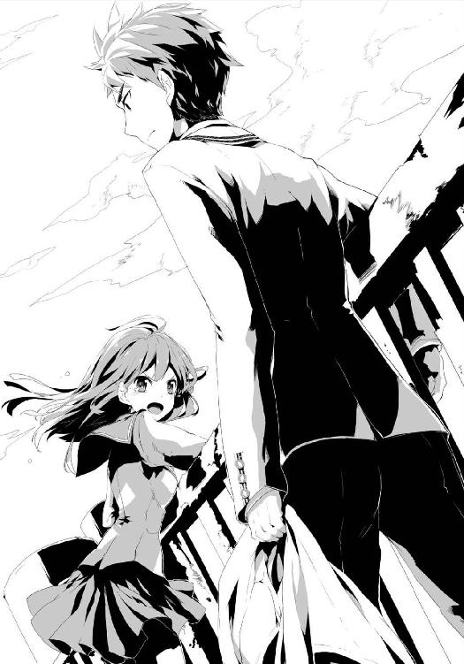
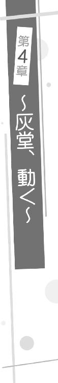

| 放課後四重奏 | |
| 高木幸一 | |
| SBクリエイティブ株式会社 (2013) | |

放課後四重奏
高木幸一

本書に掲載されているコンテンツの著作権等の知的財産権およびその他すべての権利は、ＳＢクリエイティブ株式会社または正当な権利を有する第三者に帰属します。
本書の内容を権利者の許諾なく複製・複写・翻案・放送・出版・データ配信（送信可能化を含む）などすることはできません。
カバー・口絵 本文イラスト
ぜろきち
ぼくは、ひとがすきです。

ちょっと、そこのあんたに聞きたいことがある。
もしあんたが、誰かが自殺せんとする現場に遭遇したとしたら？
......なに。その人が格好よかったら、もしくは可愛かったら助ける？ ......なんという答えだ。だから人間ってヤツは......。
......まあいい。ともかく今、それらしい場面に、俺は出くわしてしまったんだよ。
まず目に飛び込んできたのは、華奢な脚。
それはあまりに白く細く、そして、小刻みに震えていた。今はもう十一月下旬、日は沈みかけ、空気は冷ややかだったが、おそらく寒さのせいじゃない。恐怖でだ。
そいつは学校の、屋上のフェンスを越え、ふちに立っていた。冷風で紺のミニスカートがおおきく揺れ、その震えがいっそうあらわになっている。
女は俺に気づいていない。背を向けているからだ。......が、たぶんどこを向いていても、目はなにも見ていないだろう。きっと世界のなにごとにも無関心。頭にあるのは、哀れな自分に対する悲しみだけ。......あの感じはよく知っている。
絶望だ。
◇
しばらくのち、俺は女からおおきく視線を外し、屋上の一角でぱたぱたなびく衣服を取りに、物干し竿へと近づいた。変なものを見ちまったが、さっさとかき集めて、部屋に戻り、勉強しないとな。その前に飯か。
......なんだって？ 俺が冷たい？ ──冗談じゃない。
仮にあれが自殺だとしよう。しかし、そんなのは珍しくもない。その証拠に、新聞やニュースであの手のことを目にしない日はないだろう。それが今、眼前に現れただけのこと。
そしていざ「体験」し、その感想を言わせてもらえれば、なにも感じない。それが俺の実感なのだから、仕方ないじゃないか。うそをつき、人間らしい振る舞いとやらをしてなんになる。
それにあれは、まだ自殺と決まったわけじゃない。俺の予想が正しければ、面倒なヤツだ。......だからなおさら、関わりたくない。
俺は表情を変えず、目の前の物干し竿へ手を伸ばすと、ゆっくり洗濯ばさみを外し、カゴへ下着やタオルを放り込んでいく。......ちなみにこれらは、俺のものだ。なぜ学校の屋上に、洗濯物を干しているかというと、......近いから。それ以上は長くなり面倒なので、今、説明したくない。
......しかし、生乾きが多いな。きょうは特に寒かったからか。......仕方ない。もう一度、部屋干しを......などとしめったジャージに触れつつ思っていたところで、はたと気づいた。
服が足りない。
風で飛ばされたのか、Ｔシャツとズボンが一着ずつない。俺はすぐに辺りを見まわす。この西棟の屋上は、障害物もなければ、大して広くもない。飛ばされたのなら、すぐに見つかるだろう。
しかし、どこにもなかった。......もしかして、フェンスを越えて、下に落ちたのか？ だとしたらやっかいだな......。汚れるくらいならいいが、この高さだ。下手したら木に引っかかって取れないかもしれないし。......くそ、シャツは安いが、ズボンはけっこうしたんだぞ。
俺は四方のフェンスへ目を走らせた。そして、再び女のほうへ顔を向けるハメになる。......まだ突っ立っている。俺はため息をついて、少し考えたあと、やむなく女へ聞いてみることにした。──が。
女は、ふるふると震えていた二本の脚を動かして、カニ歩きで右へと移動、そして身を屈め、なにかに手を伸ばす。......なんだあれは。
俺は訝しげに、女が抱き起こした物体に目をこらした。ヤツよりでかい。そして、その形はよく見慣れた存在を模したもの......。どうやらマネキンのようだ。
と、思ったが、違う。──あれは人体模型だ。
女は、その筋肉と内臓をひけらかす人間もどきの両肩を押さえ、向き合い、じっと見つめた。セミロングの黒髪と、目に浮かべた涙が風に震え、夕日できらきらと輝いている。......な......、なにをしてるんだ、アイツは......。
あまりの光景に絶句する俺をよそに、ヤツは人体模型と情感たっぷりの対面を果たしたあと、それをフェンスに立てかけて、再度身を屈めると、なにかを手にした。
白いＴシャツだった。......俺の。
「......よね？ ......からね」
と、なにやらつぶやいたが、距離があるので聞こえない。なので近寄ろうとしたが、次の瞬間、女はＴシャツを、人体模型に着せ始め......って、──ちょっと待て！
俺はカゴを放り、慌ててズカズカ歩み寄る。それに気づかぬ女は、可動しない模型の手に、無理やり袖を通そうとして、思いきりシャツを引っ張り、果たしてフェンスの前に俺が到達した時には、「ビリッ」という耳障りな音と、「あっ」というふざけた声が、同時に耳の奥へと響き渡った。
「──おい、お前！」
そう叫んだ俺の声で、女はビクッと体を震わせ模型を手放し、倒れそうになったそれを慌てて支える。そして、その拍子にバランスを崩し、幅七十センチほどの足場でたたらを踏んだあげく、なんとかフェンスにしがみついて安定を取り戻した。......そしておおきなため息をつき、
「あー驚いた......。落ちちゃうかと思った」
と、言った。
「......。おい」
「......!!」
女は、顔を引きつらせる俺のほうをようやく見て、目をぱちぱちさせたあと、破れたシャツを着た下半身丸出し野郎を抱き寄せ、警戒しながらこう言い放った。
「──な、なんですか!? 説得には応じませんよ!!」
「......はあ？」
そう眉をひそめてつぶやき、感づく。......コイツ、もしかして俺が自殺を止めに来たとでも思っているのか？ そもそも今、「落ちちゃうかと思った」とか言ってたろうが。元より死ぬ気もないくせに。......やはり面倒なヤツだった。
ため息をつき、半眼で女の足もとを見やる。すると案の定、俺のズボンが置かれていた。......きちんと畳んでいたらいいってもんじゃねえぞ。
俺は頭を押さえつつ、未だ模型と抱き合う女に言った。
「......その服。両方とも俺のだから返せ。これが用件だ」
「......。その証拠は？」
......盗っ人猛々しいとはこのことか。ますます頭が痛くなってきた。
「あのな......。タグに『灰堂』と書いてあるだろう？ 灰にお堂の堂。それが俺の名前だ」
その言葉に、女は模型を抱き寄せたまま、首のタグを見る。それからいったん立てかけて、しゃがむと、今度はズボンを調べる。そうして最後に、俺の顔を見て「......確かに。どうやら信用せざるを得ないようですね」と真顔で言い、うなずいた。......お前はどこの何様だよ。そろそろ実力行使に出てもいいような気がしてきた。
......が、まずそれよりも、服だ。
俺は深呼吸して気を落ち着かせると、フェンスをひょいと乗り越え、五秒とかからず女の前へおり立った。そんな俺にあとずさりし、距離をとる女を無視して、畳まれたズボンを拾い、フェンスの向こうへ投げる。パスッ......という音とともに、それは畳まれた状態のまま、内側へ着地した。また洗い直しか......。
それから、今度は女の彼氏からシャツを奪い取る。「あっ！」とか言っていたがこれも無視。そして無残な白布になったそれにため息をつきつつ、再び向こう側へ投げた。ズボンの上にふわりと着地する。
「じゃあな。シャツを破ったのは......もういい。さっさと寮に戻らないと、飯が食えなくなるぞ」
そう言って、俺はフェンスに手をかけたが、「ちょっと！」と呼び止められた。
「今の......どういう意味ですか？ 寮に戻れって......」
「......どういう意味もなにも、飯は七時からだろう。今はまだ四時だが、その様子じゃうだうだ時間をつぶして、あっという間に過ぎてしまう。だから忠告したんだよ」
女は、苦虫をかみつぶしたような顔になる。

「......あなたは......。私が自殺なんかするわけないと思っていますね......」
泣きはらした目で、俺を睨んだ。脚と同じように、白っちい顔。ちいさな鼻と口と......体。目ばかりがおおきく、濡れて輝いている。赤いネクタイ、ということは一年か。......なにをそんなに思い詰めているんだ。いじめか。失恋か。はたまた身内の問題か？ ......。
......いや。どうでもいい。......人のことなんか。
俺は、依然睨みつける女に、下を指差しながら、淡々と答える。
「......この五階建て校舎、西棟の屋上は四角。つまり四辺ある。それぞれ下は地上の芝生、アスファルト、二階渡り廊下のコンクリート。落ちれば九十九パーセント死ぬだろう。......が、お前が飛び降りるため選んだこの一辺の下には、プールがある。......ここを選んだ理由は？」
「......た、たまたまです!! それにプールがあったって!! ......」
「そうだな。校舎から突き出たでっぱりと......それプラス、今俺たちが立っている足場があるにせよ、ただ垂直に落ちるだけなら、プールサイドでひしゃげたトマトだ。だから最低一メートルは飛ばなきゃならない。......しかも風にあおられて失敗するかもしれないし、ドボンできたとしても、うまくやらなきゃ相当の衝撃を食らうことになる。下手すりゃ腕や脚を骨折、最悪首の骨だ。......お前、飛び込みとかやったことあるか？」
女は、黙った。俺は続けた。
「......なんにせよ、現実的にはそうであっても、ここを選んだのは......お前の深層心理の表れだよ。死にたくないっていうな。......その証拠に、人体模型。どこの世界にそんなものと自殺するヤツがいるんだ。しかも他人の服まで着せて」
「......ふ、服をお借りしたことは謝りますが......。彼と飛び降りるのは私の勝手です！ ......ともかく私は本気なんです!! いいんですか、飛び降りますよ!?」
「お前は自分の発言のおかしさに気づかないのか......。だいたいさっき『落ちちゃうかと思った』とか言ってた気がするが。死ぬ気のヤツが、なんで落ちなかったことにホッとする必要があるんだよ」
「......あなた、見かけによらず理屈っぽい人ですね......」
「......お前は理屈がなさすぎるだろう。よくこの高校に入学できたな。......俺の時はマークシートだけじゃなかったんだがな。変わったのか？ すべてそれに」
互いに、言い放ち睨み合う。相容れない人間同士が対峙すると、こんな感じになるのだろう。俺たちは「ふ、ふ、ふ」「は、は、は」と、苦笑いとも嘲笑とも言えぬ、妙な声と面をさらしつつ、しばらく向き合った。
やがて女は笑みを消し、口を尖らせ、ブレザーのポケットからするするとビニールヒモを取り出して、人体模型を引き寄せると、自分の背中にくくりつけた。模型のほうがでかいので、おぶる、というより合体しているような......不気味な姿になった。模型もこうして、こちら側へ運んだのか。......フェンスをのぼる姿を想像し、苦笑せざるを得なかった。
そんな呆れる俺に向き直ると、ヤツは何度か口を震わせたあと、言った。
「......ジェイムズ太郎に服を着せられなかったのは残念ですが、これも運命というものかもしれません。今から私たちは飛び降ります。......この世とおさらばです。そして、ここで出逢ったのもなにかの縁。......あなた、見届けてくれますか？」
「断る」
「えっ!?」
女は目を見開いた。......なに意外そうな顔をしてやがる。そもそもジェイムズ太郎かフランソワ次郎か知らんがふざけるなよくそったれ。これ以上付き合ってられるか。勉強時間が減るだろうが。
俺はフェンスをつかみ、足をかける。それで女は慌てて言った。
「ちょ......！ なにしてるんですか!! 今から私、飛び降りるんですよ!?」
「勝手にしろ。ただし、ちゃんと靴を脱いで、遺書をその下に敷いておけよ。......この屋上へは洗濯物を干しに、俺はよく出入りする。だから今の時間帯といい、お前が死んで真っ先に疑われるのは俺だ。......まさか遺書も用意してないんじゃないだろうな」
その言葉に女は、目も、口もおおきく開いて、ほんのわずかにかぶりを振った。......信じられない、といったふうだ。
「......あ、あ、あ......あなたは人の心というものがないんですか!?」
「さあな。......ただひとつ言えるのは、『お前は飛び降りない』。その模型といい、人の気を惹きたいだけとしか思えないし。......おおかた俺が、この時間に来ることも知ってたんじゃないのか？」
「──っ!!」
ヤツは怒りに満ちた目で俺を睨みつける。そしてわなわなと震え出し......涙をこぼした。
「......うっ。うう......。なんでいつも......」
「......。早く帰れ。飯に間に合わなきゃ、寮の門限は八時だから、それまでになにか外で買うか、店で食っておけよ」
と、声をかけたが、まったく聞こえていないようだった。女はしばらくうつむいたまま、嗚咽を漏らした。
そしてしばらくのち。泣きやみ、ヒモを解いて......人体模型を体から離した。
「......あなた。......灰堂さん。青いネクタイ......ということは、二年生ですか」
「......そうだ」
短く答えると、女はじっと俺を見つめ、言った。
「灰堂さん。あなたは今まで、恋をしたことがありますか？」
「......」
「想いを伝えたことは？ 付き合ったことは？」
「答える義務はない」
なんの感情も込めずに返す。女はそんな俺の目をのぞいていたが......腹の内を探る、といったふうでなく、なにかを訴えているようだった。私は......なんですよ、と。
それがなんなのかは分からないし、興味もない。ただ......夕日のせいかもしれないが、宝石みたいな輝きを放っている瞳が、少しだけ、胸を打った。......久しぶりに見たな。こういう目。
そのまま、ふたりして黙っていたが、やがて女はおおきく息をはき出した。それから方向転換し、一歩、また一歩......プールが見えやすい位置へと移動する。
そしてとうとう、そのつま先が、ぎりぎりまで達した。
「......よく考えたら、いきなりこんな......わけの分からないのが出てきて、自分の服を盗って......普通怒りますよね。しかも破いちゃったし。......すみません。これで足りるかどうか分かりませんが、お財布を置いていきますね」
と、ブレザーからペンギン模様の財布を取り出し、しずかに下へ置いた。それから体を起こすと、俺に頭を下げて、人体模型をしばらく見やる。そして、まっすぐ夕日に向き直り、
「......あーあ。......一度くらい、素敵な恋を、してみたかったなあ......」
そう、泣きそうな声でつぶやいたあと、女はふちを蹴って身を投げた。
◇
さいしょに、なにも感じなかったのはほんとうだ。
そもそも自殺などするわけがない、という予測もあったが、たとえ自殺だったとしても、心は動かないんだ。......そんな感情はもはやない。
それがどうしたわけか。なにが原因なのか。まったく分からないし、考えたくもない。ただ、厳然たる事実として......。
気がつけば、俺は女に飛びつき、抱きかかえ、一緒に下へと落下していた。
「......ぶはっ!!」
見事プールに落下して、水中で暴れること十数秒、なんとか顔を出した俺は、呼吸と、飲み込んだ水をはき出す作業を交互に繰り返し、それから、自分の腕の中にいる女へ目を向ける。......気を失っていた。
俺は舌打ちして、女を抱きかかえたまま、必死に片手で水をかき、足で蹴り、プールサイドのハシゴへたどり着く。それでようやく上がった。
そして女を寝かせてすぐ、「おい、......おい！」と呼びかけ、肩を叩いてみたが反応がない。まさかと思って胸や腹を見ると、まったく上下していない。顔に手を近づけても、なにも感じない。......息をしていなかった。
思わず唾を飲み、一呼吸して、今度は胸に耳を当てる。......心音が、聞こえない。
俺はゆっくり体を起こし、呆然と、横たわる女を見おろした。......誰か、呼......、......いや、待て。......呼びに行くよりも、ＡＥＤ......はこの時期、プール周りには......。......というか今、心肺停止からどのくらい経っている。いつから止まったんだ？ ......もうコイツを置いて探してる場合では......。
......なんなんだ。俺はただいつも通り、洗濯物を取りにきただけだぞ？ なんでこんな......。──くそっ！ ......時間の無駄か！
俺はかぶりを振り、まとまらない思考を払いのけ、自分にとっての最善をなすため、頭を切り替えた。女の額に手を当て、反対の手の指でそっとアゴを持ち上げて、濡れそぼった頭を後ろへそらし気道を確保する。そして鼻をつまみ......血の気の引いたちいさな口へ息を吹き込んだ。
そしてもう一度吹き込み、唇から離れると、心臓マッサージを行い、終えるとまた息を吹き込み......。俺は夕闇が迫る中、ただひとり、過去に本で読んだだけの、生まれて初めての蘇生措置を、きょう会ったばかりの......見知らぬ女に続けた。
◇
「──けほっ！」
約五十秒後──。女は子供みたいな声を出し、横向きになり身を縮め、顔をしかめたままむせ始めた。そしてしばらくのち、涙を浮かべたうつろな目で、こちらを見やった。
俺はもうろうとしている女に、指を二本突き出し「......これは幾つだ」と尋ねる。するとわずかに目を細めたあと、ちいさく「ちょき......」と微妙にずれた返事をした。......まあ無事ならいい......。
「......はぁ。きょうはなんて日......」
そう言いかけて、また女が目を閉じたことに気づく。なので慌てて「おい......おい！」と声をかけるが反応がない。すぐに息を確認するが、ちゃんとしていた。心臓も動いている。気絶したようだった。
頰を叩いても、目を覚まさない。服はびしょびしょ、青白い顔。気温は下がるいっぽうで、風も吹き続けている。......このまま放っておけば......。
顔をしかめ、混乱した頭をかく。......どうする。俺は携帯を持っていないし、置いて呼びに行くわけにもいかないから、保健室へ運ぶのが妥当か......。しかし、この状況の説明は......。コイツはともかく、俺が落ちた理由は......。
......なぜ俺は、落ちたんだ？
落ち着かぬ気持ちのまま、濡れた髪を乱暴にかき上げたあと、俺は周囲を見まわした。......ここは、更衣室兼出入り口以外の三方は、七、八メートルのフェンスに囲まれている。出入り口は鍵がかかっていて、外から入られないのは周知の事実。だから、中に入るにはあれらをよじのぼるしかない。......が、そんなことをして冬のプールにドボンする阿呆がいるわけがない。......ゆえに必然、誰が見ても、今の俺たちの状況は、上から落下してきた以外にない。......一緒に自殺しようとしたか、どちらかが、助けようとしたか......。......助けようとした？ 俺が？ ──冗談じゃない！
そんなこと、口が裂けても言いたくない。......しかしその言葉を用いないで、このありさまをどう話す。なにか他に言うことは......。
そんなことを考えて、再度、片手で頭をかいた時──。反対側の袖を、つままれた。
「......？ 気づいたのか......、──おい！」
女はこちらの呼びかけに、青白い顔のまま、半眼で見上げると、ちいさく口を動かした。
「......言わないで」
「......。......なに？」
「......お父さんとか、お母さんとか、お兄ちゃんとか、弟とか......。それに友達も。皆、心配するから......。......学校へは言わないで下さい」
そう、もうろうとした様子で、つぶやく。俺は啞然としたあと、苦笑してかぶりを振る。
「......いいか。これから俺は、お前を保健室へ連れて行く。そこで先生に引き渡し、帰る。そのあとのことは、知らん。......残念ながら、お前の望み通りにはならないだろうよ」
「......」
「そもそも心配かけたくないのなら......。......。......ともかく。自分の行いは、自分で引き受けろ。そしたらこんな馬鹿は、もうしないだろうしな」
「......。......ですよね。......ふ......。......私はいつも......」
「......」
「......なんでこんな、なんだろう......」
そう言って、また目を閉じた。すぐ声をかけ、軽く肩を叩いてみたが、反応はない。袖は、つままれたままだ。......気を失ったのか、寝たのか......。どのみち運ばなきゃならないから、一緒か......。ため息をついて、再びヤツの顔を見る。......が、その瞬間、俺は目を見開いた。
女は泣いていた。
おおきな目も、ちいさな口も、閉じたままゆがんで、泣き声こそないものの、ちいさな子供が悲しんで泣く姿そのものだった。......体の痛みによってでは、ない。......。
俺はヤツのそんな顔と、頼りないくせに離そうとしない、袖の指を見て、瞬間──昔の自分の映像がフラッシュバックし、鋭い痛みが胸の奥を襲う。......馬鹿が。泣いたって誰もなにも......。......誰が助けに......!? ......くそ!!
胸を押さえたまま、思わず女を睨むが、ヤツは相変わらず泣いたままで、俺の袖をつまんで離そうとせず......。俺は舌打ちし、二度、深呼吸すると、なんとか冷静さを取り戻してから、ちいさな手をつかみ、袖から離した。
それから、すぐに女の手足に肋骨、そっと慎重に、背や腰、首へも触れてみる。......異常は、おそらくない。脳や内臓は確かめようもないが、ともあれ全体的に、外傷については、おそらく大丈夫だろう......。
そう確認したのち、俺は女を、花嫁を抱くように持ち上げた。気を失っているので、おぶる体勢まで持っていくより、こちらのほうがてっとり早い。そうして抱えたまま、出入り口へと歩き、鍵を開けて外へ出た。
幸いプール周りに人気はなく、脱出は成功した。だがそれからが大変で、俺は息を殺し、クラブだなんだで付近をうろつく生徒たちから、植木や銅像や校舎の陰へと身を隠し、西棟外付けの非常階段までようやく達する。ここでも辺りに注意を払いながら、なんとか三階まで上がり、中へ入った。
......保健室ではなく、別の部屋を目指して。
◇
薄暗い廊下を少しだけ歩き、俺は、「校務員室」と書かれた、古いプレートがかかった部屋の鍵を開けた。
ちいさな玄関に上靴を脱ぎ落とし、すぐの六畳間へ女をおろすと、隣接する二畳ほどのキッチンスペースへ歩いて湯を沸かす。灯油ストーブもつけた。
その後びしょ濡れの女を見おろして、一瞬考えたあと制服を脱がす。蒼いブレザーに、赤いネクタイ、そして白いブラウス......。そのあと紺色スカートも、上靴も白の短い靴下も脱がした。
それから上下白い下着姿になった女の体を、タオルケットで拭く。髪の毛は、頭を揺らさないように、細心の注意を払って、包み込むように水気を取った。......ほんとうは全部脱がせるか、せめて下着の上をゆるめるかしたほうがいいんだろうが、目覚めたあと、ろくでもないことが起こるに決まっているからな。十中八九、この状態でもぎゃーぎゃーわめくだろうし。
ため息をつきながら、ようやく拭き終えると、新しいタオルケットを三枚かけ、毛布もかぶせた。その頃には、ストーブの熱が部屋に行き渡っていた。
◇
「......。......？」
「......おい。これが何本か分かるか」
「......ぱー」
毛布から顔だけ出した女は、うつろな目で、ジャージ姿の俺が示した指の数に、そう言った。......ほんとうに、今の状態のせいだろうか？ なんとなく、コイツは天然タイプのような気がしてきた。
そんな斜め上の返事を確認したあと、俺はポットからカップに湯を注ぎ込み、ミルクを加えて差し出した。女はぼんやりそれを見て、ゆっくり体を起こし、受け取った。
「......ミルクティー......です......か？ 私、コーヒー牛乳のほうが好き......なんですが......」
「......安心しろ。お前の好きなほうだよ。インスタントで悪いがな」
たどたどしくも、マイペースな言葉に、顔をしかめつつ、答える。すると女はカップに鼻を近づけて「......あ。ホントだ......」とのたまったあと、ちびちび飲み始めた。
「......気分はどうだ。はき気がするとか、頭が痛いとか......。あと体で痛むところは？」
女はゆっくり首を振る。少しホッとして、俺はそばに置いていた、ヤツの制服一式を引き寄せた。
「洗濯して、ドライヤーとアイロン、それにそこのストーブで乾かした。......生乾きだが着られないことはない。......少ししたら寮に戻れ。もう七時半だから飯は終わったが、門限には間に合う」
俺は袋を差し出した。
「ここにコンビニの、温めた弁当がある。......財布も中に」
「財布？ ......服を乾かす......。......どういうこと......ですか」
「......。お前はプールに落ちたんだよ。財布は屋上に置き忘れていたのを、さっき拾ってきた。中は開けていない。それと制服のポケットは確認させてもらった。洗濯機が駄目になるからな。......その中身も袋に入っている」
女は瞬き、ビニール袋と制服へ、交互に目をやると、カップを見つめる。そうしてしばらく、なにかを考えていた。
「......そうだ。私屋上に......。それであなたと」
そこで口調がはっきりしたものに戻り、俺の顔を見るが、すぐうつむき、再びなにやら考え出す。......どうも記憶がすっ飛んでいるようだ。......完全に、かはまだ分からないが、少なくとも今は、プールサイドで話したことも、思い出せないだろう。......まあ、無理もない。気絶からは、俺がシャワーを浴びてすぐ目覚めたが、そのあと寝始めたからな......。三時間くらいか。一部記憶がないことや、若干の混乱もそのせい......一時的なものならいいんだが。
ともかく、やはり早めに病院へ行かせたほうがいい。......それも含め、きっちりと言い渡しておく必要がある。
俺は息をはき、「おい」と声をかける。......が、女はうつむいたまま、震えていた。カップを持つ手も、ちいさな肩も、まるでそこだけ地震が起きているかのように。......なんだ？
訝り、顔をのぞき込むと、目をおおきく見開き、口を引きつらせている。女は、いつの間にかカップではなく......自分のあらわになった上半身を凝視していた。
「......あ。......あ。......あ......」
「......。言っておくが、なにもしていない。ただ体を拭いただ......」
「──いっ──!! やああああああああああああああああああああああああああああああああああああああああああああーーーーーーーーーーーーーーーーーーーーーーーっ!!」
突然の金切り声に、頭を金属バットで殴られたような衝撃を受けた俺は畳に手をつき、ゆがんだ顔で女を見やる。するとヤツは、毛布をめくって中を見て、得も言われぬ表情をしたあと、全身の血がすべてそこに集まったかのように、真っ赤な面へと変貌、それから「......あっ、......ああっ！」とうめきつつ、涙をぽろぽろこぼし始めた。......もしかして、コイツはものすごい勘違いをしてるんじゃないのか？ ......おい、冗談じゃないぞ......。
「......いいか？ 落ち着いて話を......。数時間前、お前は溺れ、一瞬、息も心臓も止まっ......」
「あああああ！ ......そんな......なんでこんなっ!! ううううううう～～～～～～っ!!」
俺の声を猫のようにうなってかき消し、毛布へ顔をうずめる。もはや泣いているのか叫んでいるのか、ともかく悲痛な様子だけが伝わってきた。......完全に、俺がなにかしたと思い込んでいる。これはどう言っても無理だ。しばらく時間を置くしかない。......くそ。
俺は眉をひそめ、玄関に立てかけた人体模型へ目を移す。あのままにして取りに行かせ、また変な気を起こされたら敵わないから運んできたものの......。いったいこれをどこから持ってきたんだ？ まさか私物じゃないだろうな。
腕時計を見ると、門限まであと十五分。走らすわけにはいかないから......アウトか。
「仕方ない。携帯だ。水没していたが、さっき確認したら電源は入るようだったし、それで寮に......」
「......うっ。うう......。汚された......」
「......。借りるぞ」
と言って袋へ手を伸ばすと、ものすごい速さでひったくられた。女は動いた際、あらわになった背中に気づき、毛布をくるくると巻きつけて、てるてる坊主のようになる。
そうして、涙目で俺を睨みつけヤツは言った。
「......あ、あなた！ 人の携帯を見るとかっ！ ......デリカシーのな......ああそんなことより......私......私......」
あまりにパニクっているので、俺は数秒考えて、言葉を返した。
「......よく聞け。俺は今から外に出る。十分だ。その間に着替えてもらう。そして、落ち着いて、よく考えてみるんだな。自分の体のことなんだから、冷静になれば分かるはずだ。姿見でも見たらどうだ？ そこにあるだろう。......じゃあな」
俺はおろおろするてるてる坊主を置いて外へ出た。それから再び腕時計を見て、夕方から、失われた数時間におおきなため息をついた。
◇
「信用します。どうも申し訳ありませんでした」
制服姿になった女は、俺が戻ったとたん、ぺこりとお辞儀をする。予想以上の豹変ぶりに、やや面食らっていると、ヤツは真顔のまま続けた。
「確認しましたけど、下着を脱がせた感じはなかったですし、なにより言われた通り、冷静に考えたら......あなたは今、ジャージです。髪も洗って乾かしたようにふわっとしていますし。と、いうことは......。ちょっとまだ、よく思い出せませんが......、おそらく私が屋上から落ちたあと、あなたは急いで下へおり、プールで溺れているのを助けるため、飛び込んで濡れてしまった......、ということですよね？ ......ありがとうございます」
「......少し違う」
「えっ？」
瞬く女に、俺は外で着替えを待つ間にまとめた考えを、淡々と伝えた。
「......まず、言っておかなければならないが......。お前はひとりで上から落ちたあと、溺れて、一瞬、呼吸も心臓も止まっていた。......なので俺が蘇生措置を施した」
果たして女は目を見開いて、口をぱくぱくする。そうして「そっ......それって......。──わ、私は大丈夫なんでしょうかっ!?」と青い顔であたふたし出したので、俺は「......落ち着け。話が途中だ」と制して、続けた。
「......ともかくそういうことだから、あしたにでも、近くの総合病院に行って、検査してもらうんだな。若干記憶が混乱しているようだが、そこそこ思い出せてるし......、なにより意識がはっきりしていて、ちゃんと会話もできているから、たぶん大丈夫だろうと思うが、......念のためだ」
「......。......で、でも......」
と、口ごもる。俺はため息をつき、ぼそりと言った。
「......家族や友人にバレるのが、嫌か。......そう言ってたが」
「......えっ？ 今なんて......」
「......なんでもない。......覚えていないほうがいい」
そう、女に聞こえぬくらいの声でつぶやいたあと、不安そうに見るヤツへ、再び言った。
「......ちなみに......。今現在、学校にも、誰にも......お前が『落ちた』ことは知られていない。これを知っているのは、俺とお前だけだ。......そこで、提案がある」
「......な、なんでしょう」
居住まいを正す女に、続ける。
「......病院へは、後々のことを考えて、行ってもらうが......。ちょっと説明を変えるんだ。お前は『事故』で溺れたことにする。......なにか......、例えば川辺で足を滑らせたとか。それなら、ほんとうの事情を伝えるよりは、多少ましだろう？ 当然心配はされるだろうが、それは体の具合のことだけで......意味合いがまったく違ってくるからな」
「......。......そう......ですね。それなら......」
と、少しやわらかな顔になる。それを認めたあと、俺は言葉を投げた。
「それと。蘇生措置を施した人間のことだが......。これは通りすがりの誰かに助けられたとか、......知り合いに頼んで口裏を合わせてもらうとか。......そんなふうに、適当に帳尻合わせをしておいてくれ」
「......？ な、なぜですか!? それはそのままでも......。だって、あなたが助けてくれ......」
「──違う」
強く言って、遮った。その迫力に押されて少し黙るも、納得がいかず、女が言い返そうとし始めたところで、俺は畳を指差した。
「......ここは、俺の部屋だ。......なぜわざわざ、ここにお前を連れてきたか、分かるか？」
「......。いえ......」
「後々の面倒を避けるためだよ」
女は怪訝な顔をする。俺は続けた。
「......さっき言った通り、放っておいたら、お前は死んでいた。で、俺はその姿を見てしまったわけだから、捨て置いたら大問題になる。だから処置したわけだが......。そのあと保健室へ連れて行ったりして、今回の件に関わった経緯なんかを、あれやこれやと学校側から聞かれたくなかったんだよ。立場的にな」
「......。......立場？」
「......俺はこの学校の、奨学金制度を利用している。金を借りて、勉強してるんだ。......無用な問題を起こしたくはない、ということさ」
「......で、でもっ！ あなたが責められるようなことはひとつも......。むしろ褒められることだと思うんですが！」
「......それはお前の主観だ。学校側の判断じゃない。教師の中には俺を快く思ってない輩も多いんだ。......だからたとえ一パーセントでも、俺にとってよからぬ風が吹きそうならば、......取り除く。有り体に言えば『穏便に生活を』、だ」
「そ、そんな......」
「......ともかく。ただこちらの立場を守るためにやったことで、『助けた』なんて事実はない。それ以外は、ほぼお前の言った通りだ。......誰にも言うなよ」
「......」
女はやはり、納得がいかない様子で口を尖らせていたが、俺が真顔を崩さないので、しばらくのち、渋々とうなずいた。
「......よく分かりませんが......あなたがそう望むなら。......ありがとうございました。......あ、あと」
「なんだ？」
「今、『俺の部屋』と言ってましたけど......。ここは男子寮なんですか？」
「違う。学校の、使われなくなった校務員室だ」
「......？ でもあなたの部屋って......」
「だから、俺はここに住んでるんだよ」
女は一瞬、俺がなにを言っているのか理解できていないようだった。しばらく頭を押さえたあと、俺を何度も指差して、変な笑みを浮かべつつ、言葉を放った。
「え？ ......えっ？ 学校......。なんで寮に入ってないんですか？」
「人付き合いがうっとうしいからだ。入学して半年は向こうにいたけどな」
女は啞然とする。俺はちいさく舌打ちしつつも、続けた。
「......元々、この西棟は音楽室や美術室等の、特別教室用に建てられたものだが、三年前、東に新棟ができて以来、使われなくなった教室、部屋のほうが多くなった。三階は特にそう。......そしてここ......旧校務員室は、電気ガス水道、シャワーにトイレ。生活に必要なものはすべて揃っている。だから住むにはうってつけだし、棟はガラガラだから授業の邪魔にもならないだろうと、俺は入学一ヶ月目で見つけて、それらのことを調べてすぐ、当時の担任に嘆願した。だが当然、さいしょは突っぱねられたよ。なにを馬鹿な、ってな。しかし......」
女は口を半開きにしていた。俺は咳払いし、やや声をおおきくする。
「......しかし、だ。さいしょの定期考査で俺は学年三位を取った。同じくさいしょのスポーツテストで学年二位。その後の成績も......ペーパーテストも実技も、学年七位より落ちたことはない。......それで職員会議が開かれた。......うちの......私立緑育学院のモットーは知ってるか？」
返事はない。俺はそれを否定と解釈し、言葉を紡いだ。
「それは『既存の枠に囚われない人材を輩出し、その時代時代の停滞を打ち破ること』。創立者、竹井静氏の言葉だが、実際学校ができて四十五年、政界、財界、マスコミ界、芸能界や、スポーツ界に芸術界......あらゆる業界に一風変わった人材を幾多も出している。だから、そんな結果に、俺の嘆願、成績を鑑み、『既存の枠に囚われない人材を輩出するという言葉に倣うなら、教育も枠に囚われたものであってはならない』『違う、これは一生徒の単なるわがままだ。第一最低限の協調性もない人間が、社会に出てやっていけるわけがない』云々、教師たちは喧々囂々の論議をぶちかまし、意見はまっぷたつに割れたが、最終的に当時一年の学年主任だった人の論説が決め手となって、許可が出たらしい。......半年かかったけどな」
「......」
「......ちなみに、さっきの、俺を快く思っていない教師連中ってのは、反対派のことさ。......まあそういう経緯を経て、俺は今もここに住んでいる」
喋り終えて、息をはく。それに合わせて、女はようやく口を閉じた。
しばらくのち、女は、呆れたようにつぶやいた。
「......た、......確かに、もっともらしいお話でしたけど......。──で、でもっ！ ほ、ほんとうにそんな特例が、あなたにだけ認められるんですか？ ......もしかして、単に危険人物とかで隔離されてるんじゃ......」
と、体を抱き、あとずさる。......おい、またなんか妙な空気になってきたぞ。
「今喋ったことに噓偽りはない。それに成績だけじゃなく、生活態度だって、特に問題ないんだ。だから許可も......」
そう言いかけて、思い出す。そういえばあれをどうにかしないと。来週辺りちくちく言われるな。のらりくらりかわすのも、もう限界だろう。
俺が自分の問題に頭を痛めていると、女はコンビニの袋を拾い上げ、目を半眼にして、少しずつカニ歩きでドアへと身を寄せていく。そして、人体模型の腕にしがみつきつつ、上靴をはいた。
「た、助けてくれてありがとうございました......。いつかきっと、改めてお礼を......。りょ、寮には電話します。病院にもあす、きちんと......。お、お弁当もありがとうございます。──じゃ、じゃあ！」
ぎこちない笑みを浮かべて、女は人体模型とともに出て行った。
◇
完全に、変質者かなにかと思いやがったな......。不愉快極まりないが、もういい。かえって好都合だ。あれで俺の前にはもう、現れないだろうし、周りに話すことはないだろう。ひと安心だ。......せいせいする。
俺はゆっくり立ち上がり、ヤツにかけていた毛布を拾い上げると、開け放した押し入れへ乱暴に放り込んだ。
プールに落ちてから二日ほど、俺は風邪で寝込んだ。
頭が割れそうに痛み、はき気もするので学校も休み、とても勉強どころではなかった。その後も全快にはほど遠く、三日目から授業には出たものの、日課であるジョギングや筋トレは、回復を早めるためあえて休止した。
そして、落下事件から一週間経ったきょう。ようやく頭痛が消え、だるさもなくなったので、早朝五キロほど走り、腕立て腹筋スクワット、背筋を各百回......いつもの半分くらいだが......こなした。
そんなふうに、久しぶりに体を動かせて清々しい気分になり、シャワーで汗を流したあと、気持ちよく登校した俺は教室へ入る直前で、待ち構えていた担任に捕まった。
「おはよう灰堂。さっそくだが部活の件で話がある、こっちへ来い」
正直、分かっていたことではあるが......、タイミングが最悪だ。せっかく忌まわしき事件の記憶から解放されつつあるのに。今考えたくもないことを......。なんとかはぐらかしてみるか。
「あー......。先生。僕ちょっと体調がまだ優れないので、その話は今度にしてもらえませんか」
「駄目だ」
ひと言で切って捨てられた。そして彼は、俺を外の、非常階段の踊り場まで連れてゆく。
まだ若いのにロマンスグレーの頭髪と、細い目が渋い光を放つ担任の三枝先生は、「サンシ先生」「３Ｃ」等と呼ばれる、三十半ばくらいの、生徒想いで人気のある、人当たりのいい数学教師だが、それが今、俺にとってはよろしくない。
彼は人気のない、冷風吹く朝の踊り場で、淡々と話し始めた。
「もうすぐテスト二週間前になる。そうなればお前は『テスト勉強に集中したいので』と言って逃げる。テストのあとは冬季休暇だ。それが明けたら、またなんだかんだと理由を並べ、のらりくらりと逃げ続けることは目に見えている。......実際そうして、もう二年の終わりだ」
みっちりと、正論を並べ立てられる。そのまま、目をそらす俺に続けた。
「いいか灰堂。確かにお前はトップクラスの成績を保っている。そして生活態度も、基本的には問題ない。だがな、我が校四十五年の歴史の中で、唯一の特例を認められたお前であるがゆえに、それを取り消さんとする反対派は、未だにいる。......お前は寮を出たい理由を『寝食を多人数とともにするのは耐えられない』と、自分の生い立ち、勉強してきた環境を示し、嘆願したよな」
俺は「はい」とうなずく。彼もうなずき、言った。
「可決されたのは、うちのモットーもおおいに関係するが、なによりも賛成派の多くが......端的に言っていいか？」
「はい。同情ですよね。別に気にしてませんから」
彼は「......そうか」とちいさく言って、深呼吸すると、また話し始める。
「......まあ、そういうことだ。......そして反対派の言い分の、保守的な面は置いて、もっともなものとして『協調性が欠け過ぎるのはよくない』。......これは賛成派の俺も、そうだと思っている。だから反対派を押さえ込むためでもあるが、俺個人の意見として......。灰堂、部活に入るんだ」
「......」
「多人数が嫌なら同好会でもいい。......俺はな、友達がすばらしいとか、仲間と過ごすのは楽しい、とかは言わん。そういうものの面倒、時にはうそっぱちな部分も知っている。だが一度は、クラス以外に、趣味嗜好の似通った他者と過ごす時間を、体験しておいたほうがいいと思う。......ひとりで生きていくつもりなら、なおさらな」
真顔で、そう言った。
俺はしばらく、黙っていた。先生も黙っている。......この話は二年になって以来、バリエーションは異なるものの、幾度も繰り返し聞いている。が、今回はかなり内容が具体的で、踏み込んでいた。
聞くたびに逃げ続けて、彼の甘い面につけ込むように、うやむやにしてきたが......、カンで分かる。......もう無理だ。
仏の顔も三度まで。今拒否すれば、先生はなんらかの策を講ずるだろう。最悪、反対派にまわる可能性もある。賛成派にどれほどの教師がいるのかは分からないが、今まで接してきた教師たちの中で、俺に心から肯定的なのはこの人だけだと感じている。
しかし......やはり入部は嫌だ。自分のまいた種ではあるが、二年も終わりになる俺が、今さらどの面下げて、どこに所属するというのか。確かにここは生徒が千人もいて、クラブ・同好会の数は五十にのぼる。そりゃどこかに、入れるところはあるだろう。しかしそんな問題じゃない。嫌なものは嫌なんだ。ガキのようで自分でも笑っちまうが、もはや理屈の域じゃない。
......三枝先生。世の中あなたみたいな人ばかりじゃないんだぜ。
彼は黙ったまま、俺の返答を待っている。その表情は、愛想笑いを浮かべる様子もなく、イエスかノーの二択を突きつけている。俺は唾を飲み、背中に嫌な汗をかきつつ、ようやく痛みの消えた頭を必死に回転させて、数十秒後......ぽつりと言った。
「......。クラブを創る......、......というのはどうでしょう」
「......なんだと？」
彼は、厳かな表情を崩し、子供のような顔になる。そしてなにか続けようとするが、それを遮るように、俺は言葉を放った。
「......実は前々から考えていたんですよ。その......この学院は生徒数が多く、いろんな人間がいますし、俺のように悩みや不安を抱えている者も多いでしょう。だからそういう人たちの悩みを聞いたりする場所を、創れたらな、と」
「......待て。それは......カウンセリングみたいなことをするということか？ しかしうちにはすでに、その先生はいらっしゃるし、第一、言ってはなんだが、幾ら成績が優秀とはいえ、高校生のお前に、そのノウハウがあるとは思えないんだが」
「はい。僕に専門的な知識はありません。しかし、だからこそできることがあると思うんです」
と、まっすぐ彼の目を見返しつつ、俺は を握り、声をおおきくした。......自分すら騙すように。
を握り、声をおおきくした。......自分すら騙すように。
「悩みや不安を抱えている人間は、それを解決したいのはもちろんですが、まず第一に『誰かに話したい。気持ちを分かって欲しい』という切実な想いを抱いています。......そういう存在を求めているんです。悩みがメンタルに関することならなおのことそうでしょう。なので同じ悩みや不安を抱える生徒である僕が、ただ話を聞く、ということが、彼、彼女らの助けになるのではと思います」
彼は黙っている。俺は力強く、続ける。
「......それに。くだんの生徒たちは、心が縮こまっている状態であるがゆえに、カウンセリングの先生の部屋を訪れるのが怖く、ますます悩みの底に沈んでいっている者も多いはずです。ここは全寮制で、親兄弟とは離れて暮らしていますし、近くの年長者はクラブの先輩か、先生たちくらい。けれど、あまり親しくないとか、距離が近いがゆえに話しにくいとか、色々あると思うんです。......だから僕の考えるようなクラブの需要は、決して少なくないと、考えています」
そう、はっきりと、自信に満ちた声で言い放った。
先生はアゴに手を当てながら、真剣な面持ちだったが、やがてふふっ......と笑みを漏らす。それから俺の肩をバンバンと叩き始めた。
「......なるほど。なるほどなるほど！ ──いやあ感心した！ まさかお前が、そんなことを考えていたとは......。自分の悩みに溺れずに、人の手助けをしたいだなんて......。俺はお前を見くびっていたのかもしれん。......許せ」
と、頭を下げる彼に、俺は唇の端をかんで胸の痛みをごまかし、ちいさく「そんなたいしたものじゃありません」と返した。
◇
その日の昼休み──。
飯のあと、俺は先生からひとつ鍵を借り受けて廊下を急いだ。行き先は、俺が住む旧校務員室と同じ西棟三階にある、使われなくなって一年が過ぎ、今は物置と化している第三音楽室だ。......そこが俺の、放課後の拠点となる場所。ただし、俺だけの、だ。
きょうの放課後から、俺はある同好会の会長になる。音楽室は、その会室だ。
先生との話は、俺が同好会を創ることで決着した。彼が二年で担任になって以来の、長きにわたる攻防は、俺のとっさの思いつきによって幕を閉じることとなった。
そう......。前々から考えていた、と彼には言ったが、うそだ。活動内容についてうそはないが、動機はうそ。そして、俺の予測が正しければ、ただのひとりも、当同好会を訪ねてくる者はいないだろう。......それこそが、俺の狙いだった。
俺が設立した同好会の名前は、ＳＬ会。
Ｓは学院創立者、竹井静氏の名前のイニシャルであり、彼の精神を受け継ぐという意味と、「静」の「ＳＩＬＥＮＴ」という意味を含めている。これはＬと関係する。
Ｌは「ＬＯＶＥ」。愛のことだ。つまりＳと合わせて「しずかな愛」。焦らずに時間をかけて、傷つき悩む者たちをしずかな愛で包んでいく。成果主義的で、きゅうくつになりがちな学院の道から、一時外れざるを得なかった者たちの力になるための会。......そういう意味がある......と彼には説明した。
「......灰堂。俺は今、ちょっと感動してるぞ。まさかお前がそこまで、思いやりある人間へと成長していたなんて。......顧問には俺がなってやる。色々任せておけ！」
「......。あの、会室は、西棟の第三音楽室にしたいと思ってるんですが。構いませんか？」
「ん？ ああ。......しかしあそこは物置になっているから、片付けるのは大変だぞ。ひとりで大丈夫か？ なんなら俺も......」
「ありがとうございます。大丈夫です。力仕事には自信がありますから。それに、話しに来た人がリラックスできる空間を創りたい、という想いもありまして。そのために使えるものもあるかと思うので......ひとりでじっくりレイアウトも考えてみたいんです」
「......そうか。──よし！ 俺もできるだけ力になるからな！」
と、彼は俺の両手を握り、笑顔で上下に振ったあと、音楽室の鍵を渡してくれた。
◇
ため息をついて、足を止める。数メートル先には、かの第三音楽室がある。
俺は、基本的に人の好意を無下に踏みにじることはしない。もっとも、十七年生きてきて、そんなものを向けられた記憶はほとんどないが......。
三枝先生は、その数少ない「自分に好意を向けてくれる人間」のひとりだ。だから今までも、部活の件こそうやむやにしてきたものの、それを頭から否定したり、突っぱねたりはしていないし、その他だって、してもらったあれこれに、感謝の気持ちを忘れたことはない。
だが、今回の件についてだけは......。自分の思惑のために、彼の好意を踏みにじったと認めざるを得ない。
教師であり、大人であり、善意の人である彼には分からないだろうが、生徒たちの多くは、いちばんこの手のものを嫌うのだ。......うさんくさい、きれいごとを。
俺は付き合いを避けているが、ちゃんと人は見ている。このうそっぱちの、偽善同好会を訪れる者はいないだろう。
ガラガラの西棟の、誰も寄りつきもしない物置部屋を選択したのも、人を寄せつけないための、保険だ。そして宣伝もしない。勝手に届け出て、ひっそりと始め、俺の卒業とともに終わる。俺としては、やるべきことをやったが、人が集まってこなかった。......そういう言い分だ。
あそこは俺の勉強部屋になる。人の悩みなんて聞かないし、交流もしない。今まで通り、ひとりの生活が続いていく。ただ、それだけ。
俺は再度、ため息をついてかぶりを振った。......駄々っ子みたいなことを言うが、三枝先生。あなたとはもうちょっと早くに出逢いたかったよ。──もう遅いんだ。なにもかも。
思考を切り替えた俺は、さっさと引き戸の前へ歩いていく。そして鍵を取り出し、差し込もうとした。しかし、なにやら声が聞こえてきて、手を止める。......中からだ。
「......あ、あの！ 本日はお日柄もよく......じゃない。──いいお天気ですね！」
......誰かいるのか？ しかし引き戸を軽く引いてみても動かない。鍵はかかっている。俺は訝しげに、ドア窓から中を覗き込んでみた。
「えっ？ あっ......、ちょ、ちょっとだけ曇ってますね。......でも心はいつも晴れ晴れです！ テンション......。その、私、知らない人の前だと大人しいんですけど、仲のいい友達の前なんかだと、けっこう明るくて元気なんですよ！」
「好きな食べ物ですか？ ......バナナです！ ちいさな頃からバナナさえあれば泣きやんでいたらしく、おおきくなった今でも一日一本は必ず食べるんです。......でもバナナチップはあんまり好きじゃないんです......。......なぜなんでしょう」
「ところで話は変わりますが、あなたはバナナ、お好きですか？ ......って、あんまり話変わってませんね......。すみません、話題の幅が狭くて......」
......。おい。......なんだ。......なんなんだいったい。......なんでこんな......。
俺はドア窓から顔をそらし、ずるずると下へと崩れ落ちていく。そして頭を押さえた。中には、かの忌まわしき記憶の当事者である女と......人体模型がいたからだ。
◇
女は、物がごちゃごちゃした薄暗い部屋の中、人体模型と向き合って、なにやらひとりでまくし立てていた。ドア窓から何度見ても、やはり女以外に人はいない。と、いうことは、あれに話しかけているのか。......そういえばジェイムズ太郎とか言ってたしな。「会話」していても不思議じゃない。
......いや、それより。どこから入ったんだ？
「......好き嫌いはちょっとだけで、基本的にはないんですよ？ だからその......そんな面倒くさいタイプじゃないというか、あの......あの......」
......。
「つっ、つっ、つっ......!! ──付き合ってくだしゃれ!!」
女は、唾をかける勢いで、模型に言い放った。そうして肩で息をしながら、真っ赤な顔でジェイムズ太郎を見やる。しばらくのち、その赤い顔をぱあっ......と明るくさせて、
「......ほ、ほ、ほんとうですか！ あ、ありがとうございます!! 私......とっても嬉しいです!!」
と、言った。......。
俺が頭を押さえつつ、事態を把握しようとしていると、今度はさっきまでとは一変、明るさのない、深く沈んだ声が聞こえてくる。
「......あ......。......そ、そうですか......。......ご、ごめんなさい！ やっぱり迷惑でしたよね？ 私なんかが......。──し、失礼しますっ！」
と、一礼した女はジェイムズ太郎の横を走り抜けようとしたが、足もとの箱に引っかかり「あっ！」と悲鳴を上げて転ぶ。そしてヒザと手をついたまま、うっ......うう......と涙していた。
......俺は、自分で言うのもなんだが、考える力はあるほうだと思う。体だけじゃなく、頭のほうも、日頃から鍛えているからな。......それで必死に考えた結果、こうなった。
アイツは、告白の練習をしている。
どうやらヤツは、ジェイムズ太郎を仮想相手として、想いを告げる練習をしているようなのだ。今ももう、涙を拭き立ち上がって、別パターンのシミュレーションを始めている。
なるべく好意的に、誰か意中の相手でもいるのだろうな......と考えるものの、告白の成功パターンと失敗パターンまで用意していることや、言動そのものがあまりにアレ......不真面目に映るため、俺には遊んでいるようにしか見えない。......というか、この既視感......。これはまさに、あの日出逢った時のものだ。......アイツは、いつもこうなのか。......やっぱり天然タイプだった。
俺はため息をついて、腕時計を見やる。昼休み中に、少しは片しておきたい。こんなとこで突っ立って顔をしかめているヒマはないんだ。それにもし、放課後も女がここを使っているのなら、言っておかねばならない。......悪いがよそでやれ、と。
俺は空気を読まず、思いきりドアを開けた。すると、最近集めているアクセサリーについて、笑顔で話していた女の体は固まった。
「......。......あ。......ぁ」
「......」
俺は女を無視して室内を眺めまわす。特に他の教室と変わらない広さ。しかし、机はもちろんのこと、イスに、ホワイトボードに、ダンボールに放り込まれた資料類など、学校で使われなくなった備品であふれている。......というか跳び箱に、たぬきの置物まであった。
通りかかるたび、ドア窓からのぞき見ていたから知ってはいたが......。改めて見ると、ほんとうに物置だな。おそらく女がここに出入りしていることといい、アイツの住処はここだろう。
俺は、ジェイムズ太郎に目をやった。しずかに眠っていただろうに、女に起こされてしまったわけか。......少し同情する。
そうして、どこから片付けようか、と腰に手を当てて考えていると、ものすごい顔で女がこちらを睨みつけているのに気づく。真っ赤で、目には涙。唇は小刻みに震え、腹の前で握りしめているちいさな手も、やはり震えていた。
俺は、そんな女を横目で見て、淡々と尋ねた。
「......おい。お前はどこから入ったんだ？ ひょっとして窓......なわけないか。三階だし」
「......」
「......ともかく。ひとつ言っておきたいことがある。今後、ここを使うのはや......」
「──いっ──!! やあああああああああああああああああああああああああああああーーーーーーーーーーーーーーーーーーーーーーーーーーーーーーーーーーっ!!」
黒板をかきむしるような音撃が、俺の両耳を襲う。不意のことに俺はバランスを崩し、近くのダンボールの山に突っ込んだ。そうして、教科書や資料集やプリント等を辺りにまきちらし、なんとか体を起こして前を見ると、女は床に尻をついて泣いていた。
「ううっ!! ううう～!! またこんな......!! ──うぐぅ!!」
「......。あのな。たぶん今やってたことを見られたのが恥ずかしくてうろたえてるんだろうが、変なヤツだとか、誰にも言わないから安心しろ。それでだ。この教室へは今後......」
「──やっ!! やややややややっぱり見てっ!! ま、まさか全部......!? ......ああああああああああああ!!」
と、また泣き出した。俺は舌打ちして立ち上がる。そうしてなすすべなく、辺りをぼんやり見ていたが、ふと引き戸の横にある、空気の入れ換えのためのちいさな戸が開いているのに気づいた。......あそこから入ったのか。這って......。
女の泣き声はますますおおきくなる。俺は頭を押さえつつ、時間がもったいないので、その場を動かないまま、頭の中で片付けの段取りを決めていた。......が、ほどなくして、女の泣き声に言葉がまじり出した。
「......に、......た」
「......？」
「......な人に、......って思われた」
「......おい。なんだ。もしかして俺になにか......」
「......学校に住んでる変な人に、変人って思われたああああああああああああああああーーーーーーーーーーーーーーーーーーーーーーーーーーっ!!」
おーいおいと泣きじゃくる女。......コイツ。やっぱり俺のことを変人だと思ってやがったか......。どの口が言うんだ。だいたい俺は......。......一度言い含めておくべきだな。
俺は泣き続ける女に言った。
「あのな。お前は勘違いしているが......、俺はお前に限らず、他人のことなんか、これっぽっちも興味がないんだ。目の前でなにをされようが、なにを聞こうが、一切関心はない。......こちらにややこしいことが起きない限りはな」
「......」
「だから他人に言いふらすこともなければ、自分の頭でリピートすることもない。言わばそこのジェイムズ太郎と変わらんってことだ。......安心しな。......分かったか？」
女は、ひっぐ、ひっぐ......と体を震わせつつ、俺を見上げる。そして、しばらくのち、涙を拭き始めた。
俺はそんな、赤ん坊みたいな無防備な姿を見たあと、ジェイムズ太郎に視線を移し、言った。
「そういうことで、ジェイムズ太郎。お前の『彼女』は今、取り乱しているから、伝言を頼む。今後、この教室は俺が使うから、悪いがよそでやってくれ、と。......どうしても嫌だというなら、放課後だけ空けてほしい。......それだけだ。じゃあな」
それで背を向けて、さっさと歩き出す。が、音楽室から片足が出たところで、「あ、あのっ！」と呼び止められた。振り返ると、立ち上がった女が、赤い目でまっすぐこちらを見つめている。
「......なんだ」
「......。灰堂さん、でしたよね。──き、聞きたいことがあります」
俺が訝しげに見やると、女はちいさく息をはいて、言った。
「お......お話は、今のだけですか？」
「......。ああ」
女は俺の返事に、拍子抜けしたようになる。それから、やや強い口調で返した。
「......な、なぜ、聞かないんです？」
「......？」
「......あの時のこと......。私が飛び降りようとした動機とか、ふ、普通は気になると思うんですがっ！」
「......」
「それにその......い、い、今していたこととかっ！」
少し赤い顔で、なんとか言う。俺はそんな女の顔をぼんやり見ながら、答えた。
「......さっき言った通り、興味がないからだよ。自分のことで忙しいんだ、俺は。......あ、ひとつだけあった。......病院へは行ったか？ その様子だと、結果は聞くまでもないだろうが......」
「えっ？ あ、はい......。どこも異常ありませんでした。......どうも、ご心配をおかけして」
「ならいい。これで俺とお前の話は終わりだ」
そう言って、再び歩き出す。後ろから「え......？ あ、あのっ！」とかなんとか聞こえてきたが、なにも答えることなく、俺は音楽室をあとにした。
◇
翌日昼休み。俺は飯を手早く済ませて、きのうの放課後、途中で終えてしまった片付けの続きをするために、第三音楽室......もといＳＬ会会室へ向かった。少しだけ気になっていたが、女の姿はなかったのでホッとして、段取り通りにてきぱき動き、十五分ほどで、ひとまず俺の勉強スペースだけ作り上げる。
そうして、ほこり避けのマスクを外して一息つき、換気のため開けていた窓を閉めた。それから会室中央に置いた勉強机に腰掛け、ペットボトルの茶を飲んでいると、ピンポンパンポーン......と校内放送の合図が流れる。そのあと、「あーあー。テステス」と聞き慣れた声がした。
《......ごほん。三枝です。昼休み中に失礼。今回は、全校生徒の皆さんにお知らせがあります。とても重要なことなので、ゲームや携帯、それと、もしまだ弁当を食べている者がいたら、その手をちょっとだけ止めて、ちゃんと聞いてくれよな。......ほら、今卵焼きを頰張ったお前！ お前のことだぞ～》
相変わらずの三枝節を発揮していた。たぶん教室では受けてるヤツもいるんだろうな。俺は茶をあおりつつ、そんなことを考えていた。が、
《なにより灰堂！ どーせまた、他人事のように、茶でも飲みながら聞き流してるんだろうが、今回はお前の話なんだから、ちゃんと聞いておくんだぞ！ おほん！》
「──ぶほっ!!」
俺は茶を噴き出し、気管に入った苦しさで机から転がり落ちた。そして床に手をつき、真っ赤な顔でむせ返っていると、しばらくのち。回復したあと、まるでそれを待っていたかのようなタイミングで、声が響いてきた。
《え～、本日より、西棟三階、中央階段をのぼり方向で左折、廊下の突き当たりにある、旧第三音楽室を会室として、新たな同好会、ＳＬ会が発足します。会長は、我が二年Ｃ組に在籍する灰堂青君です。......で、どういう会なのか？ ってことだけど......》
頭を抱えるこちらを無視して、据え付けのスピーカーからは、俺が彼にまくし立てた、設立の動機、活動内容、そしてＳＬ会の名前の由来が次々と「暴露」されてゆく。しかも心なしか、口調まで真似られている気が......──って！ ......や、やめろーーーーーーーーーーーーーーーーーーーっ!!
彼の言葉が重ねられるにつれ、俺の顔は青とも赤ともつかぬ色合いに染まり切り、汗はだらだら、しまいには気分まで悪くなってきた。......。
《......と、まあそういうことで、なにか悩みがある者がいたら、ぜひ一度、ＳＬ会を訪れてみてほしい。きっと力になってくれる。......それとこの会は、まだ灰堂ひとりきりなんだ。だから会員になりたい！ って者がいたら、男女問わず、気軽にＳＬ会灰堂を訪ねてくれ。もしくは俺に......って言い忘れてた。顧問は俺ね、俺。ってなことで──待ってるぜ!!》
そこでブチン、と声は切れて、ピンポンパンポーン......の音が放送を締めくくる。俺はよろよろと、死にそうな顔で立ち上がるも、なんとかかぶりを振って気を取り直す。......甘かった。完全に見くびっていた。よくよく考えたら、「協力する」とか言ってたし......。あの人が口だけなわけなかった。
......というか、もしかすると俺の「考え」を見越して、わざとやっているのか？
あの人はただの善人じゃない。頭も切れる。欺こうとした俺にお灸をすえる意図でもあるのかもしれない......。
......まあしかし、そんなことよりも。問題は、生徒に人気のある彼が、校内放送でＳＬ会発足の旨を告知し、利用者を呼びかけ、あまつさえ会員の募集まで行ったという「事実」だ。俺の憶測など、それに比べたら瑣末なことに過ぎない。......もしこの放送を聞いて、三枝効果で誰かが冷やかしにでも来たら？ ......。
......いや待て。......ないな。......あるはずがない。確かにこの学校は、生徒数も千人を超えるし、その中でひとりやふたりはまともに聞いて、興味を示したかもしれない。......が、それで終わりだ。実際に行動に移す可能性は限りなく低いだろう。
そもそもわざわざ、こんな過疎化している棟の、怪しげな同好会に足を運ぶヤツなどいないはずだ。冷やかしだけでなく、ほんとうに悩みのあるヤツならなおさらだ。......ない。ないんだ。
そう自分を納得させ、息をつく。しかしなんなんだ、この間から......。俺はただ、しずかにひとりで過ごしていきたいだけなのに......。......くそ。
俺はペットボトルの茶を飲もうと手を伸ばしたが、もう空だった。
◇
そして、放課後がやってきた。
クラスの連中は、五、六限が始まる前や、その合間の五分休憩に、多少こちらに視線を向けたものの、話しかけてくることはなく、ＨＲでも、三枝先生が例の件に触れることはなかったからか、誰の態度も、俺が見た限りでは変化なかった。なのでひとまず安堵して、俺は会室へと向かった。
西棟へ入り、階段をのぼり......。やがて三階の、会室手前にある曲がり角に着く。そこで念のため、いったん立ち止まり、唾を飲んでから、怖々と会室前をのぞき込むが......誰もいない。......おおきく息をはいた。
「......なにしてるんですか。......入らないんですか？」
「──!?」
ふいに、後ろからそんな声がして呼吸が止まる。振り向くと、ちいさな体におおきな目、黒いセミロング、赤いリュックを背負った......かのジェイムズ太郎氏の彼女が、腰に手を当て立っていた。......誰かと思えば......。どっと力が抜けた。
「......またお前か......。放課後は空けてほしいとヤツに伝言したはずだが。まだなにか用が？」
そう言い、返事も待たずにさっさと会室へ近づいた。それから鍵を取り出すと、引き戸を開け中に入ったが、女も一緒についてきたので、俺は顔をしかめた。
「......おい。用事なら早くしてくれよ。きょうは片付けの続きもしなきゃならないし、色々考えることもあるんだ」
「片付け、手伝います」
女はひと言、言い放ち、それから口を開ける俺の前を通り過ぎて「待っててジェイムズ太郎。今から素敵なお部屋にするからね」と彼氏に挨拶、リュックをおろすと中から白エプロンと三角巾を取り出して身につけた。そうして、俺が口を閉じる前に、女は掃除箱を開けてはたきをつかみ、ぱたぱたやり始めた......っておい！
「......窓を開けてからやれ！ ......じゃない!! なにをしてる!? 俺は、用事はなんだと聞いたんだ！」
女は、怒鳴る俺に紙を一枚差し出した。......入会届、とある。......なに。......。──なんだと？
「お昼に、三枝先生の放送を聞きました」
女は、固まる俺の胸ポケットに、紙を突っ込んだ。
「......灰堂さん。あなた、私にこう言いましたよね。『俺は他人のことなんか、これっぽっちも興味がない』と。......ではなぜ、この同好会を創ったんですか？」
「......なにが言いたい」
女は、はたきを俺に突きつけた。そして、おおきな目で俺を下からのぞき込み、ちいさな口を尖らせて、言った。
「私......。少しずつですけど、あの日の記憶が、戻ってきてるんです。プールに落ちた時のこと。......それできのうの晩、ようやく、いちばん大事なことを思い出しました。......あなた、私にうそをつきましたね？」
俺は黙っている。女は、そんな俺に少しムッとしたように、強い口調で続ける。
「......わ、私はひとりでプールに落ちてません！ あなたと一緒に落ちたんです！ その......だ、抱きかかえられて！」
「知らん。記憶違いだ」
そう言い捨てる。が、女は「いいえ」とさらにこちらへ歩み寄り、顔を近づけて言葉を紡ぐ。
「......お昼に放送を聞いて。私、三枝先生に会いに行ったんです。二年の『かいどう』って、もしかしてあなたのことじゃないかと。......そしたら写真を見せてもらって、同じ人であることが分かりました」
わずかに表情を崩した俺に、女はまばたきもせぬまま、続ける。
「それで私、あなたのことを聞きました。『あの人は、どういう人なんですか？』と。......先生は『さーてね』とにこにこするばかりで、ほとんど教えてくれませんでしたが」
......。いつもの三枝節と言えばそれまでだが......。っとにあの人は......。
「......でもお話の中で、あの日の翌日と、翌々日。あなたが風邪で学校を休んだと仰ってました。......それはプールに落ちたからじゃないんですか？」
「......だとしたら、なんだ。そもそも、その話とここに入会するのに、どういう関係が......」
「私は、あなたがどういう人なのか、知りたくなったんです」
至近距離で、こちらの声を断ち切って、言った。おおきな目が、俺を捉えて逃さない。女は、見返す俺に臆することもなく、続ける。
「あなたは学校に住んでるし、ぶっきらぼうだし、口は乱暴だし......。なにを考えているか分からない人ですけど、初めて会った人間である私に飛びついて、一緒に五階建て校舎の屋上から落ちるような人でもあるんです。......それと、これも思い出しましたが......。あなたは私の、プールサイドでのお願いを聞いて、飛び降りたことを学校に知らせないため、自分の部屋へ運んで......介抱してくれたんですよね？ 立場を守るためとか言ってましたけど......」
「......」
「......他にも......。ジェイムズ太郎のことだって、気味悪がらないし、馬鹿にしないし。......そ、それに制服もお洗濯して、乾かしてくれましたし、......お弁当もくれました！ ......だ、だから私、ここに入って、あなたのことを......もっとよく知ろうと思います!!」
「断......」
「『る。と灰堂が言ったら、俺は顧問をおりると言っておけ。そしたら同好会は解散だ。その後アイツは茶道部に入れる。俺はそっちの副顧問だからな。茶菓子うまいぞ。......特にきんつばね。俺のイチオシは』」
「......」
「と、仰ってました」
言い終え、女ははたきを高くかかげ、「──さ、ＳＬ会らしい、来た人が安心して悩み事を打ち明けられるような、リラックスできる空間を創らないとですね！ がんばりましょう!!」と、俺の肩を叩き、笑顔になった。そしてすぐ「あ、灰堂さんにもほこりが」とはたきでぱんぱん、俺の頭をはたいたあと、同じようにジェイムズ太郎にもぱんぱんする。......この天然女......。いや、それより......。やはり先生は、俺の考えを見越してたんだな。......ちくしょう。やられた。
俺は頭を押さえながら、座り込む。その時、胸ポケットからはみ出ている紙に気づき、引っ張り出した。「一年Ｈ組。菜花心月。十五歳。Ｏ型」。......ご丁寧に、年齢と血液型まで書いてある。まだ十五......。今月末か、十二月生まれか。それとも早生まれだろうか。......しかし想像通りの、丸っこい字だな。
俺はため息をついて紙を胸ポケットに戻し、立ち上がると、ほこりをまき散らす菜花に近づいて、はたきを奪い取った。ヤツは、「あっ！」と叫び、俺が奪い取ったそれにぴょんぴょん飛びついて取り返そうとする。......小動物みたいなヤツだな。
「......なはな、でいいんだよな。なのはな、ではなく。......お前に言っておくことがある」
「......なんですか？」
口を尖らせる菜花に、俺ははたきで窓を示しつつ、続けた。
「ほうき、掃除機、はたきを使う時は窓を開けること。それから三角巾、エプロンよりも掃除に必要なのは、マスクだ。......特にこんなほこりまみれの部屋を片す時は、絶対に要る。......そういうことで、今から購買部へマスクを買いに行くから、ここで待っていてくれ。分かったか？」
「一緒に行きましょう！ 私も消しゴム欲しかったので、ちょうどいいです！」
「......」
俺は黙ったまま、ブレザーのポケットからマスクセット（※五枚入り。一枚使用して今は四枚）を取り出し「すまんすまん思い出した。買っておいたんだった」と愛想笑いを浮かべつつ、そこから一枚抜き出して、菜花に装着する。そして、「じゃあゴミを捨ててきてくれないか？ ゴミ箱いっぱいだから」と告げた。すると、「一緒に行きましょう！ ふたりなら他のゴミも運べますし！ 効率的かつ平等です！」と、マスクの下からもごもごと、またもや俺が望んでいない答えが返ってきた。......コイツは空気を読むことを知らんのか。
俺はかぶりを振って、自分もマスクをつける。それから窓を開け、掃除箱へと歩き、はたきを放り込んだあと、バケツとぞうきんのセットを取り出し、菜花の前に置いた。
「はたきやほうきはパスだ。俺は掃除機を探す。......たぶん置いてあるだろう。お前はまず、これで前の黒板を拭いてくれ。水はトイレ......、手洗い場のほうが近いか。場所分かるか？」
「はい、大丈夫です！ 分かりました。──行ってきます！」
と、おおきくうなずき駆けていったので、ようやくホッとする。......が、バケツを忘れていったので、「おい！」と声をかけるや否やＵターン、慌ててこちらへ向かってくるも、途中でダンボールにつまずいてズササアア！ とスライディングで、プリントをまき散らして帰ってきた。......掃除......、を始めたはずなんだがな......。
俺は黙って菜花を起こし、プリントを拾い出す。ヤツも、「す、すみません......」と言いながら、エプロンを払いつつ、それに倣った。──と。その時。
「あの」
と、入り口のほうで声がする。おおきくはないのに、異様によく通る澄んだ声。菜花と同時に振り向くと、女生徒がひとり立っていた。
◇
俺は立ち上がり、女生徒のほうへ歩いた。当然、というか予想通りというか、菜花もついてくる。俺はひよこみたいにくっついているヤツから三十センチほど横へずれ、女生徒に言った。
「なにか用か？ ......見ての通り、今掃除中なんだが」
と、スライディングでエプロンが汚れた、三角巾とマスクの菜花を示す。女生徒は、そんな菜花を無表情にじっと見てから、俺に視線を戻し、
「放送を聞いて。なんでも、話を聞いてもらえるとか」
と、言った。
俺は女を見る。黒髪ショートで、切れ長の目。ネクタイの色は赤。......一年か。
スカートは菜花より長く、ヒザ丈くらい。身長は百六十くらいあって、菜花より五センチは高いし、華奢なヤツと比べると、かなり肉付きもよかった。......とそこまで考えて、菜花を判断基準にしている自分に気づいて顔をしかめた。
俺は気を取り直すように、マスクを外し、ポケットに突っ込むと、女に言った。
「話というのは......なにか相談事とかか？」
「はい」
そう、無駄のない返事。そして相変わらずの無表情。まばたきすらしない。菜花はうずうずしているし、俺は要らぬ口を挟まれる前に、やむなく女を中へ通した。そして、そこらのイスを、俺の勉強机と向き合うように置いて、着席を促す。女はしずかに従った。
「きょうは愚痴を聞いてもらいに来たんです。......それに対する返事は特に望みません」
「......。分かった」
俺は短く返して、自分の勉強机に腰をおろし、女と向き合う。......先生に魂胆を見抜かれていると分かった以上、活動せざるを得ないしな......。もしさぼりがバレようものなら、俺は見知らぬ連中と、毎日放課後茶をたてて、美味しくきんつばを頂くハメになる。......別にきんつばは嫌いじゃないが、そういう問題ではない。
菜花は勝手にイスを運んできて、俺のようにマスクを外すと、その隣に並ぶ。やや身を乗り出して、心なしか、その輝きをたたえた目が、いっそうきらきらしているような気がするが......。コイツはやる気満々か。
そんな菜花と、黙る俺を認めたあと、女は背筋をぴん、と伸ばしたまま、無表情を崩さず話し始めた。
「実は私、三次元の恋愛に興味がないんです」
「......」
俺は瞬いた。それから菜花を見やるも、ヤツはリスのような顔を向けたあと、なにかを言おうとしたが、うまくまとめられないようだった。それを見て取って、俺は女に聞いた。
「......どういう意味だ。三次元ってのは、なにかのメタファーか？」
「......ああ。現実のことです。二次元と対比して、スラング的に使用されている言葉なので、気にしないで下さい」
「......。三次元が現実、ということは、二次元は非現実ということか」
「はい。もっと分かりやすく言えば、アニメや漫画、ゲームなどの世界を指しています」
女は、淡々と答える。それから一度おおきく息をはき出すと、吸い、その息を俺に吹きかけるように、言った。
「......灰堂青さん......でしたよね。愚痴の前に、ひとつだけ質問していいですか？」
「......ああ。なんだ？」
「あなた、三次元の恋愛に興味は？」
黙っていると、俺の心の奥をのぞき込むように、じっ......と切れ長の目で見つめてくる。俺は視線をそらさず返した。
「悪いが、その質問には答えられない」
「......。失礼。どうしても聞いておきたかったので」
そうしずかに言ったあと、女は続けた。
「まあ、愚痴というのは......、不本意なレッテルを貼られることに対してです。私の心を決めつけて、踏みにじるような」
と、わずかに表情を曇らせる。そして黙った。菜花は、女が発する雰囲気に気圧されて、言葉が出ないようだった。
しばらくのち。依然黙り、少し肩を震わせる女に俺は言った。
「......。そのレッテルとはなんだ」
「......ちょっ、灰堂さん！」
菜花がヒジで突いてきた。が、俺はヤツに応えず、女に続ける。
「愚痴は聞く。特に返事を望まない、ということも分かった。しかし気になるものには反応させてもらう。俺は壁じゃないんでね。......いいだろう？」
「......。ずいぶんと、はっきりとした性格の方のようですね」
女は、まるで珍しい動物を目の当たりにしたように、俺を見る。それからため息をついて、「......ではお話しします」とつぶやき、続けた。
「レッテルとは......、私の、『三次元の恋愛には興味がない』という価値観を、『非リア充の負け惜しみだ』とするものです。......つまり、現実でうまく恋愛ができない負け組だから、二次元の世界に逃げ込んでいるのだと」
「......」
「......私はそれが許せない。ただ子供の頃からアニメが好きなだけなんです。それなのに、ひとたびそれを口にしようものなら、『ああ、オタクなんだな』という目で見られ、その後、女子たちの恋愛話にそっけない態度を見せれば、『もっと現実に目を向けなよ』という意味不明な言葉をかけられて、『私は興味ない』と返したら、『それって負け惜しみでしょ？ 素直になりなよ～。アニメより現実のほうがいいって』と笑われる」
女の顔は、怒りで赤くなっていた。それを感じ取った菜花が、どうしようかと落ち着きなく体を揺らし始め、チラチラこちらを見始めたが、俺は無視して、女のほうを見ていた。
「......そもそも自分に確固とした美意識もなく、始終多数に迎合しているだけの人間に、イメージだけで、見下されるいわれはない！ アニメをまともに見たこともなく、そのすばらしさも知らないくせに......。......なんなのよ。......あんたらがアニメのなにを知っている。......私の好きな作品の、なにを理解している!!」
女は、叫んだ。うつむいたまま歯を食いしばり、顔を赤く染め上げて、怒りに震えていた。菜花はおろおろして俺と女を見ていたが、どちらも黙ったままの空気に耐えられなくなったのか、やがて笑みを浮かべつつ、手を挙げて高い声で言った。
「......あ、あのっ！ 私もアニメ好きです！ 日曜朝の『ハートエンジェル』シリーズは、ちいさな頃から欠かさず見ていますし！ 録画もバッチリです！」
「......あれは面白いよね。子供向けだけど、メッセージ性も強いし」
「......で、ですよね！」
ぱああっ......と表情が明るくなった菜花。そして、そのままにこにこ、俺の袖を引く。
「......か、灰堂さんは、好きなアニメとかありますか？」
「俺はテレビを見ないから知らん」
「......！」
空気を読まない返事に、菜花は絶句する。......知らんものは仕方ないだろうが。
俺はため息をついたあと、おろおろし始めたヤツを尻目に、ムスッとする女に言った。
「......ところでお前。三次元の恋愛に興味はない、と言ったが」
「......。ええ。噓偽りありません。......それがなにか？」
ぼそりと答える。俺は少し間を置いて、再び尋ねた。
「じゃあ、二次元の恋愛には興味あるのか？」
女は顔を上げた。菜花も同時にこちらを見て、青い顔で、なにやら言おうと口をぱくぱくさせていた。そんなヤツを無視して、女のほうをじっと見る。
女は俺の視線を、逃げずに受け止めていた。無表情だったが、真顔に近いものだった。
うろたえる菜花をよそに、やがて女は視線を落とし、ブレザーのポケットからなにかを取り出し、立ち上がると俺に近づき差し出した。
それは定期入れだったが、中に入っていたのは定期ではなく......雑誌の切り抜きのようだった。切り抜かれていたのは、アニメの絵。長い銀髪で、凛々しい目つきの、騎士だ。
女は黙っている。俺は銀髪の顔を見ながら言った。
「......これは？」
「......十年前、ＫＩテレビで夕方六時より放映されていたアニメ番組、『太陽の秘剣』の主人公......アデリュート・ブラウニング様です」
背筋を伸ばしたまま、答える。菜花は、俺に寄ってきて切り抜きをのぞき込み、「......あ、覚えてます！ 私もちいさな頃見ました！」と叫ぶ。
女は菜花を少し見てうなずき、「全国放送で、内容も特別男の子向けということもなかったし、男女問わず、けっこう見てた人は多かったと思う。......灰堂さんは見ていないんですね」と俺に視線を向けた。
「......さっき言った通り、テレビは見ないからな。......昔も今も」
「......。では説明します」
そう言って、話を続けた。
「彼は......。近隣諸国から幾度も攻め込まれ、滅亡の危機に瀕しているライプラッサ王国で、同胞たちが次々と寝返り、逃げ出す中、ただひとり国を捨てず戦い抜き、最後まで王と民のために騎士道を貫いた英雄です。強く賢いのにひけらかさず、常に優しくユーモアもあり、お金にも頓着がなく、ちょっと間抜けで......とにかくすばらしい男性なのです」
女は息をつく。その頰は、少し紅く染まっていた。俺はアデリュートの顔を見つめたあと、女に向き直る。
「......まるで、惚れているような口ぶりだな」
「ええ。好きですよ」
間を置かず、まっすぐ、こちらを見つめて答える。俺はその目と視線を合わせた。女は、俺の目を見つめたまま、はっきりと、言葉を紡いだ。
「六歳の時、初めて彼に出逢ってから。──ずっと」
しばらくのち、女は立ち上がると、机から定期入れを取り上げてしまった。
「......なんて。余計なことまで話してしまいましたね。......笑ってくれていいですよ。私、おかしなこと言ってるって、自覚ありますし」
そう、さっきまでとは変わり、自嘲の笑みを浮かべ、ゆっくり離れていこうとする。俺は女の背中に言った。
「......ちょっと待て。なにがおかしい。......自覚があるとはどういうことだ」
その言葉に、女は足を止めた。それから振り返る。少し眉をひそめていた。
「......そのままの意味ですよ。アニメのキャラに恋するなんて、おかしいでしょう？」
「......」
俺は自嘲の笑みを浮かべたままの女をじっと見て、それから淡々と返す。
「別に。惚れた相手が、たまたまアニメ世界の男だった、というだけの話だろう。お前の理屈は順序が逆だと思うが」
その言葉に、女ははっきりと表情を崩し、俺を見て、それから菜花に視線をやった。ヤツは困惑したように、やはりおろおろと体を動かしていた。
女はため息をつくと、切れ長の目を細めた。
「......ＳＬ会は、悩み相談に乗るところだそうですけど......。私を他の、普通の相談者と一緒にしないほうがいいですよ。変な配慮とか要りませんから」
「配慮......？ お前はなにを言ってるんだ。......あと普通ってなんだよ」
女はムッとしたように、かぶりを振る。
「......だから......、私みたいなのは、普通じゃなくて、おかしいって言ってるんです！ そんなことは自分で分かってるから、いちいち気を遣わなくていいですからって、そういうことですよ！」
「お前は馬鹿か」
「......っ!?」
瞬間、女は目をおおきく見開き、口を開け......やがてそれを上下に動かし、しかし言葉は出ず、そのまま口を閉じて俺を睨みつける。
俺はそんな女に、続けた。
「......いいか。お前は三次元の恋愛に興味がない。それは二次元世界のアデリュート・ブラウニングに、六歳の時から片想いしているからだ。......しかし周りはそれを知らず、あるいは理解せず、ただアニメが好きだというだけで、現実から逃げ、恋愛に興味ない振りをしていると、レッテル貼りをしてくる。それが許せない。......そういう話を、俺は聞いたんだ。筋は通っている。これのなにが、おかしいんだ？」
女の目を見据える。ヤツは、体を震わせながら、俺の視線を受け止めていた。
「それと。俺は人に気を遣うようなタイプじゃないし、お前が普通じゃないとも思わない。よく見もせずに、はなからこちらの態度や見方を決めつけられても困る。......お前が自分で、自分を普通じゃないと思うのは自由だけどな」
「......」
「......まあそっちが決めつけるなら、俺がお前にどういう印象を持つかも、俺の自由だともいえる。......それで言わせてもらうが、お前、まだ覚悟を決めてないな」
「......覚悟？」
「そうだ。話の九割を聞いて、一本芯の通った、大した女だと思ったが......。最後の最後で底が割れた。予防線を張ったからだ」
女は表情を変えた。俺はそれを気に留めず、言った。
「お前はアデリュートへの愛情が一途だと語ったくせに、その直後、こういうのっておかしいでしょ？ と、自分を批判している連中の価値観を入れてバランスを取った。踏み込まれて傷つくのを恐れ、心を守るのと引き替えに、自分で自分の想いと、アデリュートの価値を下げたんだ。......さいしょに言っていた通り、確かに愚痴だよ。真剣な告白じゃない。返事を望まないというのも、やはり俺を話し相手ではなく、壁扱いしたかったからだろう。......まともに聞いて損をした」
次の瞬間、俺は平手打ちされて体勢を崩した。顔をしかめ、体を起こすと、真っ赤な顔で震えながら、女が俺を見おろしている。目は怒りで充血していた。
菜花は青い顔で固まっている。女は、打ちつけた手のひらを握り、震える声で言った。
「......私が今までどういう......。なにも知らないくせに......。知らないくせに......！」
「......愚痴は聞いた。......話はもう、終わりだ」
女は、その言葉で背を向けて、乱暴に引き戸を閉めて出て行った。
◇
翌日、放課後。
俺と菜花は会室に来てすぐ、同じようにマスクをし、きのうの続きを始めた。菜花はやはりエプロンと三角巾姿で、俺の分まで用意してきて、あまりにしつこいのでエプロンだけつけた。
俺は見つけた掃除機で、ひとまず会員の健康のため、物がない、露出している床のほこりを吸い、菜花は黒板とチョーク受けを濡れぞうきんで拭いたあと、窓拭きへと取りかかる。背が低いので、上のほうはぞうきんモップで拭いていた。
そうして一時間経ち、今度は床をモップがけしようとした菜花に、「きりがなくなるから、きょうは机周りだけでいい」と声をかけ、ヤツはそれに従った。
その後、菜花が持ってきた魔法瓶の茶と、クッキーを強引に勧められたところで、引き戸が開いた。......が、その刹那、俺は顔をしかめた。
「......？」
戸の向こうには、きのうの女が立っていた。
それだけならともかく、巨大なリュックを背負っていたのだ。
呆気に取られる俺と菜花をよそに、女は中へ入ろうとして、リュックを戸にぶつけおおきな音を立てた。それで俺たちが表情を変えると、ヤツは若干焦ったあと、咳払いして平静を取り戻し、まるでなにごともなかったかのように、入り直す。そして、すたすた歩いて、茶やクッキーを囲んでいる俺たちの前までやってきた。
「......なんだ。なにか用か？」
女は、無表情でドスッ！ ......とリュックをおろして開け、中から雑誌を一冊取り出して、クッキーの隣に置いた。
表紙は、アデリュート・ブラウニング。アニメ雑誌のようだった。
それから、奥のガラクタ山からひとつ机を引きずってきて、クッキーの置かれた俺の勉強机にくっつけると、またリュックに手を突っ込んで、他の雑誌、ビデオテープ、ＤＶＤなど、次々取り出しては机の上に積んでゆき、それはあっという間に俺の視界をふさぐ山となった。
菜花は啞然としている。女は山の横に立ち、俺の眼前に置いた、アデリュートの雑誌を指差しながら、言った。
「......それは『太陽の秘剣』及びアデリュート様が初めて紙媒体で特集された、大切な、記念すべき一冊です。ちいさな頃、母にせがんで買ってもらいました」
俺は瞬いた。女はこちらの様子を確認したあと、今度は山に手を伸ばし、また続ける。
「これは......アデリュート様が生涯の宿敵、シーザー王国の無頼剣士、ニース・カルチェラと初めて対峙した時の回を特集した号。こっちは、アデリュート様の盟友、豪傑ダカン・プロッサムと、お互いの信義のため、たもとを分かつことになった悲劇の回の特集号。どちらも私が、それの次に大切にしている本です」
と、二冊見せながら、俺の持つアデリュートが表紙の号を示したあと、黒い四角なものを手に取る。
「そしてこのビデオテープは、私がテレビ放送を録画したもの。本放送は、第二回からなのが非常に悔やまれますが、のちの再放送の分は、きちんと全話録画しました。もちろん画質もバッチリです。......そしてこれがＯＶＡ。特典の小冊子もきちんと保存してあります。......さらには二年前、ファンの後押しもあってようやくＤＶＤになり......これがそうです......、今年はとうとうブルーレイが発売されました。時間がかかりましたが、ようやく再評価の機運が熟したのだと思います」
言い終えた女は、おおきく息をはく。興奮で、少し頰が赤くなっていた。俺はそんな様子を見たあと、くだんの雑誌をぱらぱらとめくり、カッターで切り抜かれたページを見つけた。そしてその几帳面に、丁寧に切り取った跡を、少しの間じっと見つめていた。
やがて、しずかな声が聞こえてくる。
「......きのう私が話したことの、最後の一割──。あれはうそです。訂正しに来ました。......それがきょうの用件です」
俺は顔を上げた。すると、頰の赤みが消えた女が、真顔で俺を見据えて言った。
「私の話したことを、笑わないで下さい。おかしなことは言っていません。そんな自覚なんてないです」
「私は、アデリュート様が大好きです」
◇
俺は山と、女と、手元の雑誌と順番に見つめてから、また女のほうへ顔を向ける。その目は、きのう出て行く時のような、怒りで充血したものではなく、堂々とした輝きを帯び、澄んでいた。
俺は立ち上がると、雑誌を手に取りながら、言った。
「......分かった。きのう俺が最後に言ったことも、間違いだったようだ。......悪かった。......お前の想いは本物だよ」
そう、頭を下げ、雑誌を女に返した。......が、受け取ろうとしない。
「どうした。......大切なものじゃなかったのか？」
「......まだもうひとつ。......きのう言っていたことがあるでしょう」
「......？」
俺は菜花を見やった。ヤツも首を傾げる。頭をかきながら、女を見ると、ほんのわずか、無表情を崩して、じれったそうに俺を、ひかえめに指差す。
「だからその......、きゅ、九割がどうの、のあと！」
「？ ......。......ああ」
俺は思い出して、少し笑った。そんな俺の様子に、きょとんとする菜花をチラ見してから、俺は雑誌を持ち直し、改めて女に差し出す。
「お前は一本芯が通っている。......大した女だよ」
「......。......結構」
そう言って、女は雑誌を受け取った。
顔は無表情のまま、耳まで真っ赤になっていた。
◇
それから──。
女は俺に「きのう叩いてすみませんでした」と謝ったあと、帰ろうとしたが、菜花が引き止め、クッキーを勧めた。すると意外にあっさり了解し、三人で食べることとなる。
その最中、菜花が自分から名乗り、女にも尋ねると、「草ヶ部」とひと言答えた。
「草ヶ部さんですか。......あ、あのですね、ひとつお願いがあるんですが」
菜花はリスみたいにクッキーをかじったあと、言った。
「よかったら......。あなたもＳＬ会に入りませんか？」
「......ぶっ！」
俺は飲んでいた茶を少し噴く。な......、なにを言い出すんだコイツは......。
口をぬぐい、わずかに首を振りながら菜花を睨むがどこ吹く風、ヤツは黙っている草ヶ部に続ける。
「今は灰堂さんと私のふたりきりですが、これからどんどん相談者の方が増えてくると、一緒に活動してくれる人が多いほうがいいと思って。それに女の子の悩みとか、灰堂さんはデリカシーがな......男の人だから、やっぱり。サポートとして私だけでは心許ないですし」
と、俺を見やる。......おい、今なにを言おうとした。
「どこかクラブには入ってるんですか？ もしそうじゃなければ、ぜひ！」
「......。入ってないけど。私に相談相手が務まるとは......」
「だ、大丈夫ですよ！ わ、私も全然！ 自信ありませんけど、会員ですし！」
「そうだな」
俺がそう言った瞬間、菜花は脇腹をつねってきた。──痛たたあたたたあぁ!!
「......なにしやがる！ 俺は『そうだな』と言っただけだろうが！」
「ぜ、絶対馬鹿にしてました！ 私に相談相手なんか無理だと思って！」
「してねーよ！ ......相談でも色々あるだろうし。......まあ」
「......ほらやっぱり!! むうううううう!!」
と、赤い顔でぽかぽか叩いてくる。俺は菜花から離れようとして、隣の草ヶ部にぶつかった。
「あ、すまん。......あとコイツの言うことは、気にしなくていいからな？ ......な？」
「......」
念押しする俺を、草ヶ部は無言で、至近距離から見ていた。そして、ぽつりとつぶやいた。
「私は......」
「やっほ～～～～～～～～～～～～～～！ 誰かいる～～～～～～～!?」
そう、おおきな声がして、戸が開く。見ると、長い黒髪の女がひとり、笑顔で立っていた。
◇
「へえー。ここがＳＬ会なんだあ。......なんかホント、まだ始めたばっか、って感じ」
女は片付けが途中の会室を、きょろきょろ見まわした。......なんだアイツは。......まさかまた、相談者じゃないだろうな。
俺は警戒気味に女を見る。......身長は百六十五センチくらい。モデル体型、というより、スポーツで鍛えられたような、やたらスタイルのいいヤツだった。ネクタイが青なので、二年だ。
そいつはぱっちりした目で、中央で机を囲む俺たちを認めると、日本人形みたいな長い黒髪を揺らしつつ、笑みを浮かべたまま近寄ってきた。
「こーんちはっ！ わたしー、二─Ｇの空上でーっす。あ、下の名前？ ......聞きたい？ 聞きたい聞きたい？」
と、にこにこしながら俺の肩を叩く。俺は半眼になり、「いや」と短く返した。すると空上と名乗った女は爆笑した。
「......ぶふっ！ はははははは！ ホントに３Ｃの言ってた通りなんだねえ灰堂って。......あ、タメだから呼び捨てでいいよね？ わたしのことも、空上でいいから......って、そうそう！ 下の名前は深樹ね。深いにー、木のヤツ。......よろしく！」
と、他のふたりも見る。菜花は若干気圧されつつも愛想笑いを浮かべていたが、草ヶ部は背筋を伸ばしたまま、まったくの無表情。そんな二者の反応も特に気にせず、空上がそのまま「あ、クッキーはっけ～ん！ 食べていい？」と言い出したところで、俺は言った。
「......今３Ｃと、三枝先生の名前を出してたが、なにか彼に言われてきたのか？」
「えっ？ ううん。来る前にちょっと世間話しただけ。相談に来たの、相談。放送聞いてさ」
そう言って、にこにこ顔のまま鞄を置く。......相談者かよ。
表情が険しくなった俺に「どしたの？ お腹痛い？」と見当違いの声をかけつつ、ヤツは奥からイスをひとつ運んできて馬乗りになる。それから俺たちを見まわし、話し始めた。
「実はわたし......。彼氏が欲しいんだよね」
空上は、にこにこ顔を引っ込めて、真顔になる。菜花はそれに釣られてか、居住まいを正し、草ヶ部は元から背筋を伸ばしていて変化なし、そして俺はヤツの言葉を聞いた瞬間から、ぼりぼりクッキーを食べ始めた。
俺の態度に、少し眉をひそめつつ、空上は続けた。
「......。あのね、わたしってさ。昔から、自分がぜんっぜん興味ない男からは、なぜかしらモテるんだよ。......幼稚園の時？ なんかほしぐみの神崎って子がいたけど、すんごいわんぱくな、わたしの友達とかいじめてた、その子とか。......あと小学校の時は、六年間、毎年誰かに告られて。それが全部体育会系と、その逆の、お勉強系の子だったんだよね......」
ため息をつき、過去の記憶にかぶりを振る空上。菜花はこの手の話が好きなのか、身を乗り出して聞き入っていた。いっぽう草ヶ部は、「はいはいクッキー美味しい」みたいな顔で、相変わらずの無表情ままクッキーをつまみ、俺は茶を紙コップに注いでいた。
空上は俺たちふたりを見て、不満そうにしながらも、話を続行。
「......おほん！ んで、中学の時......あ、緑育学院は中学からね。小学校の時は、別の私立。......中等部の時は、わたし水泳部だったんだけど、そこのマッチョな人たちに一、二、三年と言い寄られて。よっぽど辞めようかと思ったんだけど、水泳は大好きだったし、友達もたくさんいたし。......だから我慢してた。でも振っても振っても諦めてくれないし......。高等部に進学しても、その人たちも水泳続けるって言うから、わたしは今、入ってない。......さすがに限界だったから」
そう、うつむく空上に、菜花は「大変だったんですね......」と声をかける。が、草ヶ部は俺に「お茶下さい」と無表情のまま言い、俺は黙ってヤツに魔法瓶を手渡した。その様を見て、とうとう空上は机をばしばし叩き始める。
「ちょっとちょっと！ 話聞いてる？ ここからが本題なのよ！ 大事なとこだから！」
俺と草ヶ部を交互に睨みつける。そして草ヶ部が茶を注ぎだしたところで、おほんおほん！ とわざとらしく咳払いをして、言った。
「......だから！ そーゆーことで、今わたし、フリーなの！ ......んで、もう高校二年の冬、あと一年ちょっとで卒業しちゃうわけ！ せっかくの高校生活が三年間、恋人なしで終わることになっちゃうの！ ......そんなのやだ！ 彼氏欲しい！ だから、誰かいい人紹介して！」
「無理だ。悪いが他を当たってくれ」
俺はきっぱりと言った。するとすかさず、空上は身を乗り出してくる。
「な、なんでよ!? ここって悩み相談に乗るとこでしょ!? 悩み聞いてくれないの!?」
「......相談には乗る。話は聞いた。その結果、できないと言っている。お引き取り願おう」
淡々と返す。菜花は草ヶ部の時のように、おろおろして、草ヶ部はしずかに茶を飲んでいた。
空上は歯ぎしりして、また机をばしばし叩き始める。
「聞いてない！ ちょっと焦って要点だけ言っちゃったけど、わたしの好みのタイプとか、まだ全然話してないもん！」
俺は眉をひそめた。隣で菜花がそんな俺の袖を引き、「お話、聞きましょう？」みたいな顔をする。反対側の草ヶ部は、完全に無関心。俺はため息をついて、空上に言った。
「......分かった。お前の好みのタイプとやらを聞く。......話してくれ」
「うんうん！ えっとね、えっとね......こーゆーのっ！」
空上は、満面の笑みで立ち上がり、両手を広げ、語り始めた。
「あのねあのね、まず頭がいい人！ ......っていっても成績がいいとか、そーゆーことじゃなくて......本質的に賢い人？ がいいの！ お勉強ができる子にいっぱい告白されたけど、みんなわたしを見てないって言うか、どこか俺は偉いんだぞ！ みたいな、わたしのこと馬鹿にしたようなオーラがただよってたし、それに気持ちを理解してくれる、みたいな知性とか思いやりに欠けているっていうか......ともかくお勉強君はＮＧ！ んで次に、体力があって運動神経のいい人！ ......って言っても、こっちも体育会系って意味じゃなくて、実際的？ に身体能力が優れてる人ね。水泳に例えるなら、プールで速い人じゃなくて、海とか川とか、どこでもすごい泳ぎができる人！ 非常事態でもわたしのことしっかり守ってくれる人がいいの！ ......んでんで、最後に優しい人！ ちゃんとわたしを女の子として扱ってくれて、誕生日には一緒にお祝いしてくれて......あ、初めて付き合った日とかの、記念日にも！ プレゼントもわたしが欲しいものを、聞かなくても用意してくれて......。そんな感じで、今喋ったことぜーんぶ持ってる人が、わたしの好み！ ......だからこういう人、一緒に探して！」
「不可能だ。諦めてくれ」
俺は頭を押さえながら、返した。さすがの菜花も苦笑い、草ヶ部は持ってきていたアデリュートの雑誌をめくり始めた。それで空上は激高した。
「な、なんでよ！ この緑学って、千人もいるのよ!? がんばって探せば、ひとりくらい、見つかるでしょそーゆー人!!」
三度、ばしばし机を叩く。俺は真顔で言った。
「ＮＯ」
「......！」
空上は真っ赤な顔で、体を震わす。それから指を一本立てて、何度も俺を指差しつつ、変な笑いを浮かべて言った。
「......あのさ。わたしの言ったことって、そんなにハードル高いかな？ わりと普通に、求める条件っぽいと思ってるんだけど」
「お前のはハードルではない。壁だ。そんなことも分からんのか」
そう返す。するとヤツはぎゃーぎゃー文句をまくし立て、俺が無視していると、とうとう床に座り込んで、ガキのように足をばたばたさせ始めた。
「やだやだ！ わたし彼氏欲しいんだってば！ お願いだから手伝ってよーっ!!」
「あっ、空上先輩。そっちのほうはまだモップをかけていませんから、お尻をつくならこの範囲で......」
と、広範囲で暴れ出した空上に、冷静に声をかける菜花。それに草ヶ部が「......ぷっ」と雑誌に目を落としたまま噴き、俺も釣られて笑ってしまい、その様子を見た空上は立ち上がった。
「ちょっとあんたたち！ わたしは真剣なの！ 言っておくけど、クリスマス狙いとかじゃないから！」
「クリスマス狙い......？ なんだそれは」
訝る俺に、菜花が「クリスマスにひとりだと淋しいから、恋人を探すことです」と説明する。草ヶ部を見やると「愚行の極みですね」と、雑誌を見たまま答える。
俺は怒る空上に、淡々と返した。
「......分かった。お前はクリスマス狙いとやらでなく、真剣なんだな。しかしそもそも、ここは話を聞くことがメインであって、その解決は二次的なものだ。......努力はしよう。めぼしい生徒がいたら連絡する。あまり期待しないで待っていてくれ」
「......。なんか体のいい断り文句っぽい」
空上は、じー......っと半眼で睨んでくる。俺がほんの少し目をそらすと、「やっぱり！ 最っ低！」とまた、怒り出して、ぎゃーぎゃー文句を並べ始めたので、とうとう俺は舌打ちして言った。
「......いい加減にしろ！ そもそも彼氏が欲しいとかなんとか......放送をちゃんと聞いたのか？ うちは真面目な悩み相談を受けるところで、恋人の斡旋所でも紹介所でもないんだよ！」
「な、なによーっ！ 真面目だっつーの！ あんた、悩みの内容で差別する気ー！」
「差別じゃなくて、区別だ。そういう悩みは友達に......もういいらちが明かん。ともかく引き受けることは引き受けるが、あてにせず、自力で探すんだな。......阿呆みたいな高望みさえしなけりゃ、お前ならいい男のひとりやふたり、すぐに見つかるだろうよ」
「......なんでよ！ またそんないい加減なこと言って......」
「なにがいい加減だ。お前はすごくきれいじゃないか。並以上の男でも放っておかねえよ」
真顔で返す。すると、空上を始め、菜花も草ヶ部もぽかん、と口を開けた。
「......。なに。なに。あんた。......もしかして、口説いてるとか？」
「──はあっ？」
俺は目を見開き、空上を見た。じぃー......っとこちらをのぞき込んでいる。......おい、なんだその変な目は。......ちょっと待てやめろ。
数秒後、ヤツの視線に耐えきれず、目を動かすと、左右のふたりも同じように俺を見ていた。......完全に勘違いをしている。......俺は再度舌打ちして、空上及びふたりに言った。
「......俺は単に事実を言っただけだ！ だいたいそんなこと、言われ慣れてるんじゃないのか？ モテてたって言ってたろうが！」
「ううん。好きだー、とか、付き合ってくれー、とは言われまくったけど。面と向かって男の子に、真顔でそんなことを言われるのは、ない」
と、こちらを見たまま、ぼつり。......そうかよ。
俺は菜花の攻撃するような視線と、草ヶ部の呆れたような視線を交互に浴びつつ、頭をかいていたが、やがて沈黙していた空上が、一度、二度うなずいたあと、ぼそっ......と言った。
「......そうだ。......そうしよ。──うん。そうするわ」
なにやらひとりで納得し、ヤツはブレザーのポケットをまさぐると、ややシワになった紙を二枚、取り出して、俺の眼前に置いた。
それは、白紙の入会届だった。
「あ、３Ｃったら二枚もくれてるじゃない。......まあいいか。あのね」
嫌な予感がした俺は、ヤツが話し始める前に紙を二枚とも取り上げ、隣の草ヶ部が開いていた雑誌の上に置く。それを見た空上は「あっ！ なにすんの！」と文句を言い取り上げようと手を伸ばしてきたが、すぐさま草ヶ部は雑誌を閉じた。......コイツは頭の回転が速くて助かる。
「ちょっとー！ 今からそれ、書くんだから返してよ！」
草ヶ部は閉じたまま無視。俺は空上に、しずかに言った。
「......。先生はなんと言って、お前にこの紙を渡したんだ？」
「えっ？ あー、世間話して、帰る時に『一グラムにも満たない、俺の愛を受け取れ』とか言って、ポケットに押し込んできたの。ホントあの人、強引だよねえ」
「......」
「『よかったら、お前も入れ』とも言ってた。そんな気は全然なかったんだけどー。......たった今──気が変わっちゃった」
と、悪そうな面で、ニヤリ。それから胸ポケットからペンを取り出し、俺に突きつけた。
「二年Ｇ組、空上・すごくきれいな・深樹！ きょうからＳＬ会に入会するから！ あんたがちゃーんと約束通り、私に素敵な恋人、見つけてくれるまでね！ ってなことで......、紙くれないなら、代わりに書いといて！」
「嫌だ......」
「『──って言ったら、冬季休暇は毎日俺が、お前の部屋に遊びに行くと言っておけ。皆帰省して淋しいだろうしな。年末年始はふたりで神社にでも行くか！ おみくじ大好き三枝隆史（35）とは、俺のことよ！』ってさ。あんた冬休みも寮に残るの？」
「......分かった。......入れよ。入ればいいだろうが......」
俺は頭を抱えてため息をつく。それから、生気のない顔で、草ヶ部に「......悪いがその紙、貸してくれ」と頼む。ヤツは無表情のまま、少し俺を見ていたが、ほどなく雑誌を開き、入会届を一枚、返した。
「......ほら自分で書いてくれ。今言った名前と、学年クラス。あとは......」
「......年齢と、血液型です」
と、口を尖らせる菜花が入会届を指差し言った。......そんな欄はない。が、好きにしてくれ。......というかコイツはなにを怒ってるんだ？
俺はタコみたいな顔をする菜花に首を傾げたあと、ヒジをつき、あさっての方向を向く。しばらくのち、「でけたー！」と紙を俺の前でチラチラ振るので、やむなく受け取る。学年と名前、そして「十七歳。Ｂ型」と書いていた。
俺は「はい、確かに」とつぶやきながら、紙をポケットにしまう。するともう一枚、俺の眼前に紙が現れた。
「一年Ｉ組。草ヶ部詩織。十六歳。ＡＢ型」と書かれたものが。
俺は横の草ヶ部を見る。ヤツは雑誌を閉じ、リュックにしまいつつ、つぶやいた。
「......菜花さんに誘われたので」
俺は訝しがった。すると草ヶ部は、「......他に理由なんてあ・り・ま・せ・ん！」と、やや赤い顔で、俺を睨みつけて言う。なのではいはいとちいさくうなずいた。
空上は、「え？ あんた会員じゃなかったの？ まあいいやよろしく！」と、ムスッとする草ヶ部の肩を叩き、タコ顔の菜花の肩も同じように叩いたあと引き寄せて、明るい顔で、「これからー、一緒にがんばろうねー！」とふたりの肩を抱いたまま、左右に揺れる。それで菜花は口を尖らせるのをやめ、いつもの顔に戻ってうなずく。草ヶ部は無表情のまま、されるがままになっていた。
そうして、三人で少し話したあと、空上がふたりを交互に見やりつつ言った。
「ふーむふむ。菜花に草ヶ部ね。──あ、そだ！ 今から皆でカラオケ行かない？ わたしと草ヶ部の入会祝いで！ 近くのとこなら、門限までに、急げば二時間くらい歌えそうだしさ」
「楽しそうですけど......いいんですか？」
と、菜花が俺をチラ見する。なのでうなずいて、「俺は行かんがな」と返す。果たして空上が「えー！ 行こうよ！」とゆっさゆっさ体を揺らしてきたが、「やることがあるんだ。お前らの荷物は見ておくから。このまま手ぶらで行ったらいい」と、でかいリュックやふたりの鞄を指差す。
草ヶ部はなにか言いかけたが、それを空上が制して、「そっか。じゃあお願い！ ......まーどーせこれからずっと一緒だし、あんたとは次でもいいや。......その時は、あんたの奢りね！」
と、俺に笑顔でウインクしてから、
「さーれっつらごー！ 菜花、草ヶ部！ きょうはおねーさんが奢ってあげるからね！ その代わりふたりに歌って欲しい曲あるんだー。──行こ！」
そう、ふたりの手をつかんで、強引に引っ張りながら出て行った。
◇
しずかになった会室で、俺はひとり、机の上に置かれた「草ヶ部詩織」の紙を見やる。それから、胸ポケットに入れた「空上深樹」の紙と......入れっぱなしにしていた「菜花心月」の紙も取り出した。......一日に、三人も......。どうなってるんだよ。あとひとり増えたら、クラブになっちまうじゃねえか。......ひとりのしずかな生活が遠のいていく......。
そんなことを考えつつ、並べた三枚を真顔で見つめたあと、机に突っ伏す。そして、外まで聞こえるくらいのおおきなため息をついた。
それが、ＳＬ会の活動が本格的にスタートした、合図の代わりとなった。

月は変わり、十二月七日、金曜日。──放課後。
私立緑育学院高等部・西棟のある一室で、三人の女たちは、ひとりの少女を取り囲み、それぞれの持論を熱く展開していた。
「......だからー、そんな男はビンタの一発でもかましてやるべきなんだってば！ あなたのそーゆーの、優しさじゃないと思うな！」
「で、でもお気持ち分かります......。もし私だったら、やっぱり嫌われたくないから、深く聞けないと思いますし......」
「別れたらいいんじゃないですか？ 信用できなくなった時点で、もう終わりなんですよ」
そう、ほぼ間を置かずに言い放つ。言われたほうは、全員違う方向性なので、おろおろしている。さらになにか返そうとした瞬間、また矢継ぎ早に意見が飛んでくる。話に来たのに、話せるのはさいしょだけ......という実に哀れな構図ができ上がっていた。
しかし、そんなふうでも相談者は、特に嫌な顔をすることはなく、話が一段落ついた頃には、来た時よりも元気になっている。今まで訪れた者は全員、そうだった。意見はともかく、熱心に、親身になってくれていることが伝わるのだろう。
ちなみに、そう他人事のように考えるこの俺が、当同好会の会長である。今は部屋の隅に置かれた会長机にて、ひとり黙々と期末考査の勉強をしていた。
別に会の活動をさぼっているわけではない。相談の内容上、出る幕がないからこうしているのだ。そもそも、もうテストまで一週間しかないのに、普通に活動をしているアイツらが間違っている。
緑育学院は、定期考査の一週間前になると、勉強に専念するため部活動は休止する。しかし、同好会に関しては、そういう決まりはない。我らがＳＬ会は会員四名の同好会（※部は五名から）なので、今も活動を続けているわけだが......。俺としては休みたかった。しかし、
「テスト前と、テスト期間中を休めば冬休みです。そうなりますと、ほとんどの生徒さんたちは実家に帰っちゃいますし、新学期が始まるまで、会を訪れる方はいなくなる可能性があります。......ＳＬ会はできたばかりですから、ここはやはり、今、存在を皆さんにお知らせするためにも、活動はすべきだと思います！」
と、熱心に言う菜花に、「そおねえ。別にテストとか気にしてないし。わたしはいいよ」と空上が賛同し、草ヶ部も「私も、テスト前だからといって、特別勉強量を増やしてるわけじゃないから、問題ないわ」と答えてうなずき、三人の意見は一致した。で、俺は、
「奨学生だから、成績順位を落とすわけにはいかない。なので勉強する。活動には参加しない」
と、返した。......が、
「ここでしたらいいでしょ」「です！」「ね」
そう押し切られ、掃除の時発掘した、この教員机のお古をあてがわれて、納得いかないまま、毎日放課後三時半から六時まで、かしましい声を聞きながら、会室にて自主勉強することとなった。
あと掃除は十二月頭に、二日間の強行スケジュールで終えた。土日のことだ。
週明けに相談者を迎え入れる準備を整えておきたいからと、先日、カラオケから戻った三人が俺に詰め寄り、やむなく休日出勤することとなった。当然、力仕事は全部俺。
そのかいあって、会室はただの物置から、誰の部屋かと見まごうばかりの「居間」へと変貌したのだった。
なにせ床には畳が敷かれ、コタツも置かれ、その周りには可愛いクッション、カーテンはピンク色になり、あまつさえ灯油ストーブに、テレビやラジカセ、ＤＶＤプレーヤー、ポット、それに茶や菓子の飲食に使うため、食器類、それを収めるための食器棚まであるのだ。
邪魔な机類は、西棟の、別の空き教室に運び出し、逆に、畳を始め西棟中から使えそうな備品をかき集めて、足りない（と、アイツらが思った）もの......例えばカーテン......は、全員で金を出し合って買い揃えたり、私物を持ってきたりした。ＤＶＤプレーヤーは草ヶ部、食器類は菜花、クッションは空上、というふうに。
そしてもちろん、ジェイムズ太郎もちゃんといる。
さいしょは案の定、空上と草ヶ部がその存在に難色を示したが、菜花の熱い説得に押し切られ、「じゃあせめて、服着せてくんない？（空上）」「......特に下（草ヶ部）」と折衷案を出してきた。菜花は「服......」と言って俺の顔を見てきたので、「自分でなんとかしろ！」と慌てて言った。
その結果、菜花は実家の兄に電話して、そのお古を持ってきてもらい、ジェイムズ太郎はジーンズに黒シャツ、Ｇジャンを羽織った好青年へと変貌。......今は俺の机の横に立っている。
そんなこんなで、ないのはガスや冷蔵庫、トイレにシャワー、布団くらい。それ以外は俺の部屋と遜色ない。おかげで十二月三日の月曜から、きょう七日の金曜まで毎日みっちり、それを知った生徒たち......特に女子が、誰かしら訪ねてくるようになった。
もちろん、ただ駄弁る連中だけでなく、相談者もいた。今立ち上がり、礼を言って帰っていく女生徒もそのひとり。たぶん、彼氏が浮気しているのではないか、という話だったと思うが、......笑顔になっていたから、悩みを打ち明け、多少、心が軽くなったのだろう。
女生徒が出て行って、三人は茶を飲みながら、くだんの続きを話し合っている。......今何時だ。五時か。もうきょうは、誰も来ないとは思うが......。俺の机は会室の奥に置かれているので、帰る時はアイツらの横を通らねばならない。六時にならないと、帰れないのだ。
俺はため息をついて、勉強を再開する。「お部屋に合うように、ちょっと工夫しますね」と言う菜花によって、クマやウサギのシールをベタベタ貼られたこの机は、そんな見た目はともかく、確かに使いやすくはあった。俺の部屋にも欲しいから、もうひとつ探してみるか。
そんなことを考えている時、また会室の引き戸が開いた。
◇
「あっ！ ......ど、どうなりました!?」
そう、入ってきた女生徒に、菜花が言った。声をかけられた女は、上靴を脱ぐと畳へ上がり、すたすた歩いてコタツへ足を入れる。細身の中背、赤ネクタイ。菜花や草ヶ部と同じ一年で、名前は、峰早樹と言っていた。二日連続の相談者である。
「......全然駄目。いちおう、皆さんに言われたことを、言ってみたけどさ......。『む、無理！』って。あの子ホント内気だから。......そりゃ八年、変化なしだよーって。......はぁ」
と、ため息をつく。洒落た青眼鏡をかけた、栗色ショートヘアの峰は、卓にヒジをつき、菜花が入れた茶を「あ、どもども」と空いた手でつかみ、「──あっちゃ！」と叫んでから、またため息をつく。
「......。なんとかしてあげたいけど、本人が動く気ゼロだから。......お手上げっス」
熱くなった手をこすりつつ、肩を落とす。それを見て、向かいの空上が卓をばしばし叩く。
「もー由美ちゃん連れてきなよ！ わたしら全員で言えば、意識も変わるって！」
「......かえって萎縮すると思いますよ。大人しい子みたいだし」
と、横の草ヶ部が反応する。それに「うぐ......そっかなあ」とヤツは頭を横に倒す。菜花は急須を置いて、峰にせんべいを勧めながら、ぽつりと言った。
「その......。由美さんと今宮さんは幼馴染みということでしたけど......。ふたりで外出するとか、そういうことは、よくされてるんですか？」
「んー？ ......ああ。由美の買い物とかねー。なにせ小学校一年から、家がお隣さんでさ。親同士も仲よくて、お互いの家も行き来して兄妹みたいなもんだし。んで今宮君、緑学入って寮生活になってからも、未だにそういうの、付き合うんだわ。......由美が自分から言い出すことはないんだけどね、昔から」
「......自分から言い出さないのに、どうして今宮君が、彼女の買い物に付き合う流れになるの」
草ヶ部が訝しがる。それに、峰はせんべいの袋を開けながら、少し笑って答えた。
「やー、なんかさ。分かるんだって、彼。由美が服欲しいなーとか、アクセ見に行きたいなー、とか。雰囲気で。それで『日曜行く？ 空けとくよ』って、感じ。......もうお前ら付き合えよ！ みたいな」
「......すっごいいいヤツ。今宮」「......ですね」「まあ......。三次元の男にしては」
三人は、そう言ってからチラッとこちらを見やる。......なにが言いたい。
「灰堂さーん。灰堂さんもこっち来て相談に乗って下さいよー。会長なんでしょ？」
峰が大声で、手を振ってきた。俺は顔を上げ、ただかぶりを振る。ヤツはきのうも同じように声をかけてきたが、こうして断れば「そっスか」と諦めたので、そうした。......が、
「もーちょっとくらい勉強休んで！ ほらほらせんべい美味しいですよ！」
と、きょうはズカズカ近寄ってきて、せんべいを眼前で振り始めた。なのでそれを無視するように視線をずらすも、また前に持ってくるので、やむなく受け取って答える。
「......人の心配もけっこうだが、勉強しなくていいのか？」
「おー！ さっすが学年七位！ 言いますねー。その前は五位でしたし、いっつもすごい上のほうですけど。やっぱりそうした、日々のたゆまぬ努力が実を結んでいるのですね！」
と、俺の動かす鉛筆を指差し、ひとりうなずく。それから「シャーペン使わないんですか？ 鉛筆ばっかりですねー」と筆箱をいじくり出すのを見て、せんべいを一気食いした。
「はい休憩終わり。集中できないから、あっちへ行ってく......」
「──あ、お茶持ってきますね、お茶！」
そう、俺の言葉を遮り、峰はコタツに戻って菜花から急須を受け取ると、茶を注ぐ。そこで菜花が尋ねた。
「......峰さんは、灰堂さんのこと、知ってたんですか？」
「うん。成績と、名前だけねー。定期考査の結果が貼り出されるじゃん？ 終わったら。一、二、三年とまとめてさ。んでー、ついつい上のほう見ちゃうんだよね、全学年の。そしたらいつも灰堂さんの名前があるから。青って名前も珍しくて覚えちゃった。まーあたしは常に下のほうなんだけど。ははっ」
「......わたしあれ見に行かなーい。ムカつくから」
空上がブスッとして卓に頰をつける。草ヶ部は「私も見に行きません。人混みがうざったいので。......結果自体は見てもムカつきませんけど」とせんべいを食いつつ言って、「......草ヶ部ぇー」と、ゾンビのように起き上がった空上に、羽交い締めにされていた。
菜花はふたりに「あ、喉に詰めますから。そういうことは、おせんべいを食べてから......」と冷静に声をかける。そのさまにけらけら笑ったあと、峰は入れた茶を俺のほうに運んできた。
「はい、お茶。熱いですから気をつけて！ ......って、あ。灰堂さんが『あっちゃ！』とか言うとこ、見てみたかったな。失敗したー。言うんじゃなかった」
「......」
俺が顔をしかめていると、草ヶ部の処刑を終えた空上がでかい声で言った。
「峰っぽー！ あんましつこく灰堂に絡まないほうがいいよー。『失せろメスブタ』とか言われちゃうから」
「......えっ!? 灰堂さんそんなこと言う人なんスか!? ......あたし今まで、現実でそんなセリフ聞いたことないんだけど。......ちょっ、ちょっと言ってみてくれます!?」
と、わくわくしながら顔を近づけてきた。俺はその顔を少し見てから、頭を押さえる。
「......。中学一年からの親友が、幼馴染みの男に八年間、片想いして悩んでるんだろう？ そっちをどうにかするのがお前の目的じゃないのか」
「──あ、そうそう！ ......なんだ灰堂さん。興味ない振りして、ちゃんと聞いてくれてるじゃないですかー。さっすが！」
さっすが！ さっすが！ ......と自分でエコーを作り出し、しまいには歌まで歌い出す。
......由美とかいう女は、大人しいタイプじゃないのか。なんでその親友が......と俺は首を傾げつつ、再度にこにこして顔を近づけてきた峰を見て、あることに気づいた。......。......コイツ。
「......おい、峰」
「？ せんべいのおかわりですか？」
俺は、ため息をついてから立ち上がり、
「......ちょっと来てくれ。俺も話に加わるから」
そう言って、すたすたコタツへ歩き出した。
峰は驚きつつ、「ほんとうスか？ わーい！」とついてきて、三人娘は訝しげに、やってきた俺を見上げた。
「......どしたの灰堂。ひょっとして淋しくなった？」
「......きっと、ずっと窓際の席でお勉強してたから、お腹が冷えたんですよ。ささ、入って下さい。......あ、おしるこ作りましょうか？ 確かインスタントのがまだ......」
「......テレビが見たくなったんじゃないですか。最近チラチラ横目で見てますし」
「......違う。全部違う」
俺は舌打ちしてから、横の峰に着席を促す。ヤツはほいほーいとそれに従い、「灰堂さんもどぞ！」と自分の横のコタツ布団をめくってきたが、俺は「立ったままでいい」と答えてから、峰に言った。
「今宮の携帯番号を知ってるか？」
「？ はあ、そりゃ。彼とも友人で、それなりに付き合い長いですし。由美と三人で遊びに行くこともありますから」
「そうか」
俺は短く返してから、ヤツを見た。
「......じゃあ今から電話して、あしたかあさって、遊びに行く約束を取り付けてくれないか。お前と、由美と、今宮の三人で」
俺の発言に、皆怪訝な顔をする。なので説明するように、続けた。
「......要するに。由美は今宮と付き合いたいが、大人しい性格で、なかなかそれを言い出せないでいる。......八年間も。家も行き来し、ふたりで遊びに行く仲であっても、だ」
「そうス。......でも灰堂さん。三人で遊びに行っても、あんま意味ないと思いますよ。由美はけしかけても、全然動かないし。......だから困って相談に来たんですけど」
と、峰。俺はかぶりを振った。
「けしかけるのは由美じゃない。今宮だ」
「......。ええ～......。でもそれは......」
そう苦笑する峰に、俺は話し始める。
「まず、けしかける云々の前に電話の件だが。......由美は話を聞く限り、大人しくて真面目なタイプのように思える。だからヤツに、今誘いの電話をしたら、おそらくテスト前だからと言って断られる。それになにより、お前が『今宮君とも三人で！』としつこく言えば、なにか察して、なおさら断るだろう。......だが今宮なら、話を通す方法はある」
「なぜスか。彼も真面目で、成績いいから、今の時期、出てきてくれるとは......」
「いや、出てくる。今宮が、由美を大切に想っているのならな。......お前は今宮に、電話でこう言うんだ。『実は由美には今、悩みがあるの』......と」
「えっ!? ......まさか、いきなりばらしちゃうんスか!?」
「......違う。そう言って、ヤツに『悩みってなに？』と聞かれたら、『進路のこと。でも、今宮君には心配かけたくないから秘密にしてって言われてて、これ以上は言えない。由美にも聞かないで』と、詳細は伏せ、口止めもする。......で、そのあと『あの子そのせいで、テスト前なのに、勉強もあんまり手につかないみたいなの。だから気分転換に、思い切って一日ぱーっと遊んだらいいんじゃないかって。あたしたちで、気持ちを上向きにしてあげようよ』......と持ちかける。これを断ることはないはずだ」
「......。むぅ......」
「......そしてさらに、『あなたから由美を誘ってあげて。あたしは由美から、悩み聞いてる立場だからさ。自分のため、気を遣わせてるってあの子、気にすると思うの。今宮君は悩みを知らないと思ってるから、その辺は大丈夫だし。......誘い出す理由はなんとかうまく考えて。──お願い！』と言えば、ふたりを呼び出すことはできるはずだ。あとは当日、折を見てほんとうのことを、お前から今宮に話して、けしかければいい」
話し終えて、息をはいた。
峰はしばらく「......。うーん......」と腕組みしたまま、うなっていた。やがて、眉をひそめて俺に向き直った。
「......お話は分かりました。今宮君の誘いなら、どんな時でも由美は断りませんし、出てきてくれるかと。でも......」
「なんだ」
峰は、不安そうに俺を見る。
「......今宮君の、由美に対しての気持ちがよく分からないんですよ。大切に想っているのは間違いないですけど、恋かどうかは......。......彼、女の子の知り合いとか友達も多くて、誰にでも優しいし。......ふたりきりで遊びに行くのは、由美だけスけど。複数なら他の子とも遊びに行きますしね」
「......」
「......だからもし当日、そういうことを彼ににおわせて『え？ 由美は全然、そういうのじゃないから。......妹みたいなものかなあ』とか真顔で言われたら......あたし、とてもじゃないけどその後、由美の顔、見れないス......」
暗い顔で、肩を落とす。そんなヤツに、俺は言った。
「それは想像だろう？ 今宮も由美が好きかもしれないじゃないか」
「......そりゃ、......。そうあって欲しいスけど......」
「......やってみないと分からないんだから、やるべきだ。由美が動かない以上、それしか解決方法はない」
峰は、黙った。ずっと続けていた明るい表情が完全に消え、しばらくのち、引きつった顔で俺を見上げる。それから苦笑して、かぶりを振った。
「......やっぱ駄目ス。リスクがありすぎますよ......。失敗したら、今までの関係だってなくなっちゃうんですよ？ それなら今のまま、もう少し様子を見たほうが......」
「......それはいつまでだ」
「え......」
俺は真顔で峰を見おろした。
「......お前がこんな、よく分からない同好会にまで相談に来たのも、由美もそうだが、お前自身もよほど悩んでいたからだろう。ゆえにこのまま二年、三年、卒業と......けじめの時期を見誤り、ずるずる中途半端な関係を続けて行くのは、由美はもちろん、親友として、由美とこれからも過ごしていくだろうお前にもよくない。だから今がチャンスだと思って行動すべきだ。......と、俺はさっき、お前の顔を見て思った」
「か......顔？ あたしの顔スか？」
と、ぺたぺた触り始める。俺は続けた。
「そうだ。やたらハイテンションで、分かりにくかったが......。間近で見たからな。......俺の言っている意味......、分かるよな？」
と、目を見据える。さいしょ、峰はよく理解できていないようだったが、俺が自分の頰を指で触り、その指先をヤツに見せる仕草をすると、顔色が変わる。
「......！ ......うぐ......」
「えっ？ なに？ どういうこと？」
空上たちはきょとんとしていたが、俺は三人を無視して、唇をかむ峰に言葉を放った。
「......うちは相談を聞くところで、俺には、訪問者の悩み相談を聞く義務がある。で、相談に来たのはお前だ。由美じゃなくてな」
「......」
「......まあそういうことで、いちおう俺が思う、お前の状態が上向きになるであろう、最善策を提示したつもりだ。嫌ならいい。だが、悪いがそれ以外に、いい案は思いつかない」
俺は机に戻り、適度に冷めた茶を飲んだ。そうして湯飲みを置き、コタツを見やると、うつむく峰に、三人がなにやら声をかけようとして、できないでいた。
が、ほどなくして峰は立ち上がり、俺のほうへ歩いてくる。そして目の前で立ち止まった。
「......なんだ」
「......灰堂さんも来て下さいよ」
「......。なに？」
俺は眉をひそめた。峰は眼鏡を外し、自分の顔を指差しつつ、続ける。
「あたしのことは......、お察しの通りです。......でも灰堂さん。それで終わりですか？」
俺は無言で、峰を見る。ヤツは視線を外さずに、続けた。
「......灰堂さんはＳＬ会の会長で、あたしの悩み相談に乗ってくれて、解決のために力を貸してくれるんですよね？ だったら口だけじゃなくて、......必要ならば行動も」
「......」
「ひとりじゃ、自信ないんですよ......。灰堂さんは、彼も由美を......恋愛対象として好きだということに、自信があるみたいですし。......どうか一緒に来て、うまくいくように協力して下さい！」
「......。断ったら、どうする」
「毎日ここに来て、灰堂さんの勉強の邪魔をします」
「......。な......」
「今回の期末考査も、来年の中間考査もその次も......。ずーっと邪魔してやるっス！」
真顔で、俺を見つめて指差してきた。目を見返しても、いっこうにそらさない。......俺はため息をついた。
「......分かった。......俺が行く必要があるんだな？」
「──はい！ それはもう！ ......大・必・要です！」
眼鏡をかけ直し、そう、満面の笑みで答えた。
そうして──。
峰がポケットをごそごそやり「そーと決まったら善は急げ！ 早速電話するっス！」と携帯を取り出したところで、卓をばしばしやる音が聞こえた。
「はいはい、はーい！ ちょっと待ってよ！ なんかよく分からないうちに、話が決まっちゃってるけどー！ ......今のって、灰堂個人に対するお願いじゃなくて、ＳＬ会会長にでしょ？ なら会員であるわたしたちも行くべきじゃ......」
「ない」
俺はヤツの言葉を断ち切った。......菜花や草ヶ部はともかく、空上など来たらまとまる話もまとまらない。ひと騒動起こるに決まっている。......絶対阻止せねば。
そんな内心も露知らず、果たしてわめき始めた空上に、「駄目だ！」「来るな！」と必死で言い返す。菜花はうるさい俺たちを尻目に、コタツで丸まったまま、不安そうに峰へ話しかけた。
「あの......。灰堂さんはデリ......とてもストレートな人ですから、今宮さんに、会うなりすぐ『おい。コイツはお前が好きなんだ。......お前はどうだ？ 三秒以内に言え』とか言っちゃいそうな気が」
「お前......。俺をなんだと思ってるんだ？」
空上を制しつつ、菜花を横目で睨みつける。すると草ヶ部が、飲んでいた茶を置いて、俺を見た。
「会長。どうでもいいですが、このままだと、ダブルデートですけど。いいんですか」
「......は？」
「今宮君と、由美さん。峰さんと、あなた」
と、俺と峰を指差した。
「あーっ！ 灰堂そんなこと考えてたんだ！ だから阻止して......やらしー！」
空上がふざけたことを叫ぶ。その横で菜花は、乳母車に乗った赤ん坊のように口を開け、俺を見上げていたが、やがて半眼で口を尖らせ始めたので、慌てて言った。
「俺は峰に脅さ......頼まれたから引き受けただけだ！ 峰がいいというなら、別に反対なんかしねえよ！ ......いいというなら、な」
「いいスよ」
あっさりと答えた。......コイツも空気を読まない系か。
「でも皆さん！ 遊びじゃないスからね！ そこだけはよろしくお願いします」
そう言い渡し、はーいという返事が部屋に響いたあと、ヤツは携帯を見つつ、「......灰堂さんひとりならあれですけども、皆さんも参加となると......今宮君にどう言おうかなー」と悩み出し、草ヶ部や空上が色々意見を言い出した。
騒がしくなったところで、俺は「ちょっとトイレ」と外に出た。
◇
薄暗い廊下を少し行くと、追いかけてきた菜花に「──あ、あのっ！」と呼び止められた。
「......なんだ」
ヤツはひょこひょこ歩み寄り、瞬くと、言った。
「その......。あ、ありがとうございます。峰さんのこと......。力になってくれて」
「......。そういう会だからな。三枝先生の目もあるし。それにアイツのことを考えたら、......今なんとかしておいたほうがいい」
「......あの。それはさっき言ってたことですか？ 峰さんに。......いったいどういう」
「そのうち分かる。峰にも聞くなよ。......たぶん嫌がる」
「......。は、はい」
うなずくのを見て、俺は歩き出す。......が、また呼び止められた。
「どうした。またなにか別の......。まさかトイレの付き添いとかか？」
「ち、違います！ そのっ......」
「......？」
「か......。灰堂さんは優しいですね」
菜花は少しもじもじしたあと、微笑みながら、言った。
「私......。あなたがどんな人なのかよく知りたくて、ＳＬ会に入りました。まだ一週間ちょっとですけど、それでも少しずつ、分かってきたことがあります」
少し目を落としてから、続ける。
「その......。表向きはそのまま、ぶっきらぼうで、口もよくないし、そっけない......という印象ですけど。......やっぱり中身は優しくて......温かい人だなって。......思うんです」
ちいさな手を腹の前で組み、顔を上げた。
「草ヶ部さんの時。あなたは彼女の想いに、きちんと向き合って、話を聞いて......。空上先輩の時も、態度は面倒臭そうにしてましたが、その実ちゃんと聞いていました。それに、他の相談者の人たちに対しても、あまり話には加わってないですけど、邪険に扱ったりしませんでしたし。......見守っている感じがしました」
「......」
「今だって、峰さんのことをあんなに心配して......。......だ......、だから私！ やっぱりあの時、あなたは立場を守るとかじゃなく、ただ、私を助けてくれようとしたんだなって！ すごく納得できたっていうか......。その、それで......！」
「違う」
「......えっ？」
「俺が心配しているのは、常に自分の立場だ」
そう言って、菜花を見る。ヤツは一度、二度とまばたきをして、俺の目を見返していた。
「......さっき、峰が俺に迫るのを見ただろう？ 勉強の邪魔云々より、あの様子じゃ手を貸さないと、三枝先生になにか言うに決まっている。そうなると、話がややこしくなるんだよ。だから協力することにしただけだ。今の生活を守るために。......お前の時と同じようにな」
「......っ。──う、うそですそんなの！ あなたは絶対......！」
「菜花。......ひとつ言っておくことがある」
俺は、ヤツの輝きを帯びた目をのぞき込む。
「今俺は、やむにやまれぬ事情の果て、ＳＬ会など創ることになり、お前たちと過ごしてはいる。......が、あくまでそれは、なりゆきなんだよ。......前に、学校に住んでいるのは、人付き合いがうっとうしいからだ......と言ったよな」
「は......、......。はい......」
「それは単に面倒だとか、わずらわしいとか、そういうものぐさな理由じゃない」
「......」
俺はヤツの目をまっすぐ見て、言った。
「人間が嫌いなんだよ、俺は。......昔からな」
翌日、土曜日の朝──。俺は学院から電車でふた駅ほどのショッピングモールへ来ていた。
ここは飲食店や、服屋、映画館にゲームセンター、カラオケ、携帯ショップ等々、ひと通り揃っており、遊びやショッピングのために、学院生もよく利用する。なのできのう、ＳＬ会プラス峰で話し合った結果、きょうの目的に適している......ということで、集合場所及び遊び場として、多数決で決まった。
約束の時間は十時半。今はそれより三十分早いので、まだ誰も来ていない。俺はおおきな映画館の外壁にもたれたまま、辺りを見るが、すでに休日らしくにぎわっていた。ショッピングに来た親子連れや、友人、恋人同士......。誰もが笑顔で親しい者たちと言葉を交わし合っている。そんな様子を眺めつつ、きのう、菜花に言ったことを思い出し、ため息をついた。
俺の言葉を聞いたあと、アイツはいつもの輝く目から光を消し、なにか言いたそうにしながらも、ちいさな肩を落としたまま、とぼとぼ会室に戻っていった。
ただその後、元気がないながらも、皆と会話していたし、俺にも別れの挨拶をしたから、きょうは来るとは思うが......。......くそ。くだらんことを言っちまった。
舌打ちして、目を落とす。......そもそも俺は、なにをしているんだ？ 今までずっとひとりでやってきたじゃないか。それがなりゆきとはいえ、こんな会まで創って、人のために......。
......いや。違う。仕方ないんだ。経緯はどうあれ、こういうものを創った以上、まっとうしないと、茶道部どころか最悪、寮に戻されることになる。それに比べたら、どうってことない。......少々やかましくはあるが、アイツらは基本、悪いヤツらじゃないし、今のところ、深入りもされていない。これくらいの距離感でなら、続けられる。......深入りすると、ろくなことがないんだ。......人間なんて。
「......ん。......どうさん。......。──灰堂さんっ！」
「......」
俺は顔を上げた。目の前には、赤いスカジャンを着たミニスカートの峰が、こちらをのぞき込むように立っている。
「どうしたんスか？ ......ひょっとして寝てないとか？」
「......。いや。早く来すぎてな。ヒマでつまらんことを考えていただけだ」
「はあ......」
峰は首を傾げつつ、続けた。
「ところで灰堂さん」
「なんだ」
「きょうは帰りに、ジムにでも寄るんですか？」
「......？ いや。......なんでだ」
「......あ、いえいえ。なんとなく」
と、変な笑いを浮かべたあと、一歩下がる。その隣には、見知らぬ女が立っていた。
「では紹介しまっス！ ......この子が小西由美！ よろしくです！」
ピンクのコートを着た、ロングスカート、黒い三つ編みの女......小柄な由美は、ヤツの声に合わせて頭を下げる。そして、もじもじしながら「小西です......」とつぶやき、再度、頭を下げると、少し後ろに退いた。
俺は、もたれていた外壁から体を離す。そして「灰堂だ。よろしく」と短く言うと、今度は由美の隣に立つ男に目をやった。
「......よう。久しぶり」
「どうも。お忙しいのに、きょうは僕の無理に付き合って頂いて......」
そう、笑顔で会釈し返事する。細身で長身、長い黒髪と紺のコートを風で揺らすこの男が、今宮秀人で、由美の想い人である。
◇
けっきょく、きょうの外出に俺たちがまざることについて、峰は電話で今宮に、由美の件を話したあと、「......あたしらだけでもいいけどさ、やっぱ大勢のほうが、盛り上がりやすいよね。でも友達は皆、テスト前で出てこられないと思うし、それ以前に、由美の悩みを教えられないから、......ある人たちに協力してもらおうと思うんだけど」と、ＳＬ会のことを告げた。ちなみにこれは、「変にひねったりしないほうが、怪しまれないと思います」という草ヶ部の案。
今宮は放送で、ＳＬ会の存在は知っていた。しかも三枝先生とは仲がよく、彼との話で、その活動ぶりや、会長である俺のことも、おおよそ聞いていたようだった。なので先生に対する信頼により、あっさり「じゃあ、お願いしてみようか」ということになった。
由美はというと、ＳＬ会のことは、放送をよく聞いておらず、その名前しか知らなかったので、俺たちが会員だとは教えずに、全員峰と今宮の友達ということにした。
今宮は、峰の話では、女子との交友関係も広いらしいし、峰とも友人。なのでふたりの友人、かつ、由美の知らない女がいても怪しまれることはないだろうということだ。
そして由美にとっては、今宮の発案で、きょうは勉強に疲れた今宮の気晴らしに、皆が出てきたということになっている。「ひー君（※今宮のこと）でも、そんな時あるんだね......」と不思議がってはいたらしいが、特に疑うことなく、今宮の誘いに応じた。
そんな感じで、由美と今宮だけが、きょうの真実を知らない。目的を達するまでばらさぬよう、全員で口裏合わせはしているが......不安ではある。
「ごっめーん！ ちょい遅くなっちゃった！」
と、向こうから不安の素・そのいちが走ってくる。すぐ後ろに草ヶ部、そして少し遅れて、菜花が一生懸命ついてきていた。
蒼いコートを羽織った、ヒザ丈くらいのスカートをはいた空上は、息を整えつつ言った。
「はーっ。......んっと！ 君が今宮君なんだ......じゃなくて！ あ、あなたが由美ちゃんね！ ども！ 峰っぽと今宮君の友達、空上でーっす。きょうはテストのことなんか忘れて、思いっきり遊ぼー！」
と、ごまかすように笑いつつ由美の肩をぱんぱん叩き、そのまま世間話に突入。俺がため息をついていると、フードつきのジャケットを着た、ジーンズ姿の草ヶ部が、こちらをじっと見つめてくる。
「......なんだ。どうしたんだ」
「......。会長。きょうはあまり付き合えないのですか？」
「......？ いや、夕方まで予定は空けているが......」
首を傾げる。するとヤツは怪訝な顔をして、空上たちのほうへ歩いていった。それで俺は、菜花とふたり向き合う形となる。
「......よう」
「......こ、こんにちは......」
おどおどと会釈した菜花は、ワンピースに白いダッフルコートを羽織っている。......果たしてぎこちない態度だった。なので俺は頭をかきつつ、なにか言おうとしたが、いきなり後ろから「......んー!? ちょっとちょっと！」とでかい声が響いてきた。
「こら灰堂！ あんたきょうは全日空けておいてって言ったでしょー!? ジムかなにか知らないけど、今回くらい休みなさいよ！」
俺と菜花の間に割り込んできて、そう叫ぶ空上。俺は眉をひそめて返した。
「ジム？ ......お前はなにを言ってるんだ。さっき峰もそんなことを......」
峰を見やると、変な笑いを浮かべて頰をかいていた。......なんなんだ。草ヶ部も妙なこと言ってたな。あまり付き合えないのですか、とか。......コイツらの言葉をまとめると、「俺はこのあとジムに行くから、きょうは長く付き合えない」という話になるが。......。まさか......。
「......もしかして、この格好でジムだなんだと言っているのか？」
そう言って、俺は自分の着ている青いジャージを引っ張った。
空上は腕を組み、俺を睨みつける。
「そーよ。違うの？ ひょっとして自主トレ？ なんかあんた、毎日筋トレとか走ったりとかしてるって言ってたし。......なんでもいいけど、きょうは休みなって言ってんの！」
ぷりぷり怒る。俺はため息をついて、かぶりを振った。
「......これは自主トレーニングのためでも、ジムに寄るためでもない。俺の私服だ」
「......。......は？」
空上は、組んでいた腕を解く。それから瞬き、俺をじっと見やった。全員、同じように俺へ視線を投げていた。
「......は。は、は。......私服。......私服だって。へー......。まさか、オフの時はいつもそれ？」
「そうだ。もちろん、色は何種類もあるがな。気分によって変えている」
「......。はぁ。そう......。気分によって......。ちなみにきょうは青だけど、どんな気分なの」
「そうだな。天気がいいし、体の調子もまずまずだから、攻めの姿勢で青だ」
「......攻めの姿勢。......なるほど。そうなんだー。ははははははは、は」
「......おい。なんださっきから。不愉快なヤツだな」
俺は腰に手を当て、訝る。その瞬間、空上は薄笑いを消し、犬歯をむき出しにして叫んだ。
「──ふっざけんじゃないわよこのあほんだらげええええええーーーーーーーっ!! なにが『攻めの姿勢で青だ』よ馬鹿じゃないの!? ......どこの世界にぃー！ 女の子と遊びに行くのにぃー！ わざわざジャージを選んで着てくる阿呆男がぁー！ いるんですかぁっ!? ──あぁん!?」
アゴが外れそうな勢いでまくし立てる。俺はヤツが飛ばした唾をぬぐいつつ、言い返す。
「どこにって......ここにいるだろうが！ ......そもそもなにをそんなに怒ってるんだ？ 人がなにを着てこようが自由だろうが！」
「......自由？ じゃー聞くけど！ あんた、もしわたしがスウェットの上下で来たら、どう思う？ サンダル履きでさ！ ......街を一緒に歩きたいと思いますかぁー!?」
「色による」
「......色から離れろこの阿呆男おおおおおおおーーーーーーーーーーーーーーーーーっ!!」
激高したヤツは、とうとう俺の首を絞めてきた。それを今宮と峰が、慌てて引き離す。俺は咳き込み、少し涙目になって、かぶりを振った。
「......このくそ女......。ふざけてるのはどっちだ！ ......おい草ヶ部。なんとか言ってくれ！」
「......ないですね」
と、俺を半眼で見る。......なっ......、なんだと!?
啞然とする俺を無視して、草ヶ部は、未だ怒りで真っ赤な空上と、困惑する菜花に言った。
「先輩。今幾ら持ってます？ 菜花さんも」
「......えぇ？ ......一万くらいだけど」
「わ、私は五千円です......」
「私は七千円。......それで提案なんですが」
草ヶ部は、俺をチラ見したあと、
「......先輩が三千円、私が二千円、菜花さんが千円、計六千円を出し合って、会長に貸しつけて服を買わせるというのはどうでしょう」
と、近くの服屋を指し示した。
一時間後──。
俺は「値段はリーズナブル、かつデザインも豊富です（草ヶ部談）」という小洒落た服屋に連れ込まれ、ＳＬ会の三人から「ねーね、これがいいんじゃない？ ほらちょっと着てみてよ」「あ、で、でもそれはお値段的に......。下も要りますから」「インナーを安くしてなんとか。パンツは寒色系で」等々、着せ替え人形のごとき扱いを受けた末、三千円のハイネックパーカーと、千円のシャツと、二千円のパンツを借金で買わされ、着せられた。
組み合わせの根拠は、草ヶ部的に、「靴は高くて買えないので、履いていた運動靴に合わせた、苦肉の策的コーディネートです」とのこと。ジャージはコインロッカーに収納された。
「......ごめんねー今宮君、由美ちゃん、峰っぽ。阿呆男のせいで時間食っちゃったけど、これから目いっぱい遊ぼうね！ ──行こっか！」
と、先頭に立って皆を引き連れていく空上。俺は最後尾で、ブスッとしながら歩いていた。その前を行く峰が、「灰堂さん、格好いいっス」と拍手したり、ヤツの隣の草ヶ部が「会長。今度から服を買う時は、ＳＬ会の活動内で。いいですね」と眉をひそめて言ってきたりした。
ちなみに服屋へ連れ込まれる前、「......分かった、買えばいいんだろう!? しかし六千円も要らん！ 俺も八千円あるから借りるのは二千円でいい！」と、必死に借金額を減らそうとすると、空上に「駄目。ある程度の額じゃないと、あんたはわたしたちのありがたーいこの行いを、すぐ忘れちゃうでしょ！ 返すのも分割で！ いかに自分が常識外れなことをしたか、時間をかけて、その身で実感してもらわないとね！」と指を突きつけられ、拒否された。......。
「......くそ。なんで借金までして......。ジャージのなにが悪いんだ......」
俺は舌打ちする。すると隣を歩く菜花が、遠慮がちに俺を見やりつつ、言う。
「あの......。灰堂さん」
「......なんだ」
「......その。オフはいつもジャージということでしたけど。あのズボンは......」
「......ズボン？ ......。......って。ああ、屋上に干してたヤツか。......あれは特別用だ」
「えっ？ ......あ......、──あのっ！ まさか大切なものだったんですか!?」
と、おろおろし始める。それで俺は、ヤツの鼻をつまんだ。
「──ふぐっ！ なにふるんへすかー！」
「ばーか。ただ、高かっただけだよ。......が、大切なものであろうが、そうでなかろうが、勝手にジェイムズ太郎に着せようとしたこと自体を、省みるべきだろうが。......いや。......もういい。ともかくあの時のことは忘れろ。今後持ち出すな。──分かったか？」
菜花は涙目でうなずき、それで手を離した。......また自殺だなんだと言われたら、ことだからな。
◇
それから──。
俺たちは空上の言うままに、ショッピングモールをぞろぞろ歩き、「あ！ 見て見てこのクマ、可愛いー！」とか言って雑貨屋に詰めかけたり、アクセサリーショップでぺちゃくちゃ話しながら昼まで時間を遣った。その後飯屋をどこにするかということで、空上と峰が、ピザやらパスタやら食える横文字系の店を並べたが、けっきょく、値段も安く、飯の種類も多いということでファミレスへと落ち着いた。
「さーさ、今宮君はここ！ 由美ちゃんはここ！ ......ええと、わたしと草ヶ部がその向かいで、隣は......。ってかテーブルくっつけようか」
と、空上の指示で席を動かし、二テーブルに奥から今宮、由美、峰と並び、向かいに空上、草ヶ部、俺が座り、最後におずおずと、菜花が俺の隣に座った。
空上は全員の着席を見届けたあと、うむうむうなずくと、メニューを広げた。
「......はーお腹すいた。デザートは灰堂の奢りだからー、浮いた分、ちょっといいもの食べちゃおっかなー」
「......誰が奢ると言った。そもそもお前、きょうの趣旨を忘れてるだろ。『今宮の気晴らし』なんだぞ？ なのに雑貨屋とかアクセサリーショップとか......」
俺はため息をつく。するとヤツは鼻で笑って、
「なーに言ってんの。今宮君はにこにこ楽しそうにしてたもんねー。ねえ？」
「ええ。最近勉強であまり外出できなかったし。大勢で楽しいですよ」
「ほーらほら。ホント、今宮君って外見も中身もいい男だよねえ。灰堂もちょっとは見習わないと、彼女とかできないよ！」
と、あかんべーをしてきた。......この女。よっぽど入会理由を暴露してやろうかと思ったが、草ヶ部にヒジで突かれやめる。そこで向かいの峰が身を乗り出してきた。
「......灰堂さんって、今フリーなんですか？」
「は？ ......ああ」
「......へー。......やっぱり勉強に集中するためスか」
「そういうのじゃない」
そう、身を退き、座席にもたれる。すると空上がけらけら笑いながら、言った。
「そーそー。ただ単にー、モテないだけだもんねえ、おほほほほ」
「......峰。いいことを教えてやろうか。空上はな、うちの会に来た理由が......」
「ぎゃーーーーーーーーーーーーーーーーーーーーーーーーっ!! だだだだだ黙りなさいよこらあーーーーーーーーーーーーーーーーーーーっ!!」
と、叫び声を上げて、襲いかかってきた。予期せぬことに、俺はバックを取られ、抱きつくようにして首を絞められる。......ちょ......、なんて力だ......！ 息が......！
「......!! ......めろ馬鹿!! 死ぬ!!」
「......あっそ！ 口の軽い男は死ねっ!!」
無茶苦茶なことを言い、絞める作業を続行。俺は空上を説得することを諦め、菜花を見たがあたふたしていた。なので、奥の草ヶ部に助けを乞う。するとヤツはため息をついて、鬼と化している空上に言った。
「......先輩。いいんですか？」
「ああん!? ──なにが!?」
「胸。当たってますよ会長に。......モロ」
「......へっ？ ......──っ!? あああああああああああああああああああああああっ!!」
次の瞬間、俺はテーブルに投げ出され、ゴオーン！ と思いきり頭をぶつけた。......こ、このくそ女は......！
額を押さえ、すぐさま涙目で振り返ると、空上が胸を抱きかかえて真っ赤な顔でこちらを睨みつけている。ざわつく周囲と合わせると、なんか俺が変なことをしたみたいじゃねえか。......じょ、冗談じゃねえぞ！
「......おい！ お前なあ......、ここは店の中だぞ？ ちょっとは周りの迷惑を......」
「......感じてたんだ」
「......は？」
「く......、首とかで！ わたしの胸の感触を、楽しんでたーーーーーーーーーーーーっ!!」
「阿呆かお前はーーーーーーーーーっ!! 俺は死にかけてたんだよ首を絞められてっ!!」
なだめるつもりが売り言葉に買い言葉、俺たちはぎゃーぎゃー言い合うことになる。それで店の人が寄ってきて説教をくらい、追い出されはしなかったものの、ぺこぺこ頭を下げまくることとなった。......さ、最悪だ......。
◇
料理が運ばれてきて──。
「灰堂のー、むっつりすけべ、むっつりすけべ」と半眼で、何度もこちらを睨みつつ歌う空上を無視して、俺はムスッとしたままオムライスを食べていた。
俺が頼んだのはチキンカレーなのだが、峰が、「......チキンカレーですか？ あの、あたしオムライスを頼むんで、よかったらふたりで半分こしません？ なんか両方食べたい気分なんスよー」と持ちかけてきたからだ。さいしょは断ったが、あまりに強く言うので、それに乗ることにした。
なので峰は今、俺と分けたチキンカレーを「灰堂さんと、半分こー♪」と歌いつつ、うまそうに食べている。
そんなふうに食べながら、よく喋る空上を牽引役として、「今宮と峰の友達」という設定のまま、ＳＬ会の女子たち、そして時には俺も、ボロを出すことなく、自然に今宮たちと言葉を交わしていた。
その中で今宮の、由美に対する態度を観察していたが......ヤツは由美がシチューをこぼした時も、すぐさまお手拭きでぬぐい取り、大人しい由美が会話に置いていかれそうになった時も「その曲、由美もよく聞くヤツだよね」等々、話を振ったり、押しつけがましくなく、わざとらしくなく、フォローしていた。確かに、由美を大事に思っていることは見て取れた。
しかし気遣いという点では、他の連中にもしていたし、これだけでは峰の言う通り「誰にでも優しい今宮君」であり、由美に対する感情も、家族愛的なものなのか、恋愛感情なのか、判別つかなかった。
そしていっぽう、菜花はというと──。ずっと、元気がなかった。
隣に座っていたのだが、特に話しかけてくることはなく、時折皆に相づちを打つくらいだった。ただ、たまにチラチラこちらを見やるのが視界に入ったが、その目はいつもより、輝きが鈍っていた。......店をうろうろしていた時も、いちおう空上とかに話を合わせつつ、元気がなかったし、やっぱり、きのう俺が「人間嫌い」と言ったことを、気にしているように思える。......。
やがて一時間ほどで食事を終え、店を出ることになった。
「よーっし。次はカラオケね！ 歌いまくるぞー!! ......ほらほら灰堂！ 今回はあんたも逃げられないよー!? なーに歌うのか楽しみだわー。ほーっほっほっほ」
腹がふくれたからか、すっかり俺に対する怒りが消えた空上は、高笑いしてずんずん先へ行く。飯の時にべらべら喋ってテンションは上がりっぱなしで、もはや趣旨を忘れてただ遊びに来ているふうである。俺は頭を押さえつつ、やはり最後尾を歩いていたが、前の連中が少し先を行ったところで、隣をとぼとぼ歩く菜花に言った。
「おい菜花」
「えっ？ な、なんですか」
おどおどしながら、顔を上げる。俺はため息をついて、続けた。
「......。俺がきのう言ったこと。......廊下でお前にだ。──人間が嫌いだ、というヤツ」
「......」
「あの言葉を取り消す気はない。が、多少注釈をつける。......俺の人間嫌いっていうのはな、実は俺自身、あまりよくは思っていない」
「......えっ？」
「生活し辛いからな。将来、なにかしらの職に就くまでには、ましにしたいと考えている」
「......ほ、ほんとうに？」
菜花は、俺の目をのぞき込んできた。......輝きが、戻りつつあった。
「ああ。......うそでは、ない」
そう告げた瞬間、まばたきを多くして、それからぱあっと顔が明るくなった。
「......じゃ、じゃあ......。灰堂さんの将来のためにも、きょうは楽しい日にしませんとね！」
「......。俺のことはともかく、きょうの趣旨を忘れてないだろうな」
「もちろんです！ ふふっ。そっか......」
菜花は子供のような笑みを浮かべ、元の輝きをたたえた目で、何度もこちらを見やりつつ、歩く。俺はそんな様子を無表情で見返していた。......確かにうそはついていない。ましにはなっても、好きになれることは、もはやないだろうがな。......それはコイツには関係のないことだ。
「......あっ、灰堂さん！ 皆から大分離れちゃってます！ い、急ぎましょう！」
「......おい、急に走るな。また転ぶ......」
「──あっ!!」
人にぶつかり、すっ転んだ。......言わんこっちゃない。
俺は早足で、うずくまるヤツに近づこうとする。が、それより先に、気づいた今宮が駆け寄って、ぶつかった男に謝ったあと、菜花に手を差し出した。
「大丈夫菜花さん？ 起きられる？」
「......。あ......。......あ、あ......」
菜花は、口をぱくぱくさせて、固まっていた。さっきまでの明るい顔はなく、まるでプールに落ちた時のように、青くなっていた。
俺はヤツに近づいて「おい、どうした」と声をかける。すると、草ヶ部が寄ってきて、
「なんでもありません。......ねえ菜花さん」
と言い、体を起こす。菜花は息をはいて、草ヶ部にうなずき、きょとんとする今宮に、
「す、すみません......。あ、あ、ありがとうございました！」
そう、頭を下げ、立ち止まっていた空上のほうへ早足で行ってしまった。
◇
「菜花さん、男が苦手らしいんですよ」
カラオケ屋で皆が部屋へ行ったあと、草ヶ部が俺を引き止め、ロビーで告げた。
「......恐怖症、というほどじゃないですが、クラスでも、ほとんど男子と話さないし、接触してないって。......きょうも今宮君とは、極力、距離をとってたでしょう？」
「......いや。気づかなかったが......。言われてみれば」
雑貨屋とか、アクセサリーショップとか、女子的な店では、女たちばかり話していたから意識しなかったが、確かに今宮とは離れて過ごしていた。移動する時も、最後尾の俺の隣だった。......それにさっきファミレスでも、いちばん離れて座っていたな。
が、しかし......。そんなことより。......男が苦手だと？ 俺にはさいしょから、普通だったじゃないか。......非常事態だったからか？ しかしその後も......。
「......。そのことは、空上先輩も知っています。それもあって、あの人率先して会話を引っ張ってるんですよ。あまり彼が、菜花さんに話しかけない流れになるように」
「......。そうか。......いいところあるな。アイツ」
「ええ。会長と同じようにね」
俺は顔を上げた。草ヶ部は、腕組みしてこちらを見つめていた。
「......空上先輩は『そのうち話すでしょ、自分から』と言ってましたけど。気になるんで、いちおう質問させてもらいますが。......なぜ菜花さんは、ＳＬ会に入ったんですか？」
「......それは答えられない。本人にも......すでに聞いて、答えなかったんだろうが。今後も聞くな」
俺は強く言った。草ヶ部は腕を解き、手を上げて、「......結構。聞きません」と無表情で返す。
その後、続けた。
「......でもひとつだけ。男が苦手な菜花さんが、男ひとりだけの同好会に入り、そして今も彼女は、会長と触れ合う時楽しそうにしています。......あなたには、よほどなにか、彼女の苦手意識を超えて惹きつける魅力があるんでしょうね」
「そんなものはない」
俺は横を向いた。が、かすかに「ふーん......」という、ヤツのつぶやきが聞こえてきたので、舌打ちしながら向き直る。
「......入会の詳細は、今言ったように話せないが、言ってみればただのなりゆきだよ。その辺は、お前が入会した流れと変わらん」
「......。私はなりゆきじゃありませんよ」
そう言って、背を向けて歩き出した。
◇
部屋に入った時には、すでに空上が一曲歌い終えていて、マイクを持った峰が準備していた。席はＬ字のソファに、モニター側から今宮、由美、峰、空上、菜花。草ヶ部は菜花の隣に腰をおろし、俺がそれに続いた。......が、
「灰堂さん遅いっス！ ほらほらマイク持って！ 一緒に歌いましょ！」
峰にすぐ引っ張り出された。そしてモニター前に連れて行かれてすぐ、曲が始まった。画面には、『すまいるブンたん』と表示されていた。
「......悪いが知らん。別のヤツと歌ってくれ」
「えっ!? 子供の頃、ＫＩテレビでやってたヤツですよ？ それの主題歌。超有名だと思ったんスけど......」
「テレビは見なかったからな」
ブスッと告げる。すると草ヶ部が「そういえば、そんなこと言ってましたね」とつぶやき、菜花が子機をいじりつつ、「童謡とかどうですか？ わ、私も好きですし！」などと言い、今宮や由美まで「灰堂さんなら......」「これなんか」と勝手なイメージを元に、あれこれ有名曲を挙げてきた。そのラインアップから察するに、俺はどうやら、同年代の人間と思われていないようだった。......。
それに顔をしかめていると、空上がマイクにため息をついた。
「......っとにあんたはジャージで来るわ、テレビは見てないわ......。実はタイムマシンに乗って過去から来た人なんじゃないのー？ 顔つきからして、安土桃山時代初期辺り。──あー、あー。戦国時代を駆け抜けた人へ。二十一世紀の住み心地はどうですかー？」
「......。おい峰。もう一回さいしょから流してくれ。......覚えたから歌うぞ。一緒にな」
「えっ？ ホ、ホントスか？ わーい！ 歌いましょ歌いましょ！」
と、曲を停止して、また入れ直す峰を尻目に、俺は脚を組む空上を見た。
「なによ」
「......別に。......よく聴けよ、歌うから」
◇
「「わらおうよ、わらおうよ、わらおうよ・らららっ♪ わ～らお～お～よぉ～♪」」
と、ふたりで歌い終える。すると一瞬の間を置いて、一緒に歌っていた峰も含めて、拍手とともに騒ぎ出した。
「すごーいっス灰堂さん！ めちゃめちゃうまいじゃないですか！」
「ほ、ほんとうです！ ......なんだか歌のおにいさんみたいでしたっ！」
峰と菜花がワイワイ言うのと同時に、草ヶ部は無表情を崩し半笑い、由美も今宮も笑顔で手を叩いている。俺は息をはいたあと、顔をしかめてこちらを見ている空上に言った。
「......どうした。よかったらまた、次に歌うか？ ......なんなら峰みたく、俺と一緒でも」
「あんた......、あんたってさあ......。勉強や筋トレだけじゃなく、歌の練習までしてるわけ？」
「ああ。一日置きに屋上でな。選択授業で音楽は取っていないが、発声練習は国語にも英語にも役立つし、......ストレス解消にもなるからな」
「......お・く・じょう！ ......努力家すぎて涙が出るわ！ ......菜花ぁー！ 草ヶ部ぇー！ 三人で歌うよ！ 曲は『デリカシーのない彼を宇宙から大気圏に放り込んで燃やし尽くせ！』」
と、ふたりを呼びつけ、子機をいじくると歌い出す。ほんとうにそんな曲があったことに驚くよりも、三人揃って楽しそうに、当てつけるようこちらを指差しながら歌うのに辟易した。
それから──。
大人しい由美も歌はけっこう好きらしく、「あ......、これ私です」ともじもじすることなく普通に歌い、逆に今宮が「あの、皆さんとカラオケは初めてですが、僕、聞き専ですから......」と苦笑しつつ答えていた。しかしそんなことが空上に許してもらえるわけもなく、ヤツはモニター前に引っ張り出され、「今宮君は格好いいからこの曲ね！」とありがた迷惑な選曲をされて、「ひー君、私も一緒に歌おうか？」と由美から助け船まで出されていた（けっきょく、ふたりで仲よく歌っていた）。
そんなふうに盛り上がり、一時間半を過ぎたところで、俺はドリンクを全員分、補給するのに今宮を誘った。
きょうの本題のため、部屋に入る前に草ヶ部とそう決めていたのだ。
◇
菜花について話したあと、ふたりで遅れてカラオケ部屋に向かう途中、俺は草ヶ部に言った。
「今宮の件だが......、今まで見たところ、ヤツが由美に恋愛感情を持っているか、確信を持つことはできなかった。......だからここで、動いてみようと思う」
「......。由美さんは、ほんとうに大人しくて繊細な人のようですし、あまり荒っぽいのは。それと今宮君も思慮深そうというか、挑発とか鎌かけには乗らないタイプだと思いましたが」
「その辺は大丈夫だ。ちゃんと考えてある」
草ヶ部は半眼で俺を見やる。俺は咳払いして「そのために、お前にひとつ頼みたい」と続け、言った。
「しばらく歌い皆のドリンクが切れたら、俺は今宮を誘って補充に行く。そこでヤツの本意を引き出す会話をするから......、俺たちが出たあと、五分くらいで由美をうまく誘ってドリンクバーに来てくれ。それで、壁の陰に隠れて待機していてほしい。......俺が合図するまで」
「......分かりました。このことは空上先輩や菜花さん、峰さんには？」
「......いや。お前だけでいい。というか、ばらさないように頼む」
「万が一、ばれた場合はどうします。それで......、あるいは不審がって、勝手についてきたら」
「空上には『口を開くな』、菜花には『走るな、身を乗り出すな』、峰には『テンション下げろ』......と言っておいてくれ」
◇
「......いや。参りましたね。......歌を歌うのは久しぶりでしたよ」
今宮は苦笑しながら、ウーロン茶を注いでいた。俺はその隣で、四人分のドリンクを入れ終えて、ぼんやりと今宮の様子を見ている。
「......でも楽しいです。由美も、きっと気分が上向きになったと思いますし。すごく楽しそうにしてましたからね。......ホッとしました」
と、瞬く。俺は自分のコーラをひと口飲む。
「......そっちも、『気晴らし』になったか？」
「......ええ、ほんとうに。がんばろうって力がわいてきましたよ。ありがとうございます」
そう、笑顔を向けつつ、ドリンクを入れ終わる。そしてヤツが、みっつのカップを持ち上げようとしたところで、俺は「今宮」と声をかけた。
「はい？」
「......。出逢ったばかりのお前に言うのもあれなんだが......。女友達が多いというし、ちょっと参考までに聞いてみたいことがある。いいか？」
「......いいですよ。長いようでしたら、連絡を」
と、カップから手を離し、携帯を取り出したが、「いや、大丈夫」と制した。それから、「どうぞ、なんでも」とにこにこ言う今宮に、俺は咳払いしてから言葉を放った。
「実はな......。俺には好きなヤツがいるんだ」
「......えっ？」
今宮は、目をおおきく見開いた。そして、同じく開けた口を一度、二度、と動かしてから、少し笑みをこぼしつつ、返す。
「それは......。すみません、予想していませんでした。......ひょっとして、ＳＬ会の人ですか？」
「違う」
俺は素でかぶりを振った。......うそ話だから誰でもいいのだが、アイツら三人の顔が浮かんだ瞬間、反射的にそうしてしまった。......なんだこの妙な気分は。
俺は気を取り直すように咳払いし、続ける。
「......えっとな、学校のヤツじゃないんだ。それ以上はちょっと言えない。で、そいつとは四年の付き合いがあるんだが......、なまじ長いから、言い出しにくくてさ」
「......」
「俺が、友達以上の好意を持っていることは、おそらく向こうは知らない。俺はこんなで......今お前が驚いたように、そんなこと言うタイプじゃないし、実際言えていない。......そうして好きになってから三年、ずるずると来てしまって。......どうしたもんかなと」
俺は息をはく。そして今宮を見た。
ヤツは無表情のままだったが、しばらくのち、元の笑みをたたえて言った。
「......。それは、ふた通りあると思います。答えが」
今宮は、オレンジジュースのカップを指差して、続ける。
「ひとつは、『決定的なチャンスが来るまで待つ』。長い付き合いということですから、この先もまた、進学就職転居、そういうものにかかわらず、何年も続く関係でしょう。......今が好機と判断つかないなら、万が一......相手さんが友達以上の感情を持っていない可能性......を考えて、やめておくほうがいい、というものです。今までの関係も、なくなってしまいますからね」
そのまま、今度は緑茶のカップを指差した。
「そしてもうひとつは、『玉砕覚悟で告白する』。......片想いが、しかも身近な相手で、あまりに長く続くと、けっこう心身ともに忍耐を......強いられると思いますから。......と、こんな感じです。すみません、ありきたりで」
「......いや。参考になったよ。ありがとう」
その言葉に、今宮は微笑む。そうして、カップを器用にみっつ持った。スマートに、会話を終わらせようという所作だ。......が、俺は動かない。
「......えっと。......灰堂さん？」
「......お前はどっちがいいと思う？」
「えっ？」
「そのふたつのうち、どっちがいいと思うか......。お前の意見が聞いてみたい」
「......。それは......」
そう、苦笑して、カップを持ったまま俺から視線を外す。次の瞬間、俺はコーラを一気飲みした。
そこで壁の陰から由美と草ヶ部が顔を出した。
今宮は、由美を認めると、その姿を訝しげに眺めた。
「......どうしたの。ひょっとして、違うヤツ飲みたくなったとか？」
「ううん。......なんか草ヶ部さんについてきて、って言われて......」
困惑気味に、由美は返す。今宮は怪訝な顔で草ヶ部を見やるが、草ヶ部は無表情でヤツに視線を合わせたあと、俺を見る。それで今宮がこちらへ向き直ったので、言った。
「......さっきの続きを、聞きたい。どっちがいいと思う？」
「あの......。......えっ？ ......」
今宮は眉をひそめ、それから草ヶ部を見て、由美を見て......、その時、また壁の陰から──。
「──あっ!!」
という声とともに、菜花と、空上と、峰がばたばたばたっ！ と床に倒れ込んだ。
「──ちょっと峰っぽ！ 押さないでよー、倒れちゃったじゃない！」
「えーっ!? 空上先輩スよ押したのは！ ......ってか菜花さんが下敷きに！」
ふたりはかしましく騒いだあと、つぶれた半泣きの菜花を引き起こす。俺は顔をしかめて草ヶ部を見るが、ヤツは「見ての通りです。......忠告は伝えましたよ？」とだけ返す。......たぶん「はー？ 馬鹿にしてんの!? わたしらだって空気くらい読むっつーの！」「です！」「スよねー」とかなんとか言いながら、いつものノリで来たんだろうな......。もっと別の言い方すればよかった......。
今宮は、言い合いながら立ち上がった三人を、なおも苦笑しながら見つめたあと、再度、俺のほうを見て、ちいさくかぶりを振り、頭を押さえる。
そして、しばらくのち......。由美に言った。
「......ちょっと由美に聞きたいことがあるんだけど。......今、進路で悩んでいるとかは......」
「......えっ？ なんのこと？」
きょとんとする由美。......それで今宮はすべてに合点がいったようだった。
「......灰堂さん。なんのつもりですか。......いったい誰の......。......。──いや」
今宮は、峰へ視線を飛ばす。若干あとずさるヤツに、おおきくため息をついた。
「......峰。君だな。電話でも、いつもと雰囲気が違ってたし。ＳＬ会への依頼も......。......どういうことか説明してもらおうか」
「......説明が要るのか？」
俺はつぶやいた。今宮は少しムッとした顔を見せたが、すぐに息をはき平静に戻る。
「......ええ、説明責任がね。事態を把握したからいいというものではありません」
「......事態を把握しているのなら、さっきした俺の作り話の意味も、分かるよな。......ほんとうは誰の悩みであるか。そして、それに対してお前の出したふたつの案が、誰の心情を映したものなのかも。......もっとも、俺も今さっき、分かったことだが。......それも俺の思い込みで、間違いなら否定してくれていい」
「......」
黙る今宮に、俺は続けた。
「......。ではあのどちらがお前の意思なのか......を聞く前に。ひとつだけ突っ込ませてもらう」
「......なんでしょう」
「お前には、長年付き合った人間に対する信頼と敬意はないのか？」
「なっ......」
今宮は目を見開いた。そして眉をひそめ、俺との距離を一歩、縮める。
「どういう意味ですか。僕が彼女にそんな不誠実な態度を取っているとでも？」
と、不安げな由美をチラ見する。そうして、また俺に視線を戻した今宮に、言った。
「ああ。......きちんと相手を、それなりの存在として見ていないように思えた」
今宮は口を開けた。空上が「ちょっと......」と真顔で俺に近寄ってきたが、それを制して、今度は俺のほうから一歩、近づく。
「......もしお前が、小西を一個の人間、向き合うべき対象、そしてなにより、八年もの時間をともに過ごしてきた大切な存在......として信頼し、敬意を払っているとしたら、『友達以上の感情を持っていない可能性を考えて』だの『玉砕覚悟で』だの、よそよそしい、ひとりよがりなことは言わない。このふたつのどこに、長年の信頼と敬意があるんだ？ まるで出逢って数週間......よくいって二、三ヶ月の、未だ理解の深まらない片想い相手に対する物言いじゃないか。八年の積み重ねは、どこへいったんだ」
「......。あなたは......。僕たちの関係をよく知らないでしょう......」
もはや怒りの感情を隠さず、目前でヤツは言った。俺が「ああ、知らない」と答えると、おおきく息をはき、言葉を投げる。
「......おおよその活動ぶりは、先生からうかがっていましたけど......。実際、ＳＬ会というのは、かなり他人のプライベートな領域まで入り込んで、問題解決を試みるのですか？ ......それはちょっと、どうかと思いますよ、人として」
「そうだな。しかし目的のためには手段を選んでいられない時がある。......今回のように」
と、俺は峰を見た。
峰は、今宮に責められてから、まだ気まずそうにしていた。今宮は俺の視線に倣い、ヤツを見たが、なにも分からず、不機嫌な顔を崩さぬままだった。
そんな今宮に、俺はやや強い口調で言った。
「......そいつの顔を、よく見てみな。前から、そんなに化粧は濃かったか？」
「......？」
今宮は、顔をそむける峰をじっと見る。由美も見ていた。そしてしばらくのち、先に由美が、続いて今宮が、表情を変えた。
「......君は......。......どうしたんだ？」
由美は瞬いている。俺は、固まるふたりに言った。
「見ての通り、厚化粧でごまかしているが......。その顔色の悪さは、ふつかやみっかの寝不足、食欲不振のせいじゃない。......なぜこんなふうになったか、分かるか？」
峰はうつむく角度を深くする。今宮は、その場から動けずに、そんなヤツの姿を、ただ見ていた。
「......今宮。お前と小西が、今まで互いに、どれだけ悩んできたかは知らないが、それでもふたりで買い物へ行ったり、飯を食ったり、その間はいったん悩みを忘れ、楽しいひと時を過ごしていたはずだ。......しかしコイツは、小西に相談を受けて以来か、あるいはそのずっと前、小西の悩みに自分で気づいてからか、そういう間もひとり気をもみ、悩み、どうしたらいいか考えていた。お前らや周りに心配をかけないように、化粧までしてな。......あまつさえ、その果ての切羽詰まった行動が、こんなわけの分からない、できたばかりの怪しげな同好会への相談だ」
突然のことに、未だはっきり状況が飲み込めない様子で、不安げにたたずむ由美を尻目に、俺は、少し息をはいて、言った。
「......ＳＬ会は、話を聞くのが主な活動で、解決は二次的なものだ。だが、コイツはこのまま放っておいたら、倒れる可能性がある。その前にできることがあるのなら、すべきだと思ったというのがこちらの言い分。......それで今宮。お前にもう一度、聞きたい」
俺は、真顔になっていた今宮へ向き直る。
「......どっちだ」
今宮は、俺の視線を受け止めて、それから表情を崩さぬまま、もう一度、峰を見る。そして、言った。
「......どちらでも、ありません。......どちらもふさわしくありませんから」
そう、ちいさくかぶりを振る。そのあと、力の抜けたような笑みを浮かべ、急にまた真顔になると──自分の顔を殴りつけた。
「......！ ひ、ひー君!?」
呆然としていた由美が気を取り戻し、駆け寄る。今宮は、切れた口をぬぐいながら、そんな由美に「少しだけ、待ってて」とつぶやいて、峰の前に立った。
「......。由美に紹介されてから、もう二年の付き合いになるよね。......君は僕のことを頭いいっていつも言うけど、......ただの馬鹿だよ、ほんとうは」
そう言って、今宮は峰に、おおきく頭を下げた。
「──えっ!? ちょっ、ちょっと！ なにを......」
「......ほんとうにごめん。まさか君まで巻き込んでいたなんて。......僕の悩みなんか、君が苦しむほどのものじゃなかった。......ただシンプルな考え方をすればよかったんだ」
そうして、顔を上げ、俺を見る。
「......灰堂さん。確かにあなたの言う通り、あのふたつの返事は馬鹿げていました。でもそれは、僕の中にある、情けない一部の心情が反映されただけで、ほんとうの想いから言う言葉は、......あなたの恋にもお役に立てるご助言かと思います」
「......。そうか。ではアドバイスをして欲しい」
「──はい」
はっきりと答え、今宮は由美のほうへと歩き、その前に立った。
「ひー君......。あの......。どういうことなの？ わ、私......」
「あとで説明するよ。......その前に、大事な話があるんだ。すぐ終わるから聞いてくれないか？」
今宮は、由美の手を取った。由美はほんの少し、体をこわばらせたが、やがて落ち着いてヤツの目を見た。
「......今から僕が言うことは、玉砕覚悟、とかいう、愚かな予防線を張った上でのことじゃない。君を信頼し、ただ素直に、シンプルに、小学校の時から抱いていた想いを、伝えたいと思う」
「......はい」
ちいさく答えた由美に、今宮は告げた。
「君が好きだ」
「......」
「ずっと、ずっと君だけが。......僕と付き合ってくれませんか」
「......。はい」
「......ほんとうに？」
「......うん」
「......そっか。......嬉しいよ」
「......うん。......う......」
「......ありがとう」
由美は泣いていた。今宮は、そんな由美を見かねてハンカチを取り出し、涙をぬぐっていたが、......自分のほうも泣いていた。
◇
その後──店を出て。
今宮に事情を詳しく説明された由美は、峰に「ごめんね、ごめんね......」と何度も謝り、号泣した。峰も一緒になって泣き、ふたりが泣きやんだ頃には、峰の厚化粧はすっかり落ちて、クマはむき出しになってしまったが、......頰は赤らみ、目に光が宿っていた。
そして、皆で少し話をしたあと、今宮は「......これから三人で、思いっきり『気晴らし』したいと思いますので、僕たちはここで失礼します」と俺たちに告げ、頭を下げる。それに俺たちはうなずいたが、峰が、
「いやいや、せっかく恋が実ったんだから、ふたりで行きなよ！ なんであたしまで......」
と、意見する。すると由美がヤツの腕に抱きつき、
「──駄目！ 今まで迷惑かけた分、ちゃんとしたいの！ あ......、早樹ちゃんお肉好きでしょ!? 奢るからいっぱい食べてね!!」
そして今宮も、峰の反対側の腕を取り、
「パフェも大好きだよな？ きょうは門限まで、美味しいものを食べながら、仲のいい友人同士、たくさん語り合おうじゃないか。なあ」
と、にっこり。そうして、必死の由美と笑顔の今宮にがっちり左右から押さえ込まれた。
「......いいって！ ってか絶対のろけられるし！ ふたりのことは祝福するけど目の前でのろけられるのは勘弁っスーーーーーーーーーーーーーーーーーーーっ!!」
「そんなことしないよ？ ......あ、ひー君、あのお店行こうよ。学院に入って、初めてふたりで行ったお店」
「いいね。......あ、でも、あそこは？ 由美がピンクのワンピース買った店の向かいの。......そういえば、あのワンピースを試着室で着て見せてくれた時、『似合ってるね』ってそっけなく言ったけど、実はすごくドキドキしてたんだ。......可愛すぎて」
「......ホント？ ──嬉しい！ 私もね、私もね、ひー君があのジャケット買って、着て見せてくれた時、すっごく格好いいと思ってたんだけど、恥ずかしくて言えなかったの......」
「......ホントに？ ははっ......。なんだか照れちゃうな。......と、時間も限られてるし、続きは食べながら、ね。......峰、君はどこの店がいい？」
「......ふざけるなーーーーーーーーーーーっ！ あたしは行かないーーーーーーーーっ!!」
そんな叫びもむなしく、ふたりが手を離すことはなかったので、五分の抵抗の果て、とうとう折れた峰は、「行くから！ ちょっと放して！」と俺たちの前に駆け寄ってきた。
「......はぁ。ったく。......皆さん、ホント、どうもありがとうございました！ おかげできょうから、ぐっすり眠れます。美味しいものも、たくさん食べたいと思います！」
「うんうん、これぞハッピーエンド！ ってヤツね！ またなにかあったら、遠慮なくＳＬ会に来てね！ ......あ、友達にも宣伝よろしくー！」
「......あまり広められるのもどうかと思いますけど。峰さん、いつでも遊びに来てね」
「......お菓子もいっぱい用意していますから！ 他にもどんどん、ぬいぐるみとかも増やしていく予定です！」
と、全員お喋りを始めようとしたので、俺は向こうのふたりを指差して制した。すると峰が「当然！ 遊びに行くっス！」と元気に答えてから、俺に向き直った。
「じゃあ行きます。......灰堂さん、ほんとうにありがとうございました。......あと、最後にひとつだけ聞いてもいいですか？」
「なんだ」
「......なんであたしの、顔色を隠すためのお化粧、分かったんですか？ 幾ら間近で見たっていっても、ほんの少しじゃないですか。......由美でも気づかなかったのに」
それで、菜花を始め他の連中もこちらを見る。俺はやや目をそらしつつ、ぼそりと言った。
「......。ひとつは、そういう馬鹿げたことをした人間を、知ってるからだ。......しかも男でな」
「──ホントに!? ......男の人!? って誰......って聞いてもあたしの知らない人スよね。へえ......。その人も、周りに心配かけたくなかったんでしょうね。それで悟られないように」
「違う」
ぶっきらぼうに言った。......そんなふうに思えるほど、大切な人間が周りにいたら、俺はこんな......。
「......灰堂さん？」
峰が、怪訝な顔をする。気づくと、全員、きょとんとしていたので、俺はごまかすように、咳払いしてから、続けた。
「......それはどうでもいい！ そしてもうひとつは......全然似合ってなかったからだ」
「えっ......、ええ～っ......。そんなあ......。とほほ」
肩を落とす峰に、俺は「......いや、そういうことじゃない」とかぶりを振った。
「......お前は化粧なんか要らん、ってことだよ。今、涙で落ちて見えてる地肌や、首の肌色を見れば分かるが、そのままのほうがずっといい」
「......。......へぇっ!? えええええええええっ!? お、......そんな......お世辞は......」
そう顔を赤らめて、首を押さえる。なので淡々と言った。
「俺はお世辞など言わない。見たまま、事実を言っている。......だから化粧が要らない顔に戻れるように、きょうからはちゃんと寝て、飯をいっぱい食べてくれ。......いいな」
真顔で、峰を見る。ヤツは視線を合わせたあと、少しうつむき、やがて満面の笑みを浮かべ向き直った。
「......はい！ ......じゃあ素顔に戻れたら、また会いに来ますね！」
俺がうなずくと、笑顔のまま、峰はふたりの元へ駆けていった。
「......ちょっと灰堂ぉー。なに峰っぽ口説いてんの。あのふたりに当てられちゃったわけ？」
そう、空上が腰に手を当て、睨みつけてくる。俺は眉をひそめて言った。
「......意味が分からん。俺は事実を言っただけだ」
と、答えたが草ヶ部は腕を組み半眼で、菜花はスカートを両手でつかみ、まん丸な目でじーっ......とこちらを見ていた。......な、なんだお前らその顔は......。
たじろぐ俺に、空上がため息をついて続ける。
「まーた『事実を言っただけ』、なの。それならちょっと軽い感じでとかさー、笑いながらさらっと言うとかしないと勘違いするってーの。わたしの時だってさあ......」
「......勘違い？ なにを勘違いするんだ。お前なにかしたのか？」
「──しっ！ す......っ！ するわけないでしょーーーーーーー馬鹿なの!? ともかく軽々しく女の子にー！ 真顔でー！ それっぽいこと言うなっての!! ......つーかどーせ菜花や草ヶ部にも言ったんでしょ!?」
怒りとも恥ずかしさともつかない真っ赤な顔で、ヤツはぶんぶん腕を振りつつふたりを指差す。すると草ヶ部がふっ......と笑みを浮かべ、短い髪に手を入れながら、つぶやいた。
「私は一本芯の通った大した女、......と言われました。......まっすぐ目を見て」
......お前......、空気読めよ......。
青ざめる俺に、果たしてやかましい女が「ほーらほらほらほら!! ......っとにこの歩く無自覚天然記念物口説きマシーンはっ!! 菜花は!? ......もっとすごいこと言われたんでしょー！」
「......ません」
「えっ？」
「......私、......なにも言われてません......」
そう、スカートをギュと握りしめたまま、赤い顔で唇を尖らせ、目を潤ませて言った。......ヤバい。......絶対にヤバい。
「......。灰堂ぉー。......それはないんじゃない？」
「......今からでも言うべきだと思いますね。会の結束的に」
と、ふたりして睨みつけてくる。──なんだ会の結束的にって!! つーか言うなって言ってたんじゃないのかよ!!
空上と草ヶ部は、「言ーえ、言ーえ」と手を叩き始めるし、その後ろの菜花は「むううう......」と涙目で見つめてくる。......なので俺は大声で言った。
「......そういうことは、そういう流れで言うもんだろうが!! 活動で一緒にいたら、その機会もあるだろうよ......。......とにかく今はなしだ!!」
「ええー！ ......って言ってるけど、どうなの？」
「......約束してくれますか？」
「はっ？」
下からじっ......とのぞき込んでくる。その妙な迫力に押されていると、にまー......と笑う空上が俺の肩をつかみ、耳もとで言った。
「そーねえ......。その場しのぎに適当なこと言ってうやむやにさせないように、指切りさせとこっか。草ヶ部ー、天然君の小指を出してー」
その言葉を受けてすぐ、草ヶ部は俺の手を取り、小指を立てさせ、......菜花のそれと結んだ。おい......なんだこの流れは。
「はーい、じゃあ行くよー！ ......さん、はい！」
その合図とともに、「指切り」の歌を俺以外の全員で歌い出し、そして俺も歌うことを強要され、人の行き交う往来で合唱するハメになった。「会長は、指切りの歌までうまいんですね」と草ヶ部に淡々と言われたが、まったく嬉しくない......。
そうして、菜花の機嫌も直り、いつもの空気に戻ったところで、俺はおおきく息をはいてから、言った。
「......じゃあ俺は帰るぞ。......テスト前だからな。お前らは好きなようにすればいい」
「はーーーーーーーーっ？ なに言ってんの馬鹿じゃない!? まだ四時だしぃー。せっかくＳＬ会が見事！ 悩みを解決したわけだしぃー、親睦を、より深めるためにも打ち上げ打ち上げ！ きょうは門限無視して、いっぱい遊ぶぞー！」
「......だから好きにしろ。門限以外はな。俺は帰......」
言いかけて、草ヶ部に肩を、菜花に腕をつかまれた。
「私、そんなにはっちゃけるタイプじゃありませんけど。さすがにこれは空上先輩が正しい」
「ですです！ ......あ、灰堂さん、ＵＦＯキャッチャー得意ですか？ 私、ここ一ヶ月くらい欲しいぬいぐるみがあってがんばってるんですが、うまくいかなくて......。でも名前はもう決めてるんですよ！ 『カール拓郎』っていうんです。一緒に取ってくれませんか？」
「......」
顔をしかめて、左右のふたりと、真ん前で仁王立ちする空上を見やる。......それで悟った。
「......分かった。ただし、寮の飯の時間......七時に帰られるように、六時半までだ。お前ら、あんまり寮則を破らないほうがいいぞ。ちゃんと内申に関係してるんだからな」
「だーいじょうぶだって！ あんたもさー、くそ真面目に守るのもいいけど、たまには破るくらいの度胸がないと、これからの人生、うまくやっていけないよー？」
「余計なお世話だ。そもそも俺は親切で言ってるんだ。こっちに寮則は関係な......」
「えっ？ なんで？」
俺は舌打ちして口ごもる。が、「なんで？ まさか成績いいからＶＩＰ待遇なわけ？ ねえねえなんでよ」としつこく袖を引いてくる。それでどうごまかすか頭をひねっていると、
「あ、灰堂さんは学校に住んでいるんですよ」
と、ふざけた声が飛んできた。
「......え？ ......学校？ ......」
空上が訝しげに俺を見る。草ヶ部も同じ顔で、こちらに向き直った。......俺は頭を押さえて菜花を睨みつけ、それでやっと「......あ、いっ、言ったら駄目でしたか!? ──すすすすみませんっ!!」とものすごい勢いで頭を下げ始めた。
「......ちょっと、興味ありますね。......会長、詳しく聞かせてくれませんか？」
「ちょっとどころじゃないわよ！ なんなの学校に住むって......。きっちり教えなさい！」
「......」
俺はおろおろする菜花を見ながら、おおきくかぶりを振って、やむなくふたりに話した。
「......。人付き合いが嫌、ねえ......。まぁあんたの態度見てたら、分からないでもないけど。それでＳＬ会なんて創ってる意味が分からない。......でも、そのわけ分かんないのが、なんかすごいあんたっぽいわ......」
「......ですね。かなり複雑な精神構造をしていると思います。ますます興味がわきました」
「ますます？ 草ヶ部、灰堂に興味あったの。ふーん......」
「......言っておきますけど、先輩が想像しているような意味じゃありませんから」
「ま、そういうことにしといてあげるわ。おほほほほ」
ふたりは醜い争いを五分ほど続け、その後、「しょーりなりぃー！」と草ヶ部を押さえ込み、勝手に勝ち名乗りを上げた空上が俺に言った。
「──よっし！ じゃあこれからやることは決まったわ。......菜花、草ヶ部！ スーパーに行って、鍋の材料買ってこよ！ 灰堂は荷物持ちね！」
「......鍋？ おい、寮の飯は食わないつもりか。......というかまさか、会室で食うんじゃないだろうな。やめとけ、ストーブ以外で火を使うのは。それにカセットコンロ自体ないだろう」
「ん？ あんた持ってないの？」
「俺は持っている。会室にはないだろう、と......」
そこで感づき固まる。空上はにやにやして、馴れ馴れしく俺の肩を、ぽんぽん叩いてきた。
「あんたの部屋、見せてよ。......校務員室ってどんなのか興味あるわ。うふふふふ」
「──断る。じゃあな」
そう、背を向けた瞬間、目の前に草ヶ部が現れた。
「......なんだ。まさかお前まで、アイツに同調する気じゃないだろうな」
「会長。ここは被害を最小限に抑えるべきかと思いますが」
「なんだと？ ......どういう意味だ」
「......今これを断り、あの人の恨みを買えば、そのうち『あんたの部屋に泊まるから！』とか言い出しますよ。ただ嫌がらせのためだけに」
「......。そんなうっとうしい人間がこの世にいるのか」
俺は驚愕して後ろを見る。すると空上は、もうなんの鍋にするか、菜花と盛り上がっていた。......馬鹿な。アイツらは、人の話を聞く能力をどこへ置いてきたんだ......。
「そういうことです。行きましょう。......楽しみだな。会長の本棚とかどんなだろう」
「......今なんて言った。というかお前......なんで笑ってるんだ？ ──おい、待て！」
俺は半笑いで歩き出した草ヶ部を、慌てて追いかけた。
◇
「へーっ。なんか思ってたよりきれいにして......あっ、地球儀はっけーん」
部屋に入るなり、勉強用の座卓に歩み寄り、勝手に地球儀をまわし始める。俺は両手に持たされた買い物袋を放り出すと、厚かましい会員Ｓを机から引き離す。
「勝手に触るな！ ......っと、おい、草ヶ部！ 本棚をじろじろ見るな！」
と、今度は後ろで手を組み、じっと本を眺める会員Ｋのほうへ。ヤツは「堅い本が多いですが、漫画は読まないんですか？」と鳥の図鑑を引っ張り出してめくり出す。俺はそれを取り上げて元に戻したが、六畳の居間に隣接した洗面所のほうでガッシャーン！ という音がして振り返り、慌ててそちらへ向かう。そこで床に歯ブラシとコップを落とし、おろおろしている会員Ｎと遭遇した。
「す、すみません！ コップに模様はないのかなと思って持ち上げて......」
「......もういいから座ってろ。......あとお前がこの部屋に入ったことがある、というのは絶対に言うな。──分かったな？」
「は、はいっ」
俺はおおきなため息をつき、居間に戻ろうと振り返ったが、空上が押し入れに頭を突っ込んでごそごそやり始めていて絶句する。......なっ......！ なにをしてるんだお前はーーーーーーーっ!!
「......やめろ馬鹿！ プライバシーの侵害だぞ！」
「......はっはーん。やっぱえっちな本とか隠してるんでしょー。......あんたってどういうのが好みなのかなーっと」
俺はふざけたことを抜かす傍若無人女を思いきり引きずり出し、襖を閉める。......が、手には漫画雑誌を持っていて、その巻頭グラビアをめくり出して......こらーーーーーーっ！
「──草ヶ部、草ヶ部っ！ 見てこれ！ すっごい胸！ 下もきわどーい！」
「......。変態」
と、寄ってきて雑誌をのぞき込む草ヶ部に、横目で睨みつけられる。......へ、変態......。
「あのなー！ それは行きつけのそば屋の人に、無理やり押しつけられたんだよ！ ......廃品回収に出すつもりで、そのまま、入れっ放しにしていただけだ！ ──貸せ！」
と、取り上げて本棚の上に投げる。空上は「はあー？ なんなのそのうそくっさい言い訳は......。そもそもあんた、人付き合い嫌なくせに、行きつけの店なんてあるわけないでしょー？ つくならもっとマシなうそつきなよ」とかほざいてくる。......この女だけは......！
「俺は飯を食いに行ってるんだよ！ うまかったら行きつけにもなるわーーーーーーーっ！」
「どーだかねえ。まあいいわ。んじゃー今度その、美味しいそば屋さんに連れて行ってね。はいけってーい！」
そう、勝手にぱちぱちやり出す空上。その隣で草ヶ部は腕を組んだまま、「ああいうのが好みなんですね会長は。......あの時ほんとうは、先輩の胸、感じてたんじゃないですか？」などと言い、そのままねちねち文句を並べ始める。......廃品回収とか待たずに、そのままさっさとゴミに出しときゃよかった......。
ため息をつき、頭を抱えていると、今度はいつの間にかやって来た菜花に袖をつままれた。
「あ、あのっ！ 灰堂さん！」
「......なんだ......。あとにしてくれ......」
「私、今とっても可愛いシールを持ってるんですが、これに貼ってもいいですか!? ウサギとか、カメとか......カバもあるんですがっ！」
「......」
俺は、きらきらした目で無地のコップを指し示す菜花に、黙ったまま、ゆっくりとかぶりを振る。それから力ない眼で、再び家捜しするふたりを見やってから、よろよろ買い物袋へと近づいた。
そうして──。
ひとりでキッチンにて、鍋の準備をし始めたが、さいしょに菜花、次に草ヶ部、最後に空上がやってきて、わいわい周りで騒ぎ始める。しかし手伝いを申し出たのは菜花だけで、他のふたりは人の包丁さばきに「すごーい。料理番組に出てる人みたーい」「どこかで習ったんですか？ 独学には見えませんが」等々あれこれ感想を述べたあと、「ねーねーわたしシイタケ嫌いだからー、あんまり切らなくていいよ」だの「白菜よりキクナを多めでお願いします」だの注文をつけ始めたので、とうとう俺は言った。
「......お前ら、料理できないのか？ あんまりこういう言い方は好きじゃないが、それは女としてどうなんだ。将来困ることが、出てくると思うが」
「あー、灰堂、料理のうまい女の子が好みなんだー。そーゆー彼女欲しいんでしょー」
と、にやにや顔で頰を突いてくる。......駄目だ。イヤミが通じない。
「私は人並み程度ならできますよ。今は気分じゃないだけです」
そう、腕組みする。......だんだん分かってきたが、コイツはなかなかいい性格をしてるよな。
俺は肩を落として、菜花とふたりで鍋の下準備をやり終えた。
居間の中央に置かれたちいさなちゃぶ台に、カセットコンロ、そして鍋......空上が、寮の友達から借りてきたもの......をセットして、野菜やら肉やらを放り込んでいく。そうして数分後、煮え始めたことを確認し、「できたものから食べていいぞ」と告げて、さいばしを置いた。
「わーい！ ......んじゃ乾杯しよ！ 皆、グラス持って持って！」
空上に従って、全員ウーロン茶の入ったグラス、コップ、湯飲み......コーヒーカップを手にする。俺がグラスもカップも、それぞれひとつずつしか持っていないからだ。
「......はい！ なんとも統一感がない乾杯ですが、それもまた一興。......色々な個性があるってことでいいじゃない？ ではＳＬ会がひとつの恋を実らせて、悩める少女を救ったことに、そしてきょうも美味しいご飯が食べられることに！ 母なる大地、地球に感謝して......」
「作った人間に対する感謝はないのか......」
「それはー、食べてからじゃないと。感謝できるかどうか分かんないしね」
「......お前はもう食うな。あと菜花。そのちゃぶ台に置いてあるシールをしまえ。なにをしようとしている」
「えっ？ ち、違いますよ？ コップとかお碗とかにこっそり貼ろうとか、そんなこと絶対に考えてませんから！」
「......。それと草ヶ部。なぜ俺の本が、お前の横に置かれているんだ？」
「この鳥の図鑑、借りていいですか？ 事後承諾になりましたが。......空上先輩も文庫本を」
「あー草ヶ部ぇー。言っちゃだめだって。貸してくれなくなるよ？ ......はいはい灰堂がすごい顔になったから、さっさとしましょ！ ──乾杯!!」
「「「かんぱーい!!」」」「......」
カップをぶつけ合ったあと、俺が文句を並べ始める間もなく、ヤツらはぺちゃくちゃお喋り、そしてその合間に肉や野菜をぱくぱく食べる。......食べるか喋るか呼吸をするか、実に人間的、もとい生物的本能に忠実な食事タイムを楽しんだ。
◇
「す、すみません......。付き添ってもらって......」
と、三階の女子トイレから出てきた菜花は、申し訳なさそうに頭を下げた。飯から二時間ほどして、ヤツはトイレに行きたくなったのだが、俺の部屋にあるものは、恥ずかしくて使えないとのことで、こうしてやってきたのだ。
付き添いについては、草ヶ部は「私は西棟のことはよく分かりませんし、もう夜ですから、男の人である会長のほうが適任では」と言い、空上は「西棟はあんたの家みたいなもんでしょ？ なら責任を持って、お客をエスコートすべきよね。あ、確か一階に自販機あったよね？ サイダーお願い」とのたまい、公平なる多数決の結果、俺となった。
「......まあ男がひとりで使っているトイレだし、お前の反応のほうが自然かもしれん。アイツらは普通に使っていたどころか、空上なんかシャワー室までのぞき出したからな。......ちゃんと言い含めておかないと、今後なにをされるか分かったもんじゃない」
俺は草ヶ部の「そのうち泊まるとか言い出しますよ」という言葉を思い出してぞっとする。これから休暇に入るし、なんとかそういう気を起こさせないようにしておかないと。
そんなことを考えながら、「行くか。......悪いが一階に寄るぞ」と菜花に言う。が、その顔を見て俺は苦笑した。
「......おい。口。キクナがついてる」
「えっ？ ......ホ、ホントですか？」
慌てて、指で唇を触り始める。しかしその切れ端を見事に避けるようにいじり、まったく取れていなかった。......なんという不器用な......。ちいさな子供みたいなヤツだな。
そうして、「取れましたか？」「取れてない」「今度は？」「まだだ」というやり取りを二分くらい繰り返したのち、とうとう俺はしびれを切らして「ちょっと動くな」と、左手を菜花の顔に添え、右手で唇についた葉を取った。
「......あ。あ、......あ、の......」
「......取れた。んじゃ行くか。遅くなるとうるさいからな」
そう、俺は歩き出す。......が、菜花はついて来ず、少し赤い顔でぼーっと突っ立っている。なのでもう一度声をかけると、「あ......、は、はいっ！」と言いながら駆け寄ってきたが、俺の袖をつまんできたので足を止めた。
「......なんだ」
「あの......。こ......、怖いので。......いいですか？」
俺は少しだけうなずいてから、再び歩き出す。菜花も俺の袖をつまみながら、その隣をゆっくりと歩いた。暗い、しずかな廊下に、上靴のこすれる音が響き渡る。
「......そ、その。楽しいですね、ほんとう......。私、お鍋をお友達とするの、初めてなので。それに、学校であんなふうに......、お家みたいにご飯を食べることも」
「......友達。アイツらは友達なのか」
「はいっ。携帯の番号も交換してますよ。メールのやり取りも。......あ、灰堂さんのも、今」
と、袖をつまんだまま、空いている手でポケットをごそごそし始めたので、それを制した。
「俺は携帯を持っていない」
「えっ？ ......なぜですか？」
「かける相手がいないからな」
「......」
菜花は、暗い顔になる。それで俺はヤツの頰をつまんだ。
「いひゃひゃ！ はにふるんへふかーっ！」
「......なにを思ってるのか知らんが、言っておく。俺は今の自分の生活に、なんの不満もない。神様に感謝したいくらいだよ。できればこのまま、平穏無事にここでの暮らしをまっとうしたいね。そして数年後にはちゃんと飯が食える職を得て、学院の借金も返し、より豊かな生活を......」
そこまで喋って俺は口を閉じる。......なにをべらべら話してるんだ。
半泣きの菜花から手を放す。そして、涙を拭きつつも、片手は俺の袖をつまんだままのヤツに言った。
「......お前、俺に抵抗ないのか？」
「えっ？」
「......。男が苦手なんだろう。その割りにさいしょから、俺には普通だったじゃないか。今もこうして......。まさか、俺を男とみなしてない、なんてことはないよな......」
眉をひそめて見やる。すると菜花は慌てて「ち、ちちちち違いますっ!!」とぶんぶん首を振ってから、「その......。実は自分でもよく分からないんです」と言った。
「......なんだそれは。......じゃあ他に、俺みたいな例はあるのか」
「......お父さんとか、お兄ちゃんとか、弟は全然平気です。......でも灰堂さん、私と家族じゃありませんよね」
「......当たり前だ。馬鹿げたことを言うな」
俺は顔をしかめる。すると菜花は「す、すみません......」と縮こまる。が、すぐに、
「......あ。ひとつだけ思い当たることが。......声です」
と言った。
「声？ ......俺の声か」
「はい。......その、さいしょに屋上で『おい！』と呼び止められた時......。どこかで聞いたことがあるような気がしたんです。それでふっ......と緊張が解けて」
「......俺とお前は初対面のはずだが」
「......もしかしたら、ちいさな頃。どこかでお会いしていたのかも」
ヤツは急にテンションが上がり、その目の輝きをいっそう増して、俺をのぞき込む。そして「あの、幼稚園はどこでしたか？ その時住んでいたところとか。......あ、遊びに行ったところとか！ ふたりで照らし合わせて見ませんかっ!?」とぐいぐい近づいてきたので、俺は必死でそのちいさな顔を向こうへ押しやった。
「......俺の履歴を披露する気はない！ その線はなしだ！ ......忘れろ」
「......あ......。そ、そうですよね......。プライベートなことですし......。はい......」
輝きを消し、しょんぼりする。俺はため息をついた。そうして階段に差し掛かり、「暗いから気をつけろよ」と声をかけ、ふたりでおりる。
「......あの。灰堂さん」
「なんだ。もうさっきの話は......」
「......いえ！ そ、そのっ......。......屋上でのこと」
「......」
踊り場に足が着く。そしてまた、ゆっくりと次の階段へと進む。
「......飛び降りようと......、してましたよね。その理由を今、お話ししてもいいですか？」
「......もう絶対にしない、というのなら、......好きにしろ」
低い声で返す。ヤツは「......はい」としずかに答えてから、話し始めた。
「......私、子供の頃から少女漫画が好きだったんですよ。近所に住んでいたお姉さんが貸してくれて、雑誌も単行本も、よく読んでいたんです。......灰堂さんは、読んだことは？」
首を振る。菜花は「......面白いですよ？」とわずかに微笑み、続けた。
「......その、少女漫画の中でも、私の読んだものはロマンティックなものが多くて、......運命の出逢いとか、素敵な男の子がある日、さっそうと現れて、恋に落ちる......という、そんなのが好きでよく読んでいたんです。そしていつか、......私もそんな恋を......、と」
「......」
「......でも、私はその時からすでに、男の人が苦手で......。素敵な恋どころか、まともに話もできなくて。......いっぽうで、周りのお友達は、いつの間にか漫画の話もしなくなって、どんどん現実の恋話に夢中になって......。なんだか私ひとり、すごく遅れているような気がして」
悲しそうな顔をする。
「だから私、高等部に進んだ時に、漫画をすべてダンボールに詰めたんです。そして、これからは男の子にも普通に、気軽に話しかけて、周りの皆のように、素敵な恋をして......格好いい女の子になろうって。そう決めたんです」
一階に着いた。そこで菜花は足を止める。自嘲気味に、笑った。
「......だけど、全然駄目でした。やっぱり男の子の前では同じように、どもるし、青くなるし、なんとか元に戻って会話を続けようとした時には、もう目の前からいなくなってるんです。そんなことがクラスでも続いて、男の子は、誰も私に話しかけなくなりました。......女子のお友達も、そうでない人も、『あの子は恋とは無縁の子』っていう認識で。......それで......、ああ、ずっと......、きっと一生、私はこのままなんだなって。なんだか急に、どうしようもない気持ちになって。だから......」
菜花は、息をはいた。
「......だから。......屋上に行ったんです」
俺は、つまんだまま少し震える、ヤツのちいさな指を見て、言った。
「......ジェイムズ太郎は、なんで連れてきた。上にのぼる時、会室で見かけたのか？」
「いえ......。彼は前からの。その......。......れ、......練習相手で。男の子とうまく話すための。......入学した時に、さいしょの移動教室で西棟に来た時、今の会室にあったのを見かけたんです」
少し、懐かしそうに言った。
「その時鍵はかかってたんですが、下の戸がたまたま開きっ放しになっていて。......私、可愛いのも好きなんですけど、ちょっと変わった置物とか、ぬいぐるみとかも好きで。それでなんとなく、放課後行って、中に入って。彼以外にもかぶり物とか、たぬきの置物とか、珍しかったから色々見てまわってたんです。......それで帰る時、なんとなく、彼に冗談ぽく愚痴を話してみたら、少し元気になって。......それから落ち込んだ時は、あそこにこっそり行って、彼に話すようになりました。......夏頃には、すっかりほんとうの友達のように、名前も」
「......。告白の練習もしていたよな。......誰か好きな男でもできたのか？」
「──えっ!? ちちちちち違いますっ!! あれは誰かを想定して、とかじゃなくて！ その......グレードアップした、もう一段階上の練習というかっ！ とととととにかく好きな人なんていませんからっ！ いませんよっ!?」
と、必死の顔で俺を揺さぶり始める。なのでそれを無理やり止めた。
「分かった、分かった！ ......色々おおむねな！ まあ飛び降りから一週間しか経ってなかったし、それでいきなり好きなヤツなんてできるわけがない。......が、また練習を始めたということは、立ち直ったということだな」
俺はホッとして、息をはく。すると、また袖をつままれた。
「......あなたのおかげ、なんですよ」
「......」
「助けてくれたこと......、否定されてもいい。けれど、やっぱり私、あなたは人間嫌いなんかじゃないと思います。......そう思っても、構いませんか？」
じっと、きらきらした瞳でのぞき込む。そのまばたきすらしない子供のような目で、俺は本来言うべき言葉を忘れ......。横を向きながら、つぶやいた。
「事実じゃないが......、思うだけなら自由だ。......好きにしろ」
「はいっ！」
満面の笑みになる。俺はその顔をぼんやり見たあと、少し笑った。
「......変なヤツ」
「......ええっ!? か、灰堂さんのほうがずっと変ですよ！ だって学校に住んでるし！」
「人体模型の恋人はいないけどな」
「こ、こここ恋人じゃありません！ 彼は親友なんです！ 恋人はこれから......」
「......そうか。がんばれよ」
「......はい」
菜花に袖をつままれたまま、ふたりで再び、暗い廊下を歩き出した。
十二月十日、月曜日。テストまで一週間を切り、校内に緊張した空気がただよい始めた。
しかし我らがＳＬ会だけは、そんな様子とは無縁で、きょうも放課後、ひとり勉強をする俺をよそに、何人か来た訪問者を相手に相談に乗ったり、世間話をしたり、草ヶ部の持ってきたアニメを見たり、ただお菓子を食べたり......。活動に精を出していた。
そして訪問者が去ったあとも、土曜の一件や、その後の鍋パーティの話で相変わらず盛り上がり、勝手に次回のことまで計画されていた。......また俺の部屋がどうとか耳に入ったが、聞こえないふりをする。
会室の戸が開かれたのは、そんな話も少し落ち着いた、五時頃のことだった。
「どもーっス！ ちょっと時間遅いけど、遊びに来ましたーっ！」
と、威勢のいいかけ声とともに入ってきたのは、峰。ヤツは三人のキャーキャーした高い声を浴びながら畳に上がり、前と同じようにさっとコタツへ足を入れた。
「へへっ。来ちゃいましたー。あ、これおみやげっス」
「おー、プリンじゃーん。さんきゅ！ 菜花ー、あとで灰堂の冷蔵庫に入れといてちょー」
「はいっ」
そのふざけたやり取りに、峰は「え？ 灰堂さん専用の冷蔵庫があるんですか？ ここ」とピント外れな返事をし、それに「いえ、違うんですよ。灰堂さんの......」とまた余計なことを話し始めようとしたシール女の口をふさぐため、俺は立ち上がってコタツへ急いだ。
「あ、灰堂さん！ きょうも勉強ですか？ ......もうテストも間近ですもんね。この分だと、今回は四位以内も夢じゃないっぽい！ なんか知ってる人が、そんな上位だと嬉しいス」
「......他人事のように言っているが、お前もテストなんだぞ。早く帰って勉強したほうがいいと......」
俺はそこで、峰の変化に気づく。化粧をしていない。......さすがにまだ日が経っていないから、完全ではないと思うが、顔はすっかりいい色つやになっていた。
「......日曜はよく寝て、食べられたんだな」
「はい！ 土曜も由美たちとたくさん美味しいもの食べたし、日曜は十時間くらい寝たかな。あ、合計で、ですけどね。......色々考えることもあって、ちょいちょい起きてましたから」
「......またなにか、悩み？」
草ヶ部が、読んでいた雑誌をめくる手を止めて、尋ねる。峰は「いやいや、悩み......ではないよ。けどそれがきょうの用件なんだよね......」と、少し照れ気味に笑いながら、言った。
「へー。なんなの。ひょっとして、わたしたちに関係あることー？」
「......んー......。女子の皆さんに関係あるかどうかはちょっと分からないスけど、......灰堂さんに」
その言葉で、三人は俺を見た。俺は咳払いして、峰に聞く。
「......なんだ。変なことだったら、お断りだぞ」
「いえいえ。ただ......。その......」
「......？」
峰は、ややうつむいて、また照れ笑いのようなものを浮かべながら、体を揺すり始める。俺は訝しげに見ていたが、いっこうに話し始めないので、声をかけようとした。......が、
「......。付き合って欲しいなって、......言いに来たんです」
赤い顔でもじもじしながら、さっと自分を指差し、そう峰が言った瞬間......、ヤツ以外の全員が口を開けた。
「......。えっ？ 峰っぽ今なんて言った？ ......なんか付き合って欲しいとか......」
「......そ、そうスよっ。灰堂さんフリーって言ってたし。......じゃあ付き合って欲しいなーって」
「......」
草ヶ部は、絶句していた。空上は口角を変な角度に上げて固まっているし、菜花は......、プリンを両手にみっつ持ったまま、ジェイムズ太郎のように、一ミリも動けなくなっていた。
そんな連中をよそに、峰は頰を赤く染めつつ、同じく固まる俺を見上げて、話し始めた。
「......実はここに来る前から、少し気にはなっていたんです。すっごい成績いい人だし、青って名前が格好いいなーって。......それで由美の件で悩んでいる時、三枝先生の放送聞いて、......気がついたらここに歩いてきてて。......で、実際見たら、見た目も雰囲気も、ガリガリ勉強している人のイメージとはかけ離れてるし、口調も、想像してたのとは全然違って。......いっそう興味を惹かれました」
と、少し笑う。
「......そして土曜の件で、完全に惚れちゃいました。あたし、頭よくて男らしい人が好きなんですよ。......灰堂さんって、テストの点もですけど、地頭もすごくいいし、それになにより、今の男にはない、ハングリーさというか、野性味というか......。そんな感じ、しません？」
皆をきょろきょろ見やる。が、空上は「え？ なに？ ハマグリ？」と呆けているし、草ヶ部は頭を押さえて考え込んでいる。そして菜花は、まだマネキンのままだった。
「あれー。皆さん、全然興味ないっスか。あたしはてっきり......。まあ、いいか。──そういうことで、お返事ですけど......。三日後にまた、ここへ聞きにくるっス」
「......。三日後？ ......なんでだ」
ようやく口が動いた俺に、峰は答えた。
「......いきなりこんなこと言われても、すぐにはお返事できないでしょうし。よく考えて欲しいなって。......あ、でも断ってくれても、全然いいですから！」
「いいって、お前......」
「いや、また、再アタックするだけっス！」
そう、満面の笑みで言われて、俺は返す言葉もなく、ただ立ち尽くしていた。峰は固まる俺たちを見まわしてから、「......じゃ、そういうことで。三日後の木曜日、......テスト前で申し訳ないですけど、来ますから。──よろしくお願いします！」
そう、言い放つと、立ち上がって一礼し、出て行った。
残された俺たちは、ストーブにかけられたヤカンの蒸気の音と、菜花が持ってきたパンダの壁時計が時を刻む音を、しばらくの間聞いていた。......が、やがて草ヶ部が無言で立ち上がり、雑誌を鞄にしまうと出て行った。
そのあと、今度は空上が「ハマグリ......」とつぶやきつつ、呆けた顔のまま、鞄を肩に引っかけて、出て行く。それで、菜花と俺だけが残された。
「......おい、......プリンを......。手の温度でぬるくなる」
「......えっ？ あ......。プリン......」
菜花は表情の作り方を忘れたかのような、無表情とはまた違う、形容しがたい顔で、プリンをコタツに置いた......というより、落とした。俺は、ころころ転がって下に落ちたひとつを、ため息をついて拾い上げる。
「......しっかりしろ。もらい物を落とすなよ」
「そ、そうですね......。すみません。......峰さんの持ってきたものですし。大事ですよね。灰堂さんには」
やや、低い声で言った。俺は眉をひそめた。
「誰が持ってきたものとか関係ない。......とにかく落ち着け。あとその変な顔をどうにかしろ」
「......？ 別に慌ててませんよ？ ......それとへ、変な顔は、元からですから。直せません」
「......俺の言っているのは、表情のことだ。顔の造りじゃない。なにを言ってるんだ......」
「......ひょ、表情は普通です！ それにいいですよフォローとか......。わ、私、峰さんみたいに明るくも可愛くもないですもん！」
「なんでまたそこで峰が出てく......、......話がずれ始めている。プリンは俺がしまっておくから。もう皆も帰ったし、お前も帰れ。......きょうは終わりだ」
「......そ、そうですね。終わりです。......じ、じっくりひとりで考えたいですもんね。──もう結論は出てると思いますけどっ！」
横を向いたまま、しずかに叫ぶ。そうして鞄を持ち上げると、こちらを振り返らずに、菜花は出て行った。
◇
その日の晩──。
俺は自分の部屋に寝っ転がり、ぼんやりと天井を見ていた。いつもなら勉強をする時間だし、テスト前の今なら、なおさらだ。しかし、なにもやる気になれなかった。ただひたすらぐるぐると、まとまりのない思考を続けるばかりで、まさに時間の無駄遣いをしていた。
ドアがノックされたのは、そんな浪費が二時間ばかり続いた、八時頃のことだった。
「......この部屋って、鍵、ないの？」
そう、ドアを開けた空上が、寝転んだままの俺を見やる。そして「返事もないし、ウェルカム泥棒って感じ？ わたしでよかったよねー」と、淡々と喋ってから、中へ入ってきた。
俺はゆっくりと体を起こす。その時には、空上はすでに、そばで脚を崩していた。
「さっすが成績上位者。テスト前なのにー、もうご就寝ですか。いいご身分ですこと。おほほ」
「......なんか用か。......それと門限、過ぎているが」
「うん、用。本を返しに来たんだー。面白かったよ」
と、文庫をブレザーのポケットから出して、俺の前に置く。
「あと、門限のほうは大丈夫。寮長さんに、『友達が緊急事態なんでー』って、ちゃんとお願いしてきたから。『一時間しても帰らなかったら、電話するよ！』って睨まれちゃったけどさ。......だから寮に戻る時間を引いたら、そんなにないけど、......もう用事は半分、終わったしね」
と、文庫を持ち上げて見せる。俺はため息をついた。
「......その緊急事態の友達ってのは、俺のことか」
「そうよー。なにか間違ってる？」
「......」
俺は再び寝っ転がる。すると隣にごろん......と空上も寝っ転がった。
「......お前はなにをしてるんだ」
「べっつにー。ただ、そーゆー気分なだけー。......なあに。もしかして、ドキドキしちゃってるー？ ふっふっふー」
俺は背を向ける。するとその背中を指でいじくり出した。......文字を書いてやがる。気づいたのが遅かったから、さいしょのは分からんが......。これは「す」「け」「べ」だから......たぶんむっつり、とかだろうな......。
「......ねえ。あんたって告白されたの、初めて？」
「......」
黙っていると、くすくす笑い声が聞こえてきた。それからヤツは、文字を書くのをやめ、肩をもみ始める。
「おーっとお客さん。こってますねー。......たぶんずっと、勉強やら筋トレやら、毎日毎日、ひとりでこつこつやり続けて、あんまり自分の体を労ってあげてない。......そんな感じかな。我が輩の推理によれば。おっほん」
「......。お前はなに者だよ」
「んー？ ＳＬ会の会員でー、あんたの友達......ってとこね、今は」
それで、肩をぱんぱん、と叩く。そのあと、少し間を置いて、背中になにかがくっついた。......温かな。......ヤツの背中だ。
「おい、お前......」
「あのさー灰堂。......あんた、誰かを本気で好きになったこと、ある？」
無言のまま、答えずにいる。するとヤツは、それを批判するでも、笑うでもなく、「......わたしは、ないんだよねえ」とつぶやいた。
「......話したでしょ？ 入会の日......。ちいさな頃から告白されるのは、好みじゃない子ばっかって。......正直、それで恋愛とかにうんざりしてたのもあるけど......。誰かに恋い焦がれたりって、実はないんだ。......だからさ、あんたが一蹴した、わたしの、理想の彼氏像」
背中から、おおきな温もりが消える。が、すぐに、ちいさなそれが戻った。......手のひらが当てられている。
「あれは......、あれくらい、素敵な人だったら......。こんなわたしの心をさらっていってくれるんじゃないかなっていう......願いの表れ。......だからほんとうは、頭が悪くても、運動神経がよくなくても、記念日を覚えててくれなくても......。いいんだよ」
シャツが、つかまれる。そして、ぽつりとヤツは言った。
「ただ、ハートを揺さぶって欲しいの。......熱く。激しく。なにもかも、どうでもよくなるくらい。......そういう相手に、めぐり逢いたい」
「......」
それから、ふっ......とちいさく笑う声が聞こえる。
「......ま、そんな人がいるかどうか、分かんないけどね。......でも、もしかしたら、いつかそうなるかもしれない、っていう男とは......」
そこで、声が途切れる。手もシャツから離れた。そのまま沈黙が続いたので、俺は体をまわして振り向こうとした。......が、ドアをノックする音がして、中途半端な体勢で動きを止める。見ようによっては空上に覆いかぶさろうとしているような......。
そして体を離す間もなく、ドアが開けられ、......立っていたのは草ヶ部だった。
「──っ!? ......きゃあああああああああああああああああああああああああああっ!!」
次の瞬間、空上の叫び声とともに、俺はヤツに突き飛ばされ、畳を転がり本棚にゴォーン！ と思いきり頭をぶつける。......ファミレスで首を絞められた時も思ったが、コイツ......力がありすぎるだろ！
「──ちっ！ ちちち違うのよ草ヶ部!? 今のはその......！ 灰堂とわたしがなにかしようとしてたとかっ、全然そーゆーんじゃないんだからねっ!?」
「......。別に先輩たちがなにをしてようが、私はいっこうに構いませんが。......イラッとしたんで失礼します」
と、パタン......とドアを閉めて出ていく。それで俺は、真っ赤な顔の空上に胸ぐらをつかまれて、ぶんぶん揺さぶられる。......オイコラ！ 苦し......！
「ああああああああんたが変な格好になるから、勘違いされたじゃないのーっ!! 早く追いかけて誤解を解いてこいっ!!」
と、筋が通っているようで微妙に納得いかない言葉を浴びて、俺は外に叩き出された。......くそ、......っていうかほんとうにスタスタ帰っていってるじゃねえか！ 待て待て待て！
俺は慌てて駆け寄り、ヤツが階段をおりようとしたところで、その肩をつかむ。それで草ヶ部は振り向き、「......なんですか。巨乳好きな人」と半眼でつぶやいた。......まだあのグラビアを引っ張るか。
俺はため息をついて言った。
「......お前、なにか用事があって来たんじゃないのか？ それとさっきのは、お前が想像してるようなことじゃない。単にアイツが......」
「......寝っ転がって天井でも眺めていたところに先輩がやって来て、冗談めかして同じように寝っ転がった。......そんな感じでしょう？ おおかた」
淡々と答える。俺が頭をかいていると、ヤツはブレザーのポケットに手を突っ込み、上を向いた。
「出て行ったのは......、ふたりの様子を見てイラッとした自分にイラッとしたからです。......誤解なんてしてませんよ、さいしょから」
「......イラッとした自分に、イラッと？ ......なんだそれは」
「......べ、別に深い意味なんて、な・い・で・す！ ......ともかく頭を冷やしたら、戻ってくるつもりでしたよ！」
やや赤い顔でそう言って、咳払いすると、ヤツはポケットから手を出し、手首に提げていた袋を、俺に突き出した。中には鳥の図鑑と、ＤＶＤが数枚、入っている。
「......用事は、借りた本を返すことと、今期、私が面白いと思ったアニメ四作の、第一話を録画した分を貸すこと、です。......面白いのがあったら、二話も貸しますから見て下さい」
「......俺はプレイヤーを持っていない。あと、テレビもない」
「......そういえば、そうでしたね」
草ヶ部は苦笑して、「ではポータブルプレイヤーを持ってきます。会室では落ち着いて見られないでしょうし。......今ソフトを持ってきてなんですけど、テストが終わったら」と言いながら、壁にもたれ、こちらを見る。
「......先輩も、本を返しにきたんでしょう？」
俺は、ちいさくうなずいた。すると「考えることは、一緒みたいですね。......ま、ぶっちゃけ口実ですから」と横を向いてつぶやく。
俺は息をはいて、しずかに言った。
「......もし、峰のことなら......。今、話せることはなにもない。来てもらって悪いがな」
「......」
草ヶ部は、黙っている。俺は再度、頭をかいて、言葉を投げた。
「......ところでお前。門限はとっくに過ぎているが......、どうやって抜け出してきた。寮長に頼んだのか？」
「いいえ。窓から出て、そのあとこっそり裏門から、です」
「......窓？ ......ってお前......」
「私の部屋は一階ですので、ご心配なく。ちなみに出るところは誰にも見られていませんし、寮長には今も部屋にいると思われています。勉強が忙しくて友達も訪ねてこないでしょうから、部屋チェックの十時までに戻れば、大丈夫でしょう」
と、返す。呆れる俺をよそに、草ヶ部は俺の手に提げられた袋をチラ見したあと、顔に視線を移して言った。
「......私の印象では、会長、決断力も行動力もある人、って感じですけど。......今回の件は、そうもいきませんか」
「......」
草ヶ部は、黙る俺の眼前にスッ......と近寄り、まっすぐ目を見つめる。
「......なんだ」
「......さいしょに会った時に、私、言いましたよね？ 『三次元の恋愛には興味ない』って」
「......ああ。......アデリュートが好きなんだろう？」
草ヶ部を見返す。ヤツはちいさくうなずいて、「ええ。私は彼ひと筋です。これからも。......だけど。......それでも」
目をそらさないまま、続けた。
「......あれ。あなたには、言うべきじゃなかったかな......って。今ほんの少し、思ってます」
「......」
「......。とは言っても、出逢った経緯が経緯だから、詮ないことなんですけど。......人の縁って不思議で、......ちょっと意地悪ですよね」
そう、苦笑いをして、視線を外した。
それから草ヶ部は、「峰さんのことは、私たちが口出すことではないですが......。私や先輩がきょう、本を返しにきたことの意味、......少しだけ感じ取って下さい」と言って一礼し、階段をおりていこうとする。なので俺は声をかけた。
「会っていかないのか？ 空上に」
「もう遅いので。先輩、話長いから。......あしたまた、会えますし」
「......そうか」
草ヶ部は、ほんの少し笑って、言った。
「......先輩も、菜花さんも......。アニメのこと馬鹿にしないし、会室でも、一緒に面白がって見たり、話に付き合ってくれますし。......今、楽しいですよ。......それになにより、あなたがい......」
「い？」
「......いーっだ！ ......で・す・よっ！ ──馬鹿っ！」
ぷいっ、と横を向いて下へ。俺はため息をつき、「じゃあな。気をつけて帰れよ」と声をかけると、ヤツは踊り場で足を止め、振り返った。
「......そういえば。菜花さんは来てないんですか？」
「......。アイツは......」
俺は、きょうの別れ際のことを思い出す。......怒ってたしな。あしたも顔を出すかどうか。
唇をかみ、黙っていると、下からじー......っと、訝しげに見上げてくる。なので「......なんでもない！ 早く帰れって！」と慌てて言った。......が、そこでばたばたと足音が、廊下から響いてくる。
やがて携帯を持った空上が現れて、俺のそばへ走り寄ってきた。......あまりに遅いからしびれを切らしたか。
「......ああ、すまん。ちょっと話し込んでたから。アイツは帰るって......」
と、言いかけて言葉を止める。空上の表情が真顔だったからだ。それを見取った草ヶ部が、早足で階段をのぼってきて、息を整える空上に尋ねる。
「......。どうかしましたか？」
空上は、ヤツと、俺の顔を見て、
「......さっき寮長から電話があって、聞いたんだけど......」
唾を飲み、ぼそりと言った。
「菜花が、寮に帰ってないんだって......」
◇
俺たちは、まず菜花の携帯に電話してみた。......が、寮長が「応答がない」と言っていたように、空上と草ヶ部......どちらの携帯にも出なかった。電源は入っているようだったが、それで反応がないというところが、嫌な想像をかき立て、俺たちはすぐ「手分けして探そう」ということになった。
「......とりあえず、時間が時間だし、二時間をめどにして探しましょ。寮長に帰れって言われてるんだけど、大事な友達だからって、なんとか説得する。......ともかく、一時間経ったら連絡し合うこと。見つけたら当然、即電話ね。......でも灰堂、携帯なかったんだよねえ......」
ため息をついて、空上が俺を見る。草ヶ部も腰に手を当てて「最近は公衆電話も少ないですしね......」と困った顔をしていた。なので俺は言った。
「......お前らは、ふたり一緒に行動したほうがいい。危ないからな。......で、どちらかの携帯を俺に貸してくれ。それなら連絡取れるし、問題ないだろう？」
「──いや、問題あるでしょう!?」「──あんたなに言ってんの!?」
ほぼ同時に、でかい声が飛んでくる。目をおおきく見開き、信じられないものと相対したような顔だった。......な、なんだ？ ......登録しているアドレスを、見られたくないとかか。
「......心配するな。要らんところは見ない。今番号を口頭で教えてくれ。覚える。それでかけるから......」
と、手を差し出した。が、どちらもすばやく、何度もかぶりを振っている。その顔からは「馬鹿じゃないの？」「この人は、まったく......」という、怒りと呆れがありありと伝わってきた。......お......、俺が非常識なのか？
ショックを受け、顔をこわばらせていると、空上が、はー......っとおおきく息をはき言った。
「......っとにこの、戦国時代を駆け抜けた男ときたら......。これはマジで、冬休みはみっちり、現代人に近づける教育を施す必要があるわね」
隣の草ヶ部も腕を組み、半眼で、
「激しく同感です。まず、携帯を買ってもらいましょう。それから服もですね。予定を空けておきます」
そう、ふたりでうん、うん......とうなずきつつ、ごにょごにょやり始める。なので俺はため息をつき、「......もういい。連絡はなんとかするから、番号を教えてくれ......」と力なく言った。
それから、俺は学院付近の店や公園を走りまわった。
時間が遅いので、開いている店も限られている。二十四時間やっているファミレスや、コンビニなどを中心に、柄の悪い連中が集まりにくそうな児童公園や、駅周辺も探したが、まったく姿を見ることはなかった。まさか電車に乗って......とも考えたが、そうだとしたら、実家も知らないし、プライベートでは一度しか外出をともにしたことがない俺には、行き先の見当がまるでつかない。
そうこうしているうちに一時間経ってしまい、俺はコンビニ前にある電話から、ヤツらに連絡した。
「......俺だ。こっちは駄目だ。そっちは？」
《......駄目。菜花の友達にも聞いたんだけどさー、知らないって。行きそうな場所とかも聞いたんだけど......そこらも今のところ、いないわ。また別の場所に行ってみるつもりだけど、あんたもその辺探す？ 教えるけど》
「......そうだな。じゃあそれを......」
と、言いかけて、俺は口を閉じる。それで少し考えて、空上に言った。
「......いや。ところでお前、あのショッピングモールには行ったか？」
《えっ？ 土曜に行った？ ......ううん。......でもあそこ、八時にはほとんどの店閉まるし、けっこう夜遅くには、場所によっては柄の悪いのとか集まるっぽいよ。菜花が知ってたら、行かないと思うけど》
「知らなかったら、行っている可能性があるわけだ。......だとしたらヤバい。俺はそこに行く」
《分かった。......気をつけてね》
「ああ。お前らもな」
俺は電話を切り、すぐに駆け出した。
◇
くだんのショッピングモールへ着いた時には、十時をまわっていた。
昼間は賑やかだっただろう通りも、今はわずかにコンビニやファミレスを残してシャッターがおり、閑散としている。
だが空上の言う通り、その灯りの周りや、暗い路地などに、タバコを吸う若い男たちや、だらしない服装の連中がちらほら見られる。こんなとこにアイツがいたら......。......くそっ。
舌打ちしながら、また走り出した。
そうしてほぼ、端から端まで見まわって、残すはいちばん奥の、未だに営業しているゲームセンターだけとなった。......遠目でも不良らしき連中がたむろしているのが見える。まさかいるとは思えないが、ＵＦＯキャッチャーがどうのとか言ってたし。いちおうのぞいてみることにするか。
俺は小走りで店に近寄った。すると、入り口のＵＦＯキャッチャー前で、五、六人の男が、へらへら笑いながら、誰かを取り囲み、おちょくっていた。
それはうちの制服を着た、小柄でセミロングの......よく知っている女だった。
「......おい......。なにをやってるんだ。──帰るぞ」
俺はすぐさま、無理やり不良の集団から、青い顔で震えている菜花を引っ張り出す。目に涙をためて、まるでいじめられた子供だ。......俺は奥歯をかんだあと、怯える菜花へ聞いた。
「......なにもされてないか？ 殴られたとか、蹴られたとか。変なところを触られたとか」
無言で首を振る。俺はホッ......として、「じゃあ、帰るか」と背を押して歩き出そうとしたが......頭を叩かれてこけかけた。
「コラ。帰んな馬鹿が」
振り返ると、体のおおきい、とさか頭の男がこちらを睨みつけている。俺は少しだけその様子を見てから、また菜花の背を押して、歩き出そうとした。......が、今度は尻を蹴り飛ばされ、地べたに倒れ込んだ。
「──っ！ あ、あ、......」
菜花が、口をぱくぱくさせて、おおきく震え出す。俺は体を起こして、「......大丈夫だ。なんともない」と話しかけ、再び歩き出そうとした。そこで思いきり肩をつかまれ、引き寄せられる。さらに胸ぐらをつかまれて、眼前で睨まれた。
「......にいちゃん、話聞けよ。その女はね、今さっき話しかけたとこで、これから俺たちと遊ぶの。だから置いていって下さーい」
「......。菜花。耳をふさいで、後ろを向いてろ。俺が体に触れるまで」
「......えっ？ あ......」
「急げ。帰る時間が遅くなる」
そう、強めに言った。それで菜花は慌てて背を向け、耳に指を突っ込んだ。その様子を見届けてから、俺は数センチ前の男に言う。
「......おい。俺の着ている、この制服を知ってるか？」
「はあ？ 知らねーよ馬鹿」
「それはよかった」
俺は男の髪の毛をつかむと、思いきり引きちぎった。ヤツは「いっ......てええええ!!」と叫んで下に転がる。向こうの男たちは、それを合図に寄ってきた。
構わず横向きに倒れた男のみぞおちを、つま先で蹴り飛ばす。それで男は胃の中身をはき出した。......想像通りの、ぶよぶよの腹だな。見たまま、数頼みの連中か。
俺は、やってきた輩を勘定する。......あと五人。一見、なにも持ってなさそうだが、タチの悪そうな面してるし、......警戒するに越したことはない。
軽く下唇をかみ、ぼんやり全体を見ていると、男たちは目を見開き、俺と路上の男を交互に見やって固まっている。なので俺は言った。
「......やるのか、やらんのか。早くしろ。俺はどっちでもいいんだ」
その言葉に、全員半笑いになり、互いに顔を見合わせ始める。やがてひとりが菜花に近づこうとしたので、その髪の毛をつかんで引きずり倒し、仰向けになった腹をカカトで踏んだ。
「言っておくが、そこの女に触れたら骨を折る。......忠告したからな」
「──はあっ!?」
そう叫んで、殴りかかってきた男の腹を俺は蹴飛ばし、つかみかかってきた別のヤツの顔面に、平手を叩きつける。それでふたりとも、胃液をはく男たちのそばに倒れ込んだ。
「......お、お前なんだよ......おい!!」
残ったふたりのうちのひとりが叫び、もういっぽうは目をギラギラさせて睨みつけている。俺はその、目つきのヤバいほうに注意を払いつつ、叫んだ男に走り寄ると、アゴを殴りつけた。そして倒れると同時にすぐ、最後の男に向き直るが......ナイフを取り出して切りつけてきたので、慌てて身を退いた。
「......。......お前、なんかやってんの？」
男はそう言って、へらへら笑うこともなく、真顔でナイフを構えた。......コイツ。
俺は舌打ちして、少しずつ男から離れながら、それを悟られないように、話し始める。
「......別になにも。ただ毎朝欠かさず、ジョギングを五キロ、腕立て、腹筋、背筋、スクワットを、二百回。......少なくともお前らよりは、鍛えてるんじゃないか？ ......健康にいいから、お前もさっさと帰って、寝て、あしたから始めたらどうだ。......どうせヒマなんだろう？」
「......きちんと距離をとって。相当場数を踏んでるなあ。......こりゃ、久しぶりに色々できそうだ」
男は、俺の挑発を無視して、言った。しかも、俺が下がるのと同じだけ、近づいてきてる。......本気でヤバい。......さっさと片をつけたほうがいい。
俺は菜花を気にしつつ、ゆっくり財布を取り出すと、そこから小銭を十枚ほどつかみ──思いきり男の顔面に連続して投げつけた。
「......!? ──痛......っ！ ......やめ......っ!!」
そう、腕で顔を覆い隠したところですばやく近づき、ナイフを持った手をひねり上げる。男は悲鳴を上げてナイフを落としたので、それをすぐさまシャッターのほうへ蹴り飛ばした。
それから、腕をひねったまま、空いた手で男の腹を殴り、地面に倒す。そして、俺は投げた小銭を一枚ずつすべて拾い、財布にしまうと、菜花の肩を叩いて「......振り返るな。そのまま、まっすぐ行くぞ」と話しかけ、来た道を帰っていった。
◇
ショッピングモールを抜けて、俺は付近の公衆電話から空上に連絡をし、菜花の無事を伝え、「寮にも、俺が送り届けると言っておいてくれ」とことづけを頼み、通話を終えた。
菜花は、歩道のガードレールにもたれ、暗い顔でうつむいていた。ショッピングモールを歩いていた時は、ずっと青い顔で震えていて、それから少ししてようやく顔色も元に戻り、落ち着いてきたのだが......。今度はこのように、落ち込んでいた。
「......。連絡したから帰るぞ」
「......あ、はい......」
ゆっくりと、ガードレールから体を離し、歩き出す。俺は頼りない足取りで行くヤツの隣に並び、進んだ。
「......。あの......。......すみませんでした。ご迷惑をおかけして......」
「......別に見つかったからいい。ただ、空上も草ヶ部も心配して探しまわってたから、アイツらには礼を言っておけよ」
「はい。......ほんとうに......。申し訳ありません......」
「だから俺はいい......」
見ると、ぽろぽろ涙をこぼしていた。
「......私......。ほんとう、なにやってるんだろう......。飛び降りたり......、いなくなったり......。皆に迷惑ばかりかけて。......こんなだからいつまで経っても駄目なのに......。ちっとも変わらないし変われない。嫌な現実からすぐ逃げて......。漫画をダンボールに詰めたって、今もずっと、空想世界に閉じこもっていた昔のままだ......！」
足を止めて、泣きじゃくる。俺はその姿を見つめながら、言った。
「......なにが悪い」
「......？」
「逃げてなにが悪い。無理して変わる必要がどこにあるんだ。誰かにそう言われたのか？」
泣いたまま、首を振る。そして「でも......でも......」と体を震わせる。俺はそのちいさな肩に手を置いた。
「......菜花。お前は土曜に、色々俺に話したよな。......自分の過去のこと。どういうことをしたかったか、なにができなかったか、......なにに絶望し、命を投げ捨てようとしたか」
「......」
「そして今は......どうしたいかも。......お前は今、なにをがんばりたいと言っていた？」
「......恥ずかしくて......言えません」
涙を流しつつ、言った。俺はちいさくうなずいてから、続けた。
「......なら代わりに言ってやる。お前は恋をがんばりたいと言ったんだ。......ジェイムズ太郎で練習も再開してた。今後もまた、たくさんするんだろう。......それで、だ」
俺は菜花の顔を見る。
「今お前はひどく落ち込んでいるし、このまま空上たちに会わせたり、寮長の元へ連れて行くのも考えものだ。......そういうことで、ひとつ励ますために、グレードアップした練習、ってことで、きょうは特別に、俺がヤツの代わりをしてやろうと思う」
「......。えっ......？」
「俺を好きな相手だと思って練習してみろ。告白の」
「......。......えっ？ ......。告白......？ ......」
「そうだ。俺は唯一、家族以外でお前が平気な男なんだから。生身の練習相手としてうってつけだろう？」
そう、真顔で見る。すると菜花は瞬き、呆然とした顔で俺を見返すが、すぐにおおきく目を見開いて、真っ赤になって叫んだ。
「──ええええええええええっ!? そ......、で......でででできませんよそんなことっ!?」
涙が吹っ飛び、手をバタバタさせて暴れ始める。俺は馬をしずめるように、両手でジェスチャーしてから、言った。
「......なんでだ。練習だぞ？ 見てたらやりにくいのなら、目をつぶってもいい。......さ、これでどうだ」
と、目を閉じる。すると「むっ......！ むむむむむむむ無理ですからやややめて下さいっ!!」と俺の目を無理やりこじ開けてきた。
「──いっ！ たたたたあたあた痛っ！ ......やめろ！ 親指が目の玉に当たってる!!」
「あっ......！ すすすすすすすみませんっ!!」
俺は涙目で後退し、菜花も同じように一歩下がる。それでお互い呼吸を整えたあと、俺は言った。
「......分かった。なら攻守交代だ。......俺がお前に告白する」
「......えっ？ ......えっ......。──ええええええええええええええええええええええええええええええええええええええええええええええええええええええええええええっ!!」
......と、さっきの三倍くらいの叫び声が耳に飛び込んできた。......ど......、どこからこんな馬鹿でかい声が出るんだコイツは！ ......というか、なにをそんなに驚く必要があるんだよ。ただの練習だというのに......。
俺は頭をくらくらさせながら、「......だだだ、だってだって！」「そ、そそそそんなこと！」等々、未だにぎゃーぎゃー騒ぐヤツの口をふさいだ。
「......いい加減にしろ！ 今は夜で、ここは外だぞ!? 近所迷惑だろうが！」
「むぐーっ!! むぐぐーっ!!」
しばらくのち、しずまったのを確認して俺は言った。
「いいか？ お前は告白練習ばっかりしてるが、告白されることだってあるだろう。その時どもったり、青くなったりしないため、耐性をつけておくのも必要だ」
「......そっ......、そんなっ！ 私なんかが告白されることなんかっ!!」
赤いような、青いような顔でまた叫ぶ。俺はおおきく息をはいた。
「......お前、きょう会室で、可愛くないとか自分で言ってたが......よく聞けよ。俺は事実しか言わん。......お前は可愛い」
「......え......」
「それと、峰や空上のような感じの明るさや、草ヶ部のような大人びた雰囲気も、ないかもしれんが......、一緒にいて退屈することはない。......よくも悪くもな。ともかく魅力的な女だよ、......お前は」
「......」
「......どうした？」
俺は、黙っている菜花に声をかける。するとヤツは赤い顔で、目をうるませて言った。
「......今の......。約束してくれたこと......ですか？」
「......約束？」
俺は首を傾げる。......が、すぐに思い出した。......あれか。峰や今宮と別れたあとの、菜花を褒めるっていう、指切り......。
「......！ わ、忘れてましたね......？」
と、表情を一変、眉をひそめ、唇を尖らせた菜花が、下から睨みつけてくる。俺は慌てて、「思い出した、思い出した！ ......ほらな！ 自然の流れだと、言えるんだよ......」と弁解するが、菜花は「むううう......！」と口を尖らせ、頰もふくらませて、袖を引っ張り、忘れていたことに対する抗議を続ける。なので俺はそれを振りほどき、少し離れて言った。
「......だから、充分告白されることはあり得るって話だよ！ そのために練習しようと言っている。......嫌ならいい。もう元気になったようだしな。......じゃあ帰るぐわっ!!」
「──や！ やりますっ！ やりますやります!! は、はははは早く告白して下さいっ!!」
そう叫び、今度は俺のネクタイを引っ張って、気道を塞いで騒ぐ。俺はそんな菜花から必死に逃れ、「......練習だからな？ 変な気を起こすなよ？」と念押しする。すると「わ、分かってますよ本気になんかしてませんっ!!」と真っ赤になってまたネクタイを引っ張り出し、あやうく死ぬところだった。......空上といい、なんでコイツらは首を絞めにかかる......。
「......ごほっ......。......じゃあやるから、こっちを見ろ」
「......は、はいっ！」
気をつけ、の姿勢になった。もっと普通に......と言おうとしたが、時間がもったいないのでやめた。
「じゃあ行くぞ。......菜花。俺はお前が......」
「あっ!! ちょっ、ちょちょちょっと待って下さいっ!!」
「......どうした」
「し......、下の名前でお願いしてもいいでしょうか！ 下の名前は......」
「『心月』だろ。知ってるよ。入会届けで見たからな」
「......」
「......よし。じゃあ言うぞ」
「......はい」
俺は息を吸い込んで、きらきらした目を向ける菜花に言った。
「心月。俺はお前が好きだ」
「......。......」
「......。言ったぞ。......どんな感じだ」
「......あ、あのっ」
「......なんだ」
「......その、......もうちょっと情感を込めて頂けませんか？ なんだかひどく事務的といいますか......」
「......。分かった。......じゃあもう一度だ。......いいか？」
「......はいっ」
俺はまた息を吸い込んで、はく。そうして心を落ち着け、きらきら目で言葉を待つ菜花を見据えて気分を高め、......再び言葉を紡いだ。
「心月。......好きだ。......俺と付き合ってくれ」
「......」
「......今度はどうだ？ けっこう気持ちを込めたつもりだが」
「......あの」
「......。なんだよ」
「......こ......、告白にも色々バリエーションがあると思うのでっ！ ......次はその......、別の言いまわしをお願いできませんでしょうか!? で、できれば数種類!!」
「数種類!? ......ってまさか五とか六とか言うんじゃないだろうな......。そんなに思いつかねえぞ」
「えっ!? あ......、いえっ！ ほんの四種類ほどですから!!」
と、両手の指を四本にして、俺の眼前で何度も示してくる。......たいして変わらんだろうが。......しかしまあ、なんていう笑顔だよ......。
「......？ ど、どうしました？」
「別に。......じゃあこれで最後だからな。また『別の言いまわしを！』とか、『情感がっ！』とか、言わないように。......分かったな？」
「はい!!」
「......よし」
俺は菜花の、小学生のような返事を聞いた直後、そばの塀にヤツを押しつける。そして覆いかぶさるように、菜花の顔付近に手をつけた。
「──えっ!? ちょ......ちょちょちょちょ灰堂さんっ!?」
「......四回も、それなりに気持ちを込めて言わなきゃならないんだ。こうでもしなきゃ気分が高まらないんだよ。......我慢しろ」
「......。......はい」
真っ赤な顔で、こくん......とうなずく。そして、うるんだ目で見上げる菜花に、俺は真顔で、しずかに言った。
「心月。......お前が世界でいちばん可愛い」
「......っ！」
「......愛してる。誰よりも」
「......!!」
「......お前が大切で、必要なんだ」
「っ......！ ......ぁ!!」
「......ずっと俺のそばにいてくれ」
「──っ!! きゃああああああああああああああああああああああああああああああああああああああああああああああああああああああああああああああああああああーーーーーーーーーーーーーーーーーーーーーーーーーーーーーーーーーーーーーーーーーーーーっ!!」
次の瞬間、俺は見事なまでのアッパーカットをくらい、後ろに吹っ飛ばされ、ガードレールに衝突した。......こ......、この女は......っ!!
「──なにしやがる!! し......舌をかみかけたじゃねえか!! ってか背中がっ......!!」
ぶつけた背中を押さえ、涙目で怒鳴る俺に、沸騰しそうなほど真っ赤に染まった菜花が手足をばたばたさせながら、叫んだ。
「だっ......!! だってだってだってだって!! あんな......！ だってあんなあ......!! ううっ!! うううううううーーーーーーーーーーーーっ!!」
そう、俺をぽかぽか殴り始める。そこで通りかかった、大学生くらいのカップルが、「ヒュー」と口笛を鳴らし、にやにやしながら過ぎ去っていく。......完全に痴話喧嘩と思われている。......違う!! ただの練習なんだこれはっ!!
そんな心の叫びもむなしく、俺は「灰堂さんの女たらし!!」「馬鹿！ 馬鹿馬鹿馬鹿!!」と十分くらいぽかぽかパンチとセットで罵声を浴び続け、その間に、やはり通りかかった連中に、にやにやされることとなった......。
そうして──。ようやく菜花が落ち着いてから、俺は頭をかきつつ尋ねた。
「......おい、菜花」
「なんですか。......たらしの灰堂さん」
「......」
俺は顔を引きつらせつつ、おほん、と咳払いして、言った。
「......どうだ。練習ではあるが、男に告白されてみて。......体とか、気持ちとか......。大丈夫そうか？」
「......えっ？ ......い、いえ！ 全然大丈夫です！ ......胸がどきどきして、とってもいい気分です......」
そう、胸を押さえ、顔を赤らめて言う。俺は安堵の息をついた。
「そうか。......まあこれから、少しずつ慣らしていけば......。どんな男とでも、普通に応対できるようになるさ」
「......」
菜花は、黙っている。なにやら考えているようだった。俺はそれを訝しげに見ながらも、腕時計を見て、ちいさく言った。
「......じゃあ帰るか。......皆心配してるからな。そろそろ電話がかかってきそうだし」
と、一歩足を出す。......が、三度ネクタイをつかまれた。
「──っ！ ごほっ......、なんだ！ 呼び止めるなら声をかけるようにしろ！」
「......その。......練習......」
「？ ......それは今しただろうが、さんざん......。またお前......」
「......私の練習も......やっぱりさせて下さい」
言葉を断ち切り、真顔で、見上げてきた。
「......。別にいいが、どういう心境の変化だ？ ......ともかく、やるなら早くな。マジでもう、空上からお前の携帯に電話がかかってくるぞ」
「......あ、そ、そうですねっ！ ......で、でででではっ！ 行きます！」
菜花は目を閉じ、すー......はー......と深呼吸してから、俺の手を引いて、先ほど俺がしたように、塀のほうへ誘った。そしてまた......俺の手を取る。
「......き、......気分を高めるためですからっ！ ......いいですよね」
「......ああ」
そう答えると、菜花はちいさな白い手で、俺の手を包んだまま、まっすぐ目を見つめて、言った。
「......灰堂さん。......あ......、あなたは口が悪いし、ぶっきらぼうだし、デリカシーはないし、普段着がジャージだし、携帯も持っていないし、自覚のない口説き文句をぽろぽろ女の子に言っちゃうような人ですけれど......」
「......おい。なんだその前置きは。必要ないだろうが」
「──ひっ、必要なんです!! これも練習のリアリティを出すためにっ!! あくまで練習の、ですからね!!」
赤い顔で口を尖らせ、ぶんぶん手を振り、何度も俺を指差してくる。なのでうなずくよりなかった。
「分かった。......続きを」
「はい！ ......その、とにかく私の理想とは、全然違うんですけどっ......！ でも......どうでもいいんです。......そんなことは」
そう、微笑む。それから真顔になると、そのきらきらした目でまっすぐ俺を見つめて、言った。
「......私はあなたが大好きです。世界で、いちばん......。......飛び降りた私に、飛びついて、抱きしめて守ってくれた、あの時から。......きっと」
「......」
「......これからも一緒にいたいです。......どこにもいかないで。どうかずっと、私のそばに......いて下さい」
俺の手を握るちいさな手に込められた力が、少しだけ......強くなった。
◇
「その......。灰堂さん」
練習を終え、歩きながら、菜花が言った。
「なんだ」
「峰さんのことですけど......」
「......」
「......どんなお返事をするのも、灰堂さんの自由です。......けれど、ひとつだけ」
足を止める。それで同じように立ち止まった俺に、ヤツは言った。
「ＳＬ会は、今まで通り......続けて下さいね」
「......。やめるつもりはない。なんでそんなことを聞く」
「えっ......。だ、だって彼女とかできたら、部活動とか、今までの友達関係とか、おろそかになっちゃうって、お友達が愚痴ってましたから！ 部の、彼女ができた男子のことで......」
「......そいつと俺は立場が違う。俺は、会の活動をさぼったら、茶道部に入れられるんだ。それどころか最悪、寮に戻されることも......。......だからそんなことはあり得ない」
「......ほ、ほんとうに？」
「ない。......ほらもう行くぞ。空上やら草ヶ部やら寮長やら、電話がかかってくるだろうが」
俺は手を差し出した。菜花は、その手をじっと見て、それから俺の顔を見て、さきほどのように、しずかに......ちいさな手を重ねる。
そうして、俺たちはふたり、手をつないで帰っていった。
◇
それから──夜が明けて。
翌日の放課後も、俺たちは相変わらずテスト前だというのに、会室に顔を出し、いつものように相談者や訪問者の相手をしていた。その次の日の放課後も。ただどことなく、空上や草ヶ部、菜花のテンションが高く、そして、俺に話しかけてくることは、ほぼなかった。
そして、十二月十三日、木曜日──峰の指定した日がやってきた。
◇
放課後、俺が会室へ行くと、入り口に峰が立っていた。
「......ども」
「......おう」
ひと言、言葉をかわしてから、俺は鍵を開けようとした。......が、
「あ......。ここでいいス。中に入ると、色々困るような気がするんで。......なんとなく」
「......そうか」
俺は鍵を引っ込め、少し離れた廊下に峰を誘った。そして、窓から光が差し込むそこで、ヤツに向き直り、言った。
「......告白の返事だが。単刀直入に言う」
「......はい」
「俺は今......、誰とも付き合えない」
「......」
峰は光を受け、黙って俺の顔を見る。そして二度、三度まばたきをしてからつぶやいた。
「......それは......、......やっぱり勉強が忙しい......とか？」
「それもなくはない。......が、もっとおおきな理由は別だ」
窓の外の、中庭を見た。
「......。俺はな、友達がいたことないんだよ。......今まで、ひとりも」
「......えっ？」
瞬く峰に、俺は続ける。
「ついでに言うと、親もいない。......それで、ガキの頃から親戚をたらいまわしにされて、......言い方は悪いが、最終的にここへ放り込まれた。......今、それ以上を話す気はないが......色々あって人間が嫌いになったんだ」
峰は唇をかみ、うつむいた。そんなヤツの肩を、俺は軽く叩いた。
「......でもな。少し......ほんのわずかだが......、最近、心境に変化があった。......だから前ほどは......嫌いではなくなっているんだ」
「......。それは......。ＳＬ会の人たちの？」
「ああ。......それにお前や、今宮たちもな」
少し微笑む。峰は、じっと、そんな俺の顔を見ていた。
「......まあ、そういうことで。......俺はまだ恋なんてできるような、余裕がないんだ。今やっと一歩......半歩。進んだだけで。......お前の気持ちは嬉しかった。......ありがとう」
「......。そんな......。ずっこいスよ......。そんな断り方......。言い返せないじゃないですか」
胸を押さえる。そして、言った。
「......分かりました。......でも、友達いないなんて言っちゃ駄目ですよ。皆さん怒りますよ。......それにあたしも」
「......。そうか。......そうだな」
「......ほんとうは、友達は嫌なんですけどね。......でも今は、せめて友達として、想って欲しいです」
「......ああ。分かった」
「ん！ ......ありがとうございます！」
それで峰は、笑みを浮かべて、一歩下がって光から逃れる。
「......はーあ。やっぱ『断ってくれても、全然いいですから！』なんて言うんじゃなかったな。......そんな予防線はった、意気地なしなことをしたから、きっと恋の神様が怒ったんスよ。......次からは、もっと素直に、ストレートに行きます。......覚悟して下さい」
「......覚悟？」
「そうっス。......再アタックするって、言ったでしょ？」
そう、笑い、まばたきを多くしてから、目をこする。やがて顔を上げ、自分を指差した。
「......灰堂さんを、恋の道に引っ張り込むのは、あたしです。......ＳＬ会の人たちには、負けませんから！」
「......」
「じゃ、そういうことで！ ......あ、でもやっぱり、ちょーっとショック受けてますから、......新学期まで、会室には来ないっス。......皆さんにも、よろしくお伝え下さい」
「......。じゃあ......また三学期にな」
「はい。......大好きですよ、青さん」
そう、笑顔で言って、峰は去った。
◇
俺は少しの間、光が当たる中庭の草木を見ていたが、やがて息をはき、歩き出す。が、すぐそばの壁の陰から、ひとり、ふたり、そして三人......見知った顔が出てきて足を止めた。
「......。なにをしている」
「えっ？ あー......。偵察？ みたいな？ ......それっぽいこと」
「......。丸聞こえか」
「ええ。聞かせて頂きました。説明の手間が省けて、いい面もありますよね。......倫理的な面はともかく」
俺が睨みつけると、草ヶ部はそう言って目をそらす。そんなヤツに隠れ気味に、菜花はもじもじしながら、こちらを見やっていた。なので俺は、菜花を中心に、全員に言った。
「......ま、そういうことだ。......ぼちぼち自分のペースで、人並みになれたらいいなと思っている。......よろしく頼むな」
「......は、はいっ！ が......がんばりますっ!!」
菜花が前に出てきて、満面の笑みで俺の手を取りぶんぶん上下に振る。それに苦笑していると、草ヶ部が俺の肩に手を置き、
「......まずはなにより、服ですよ、服。......きっと私、あの日の会長の姿と言い分は、一生忘れませんから。......悪い意味で」
そう、ため息をつく。そして今度は反対側の肩に手を置いて、空上が、
「だよねー。あれは緑学の歴史に残る衝撃だったわ......。でも優先順位なら、携帯のほうが上でしょ。学校でも使うし。......この男が絵文字とか使うのを、見てみたいしさ。歴史家としては奇跡の瞬間に立ち会わないとね。おほほほほ」
と、笑う。俺は舌打ちして「どこの誰が歴史家だ。もう行くぞ。お前らもいい加減勉強しろよな」と全員を振りほどき、歩き出す。
その周りを、三人は、めいめいの言い分をまくし立てながら、笑顔で一緒に歩いた。
「じんぐるべーる、じんぐるべーる、なんちゃらかーんちゃらー♪」
「先輩。......そんな有名な歌の歌詞を忘れるなんて......」
青いセーターにジーンズ姿の草ヶ部が呆れ返りつつ、飾りつけを続ける。いっぽう、ワンピースに白いカーディガンを羽織った空上は「わたしはねー、歌は歌詞より曲を重視するの。クリスマスって名曲多いのよねー」と、また歌詞をごまかしたまま歌いながら、草ヶ部と同じように、飾りつけを続けた。
きょうは十二月二十四日。テストも終わり、すでに冬季休暇に入っていて、寮生たちのほとんどは実家に帰っていた。ＳＬ会の三人もその例に漏れず、寮を離れている。
で、今会室でしている聖夜の飾りつけは、わざわざ実家から来てやっているのだ。
「そしたら門限もないしさー。遅くまで遊べるじゃーん？ タクシーで帰るし」
と、さいしょは言っていて、その言葉に、俺はすっかり騙されたが、......実は泊まりである。
三人は、きょうの夕方、揃ってタクシーでやってきたが、荷物が多かった。始めはクリスマスの飾りや、その材料が入っているのかと思ったが、来るなり「じゃあ飾りと料理の買い出しに行こー」などと言い出したので、その疑念は高まり、空上を問い詰めてみると「オトマリセット」と棒読みで答えた。
「お前......。バレたらどうするんだ。停学になるかもだぞ？」
「だーいじょうぶだって！ 西棟って先生もほとんど来ないしさ。校務員さんが見まわりする時間、あんた知ってるでしょ？ その時だけ、あんたの部屋に避難させてよ」
「避難って......。......そもそもお前ら、寝る時どうするんだ。会室には布団もないだろうが」
「寝袋持ってきた。湯たんぽも」
「......」
そういうことで、もはや俺がなにを言っても聞く耳持たず、三人はすっかり「お泊まり会」の話題で盛り上がっていた。もちろんそれ以外にも話にはこと欠かず、買い出しが終わり、今飾りつけが終了せんとするその間際まで、ずっと喋りっ放しであった。......。
「──よし！ こんなもんでいいか。......じゃあご飯にしましょ。皆コタツにしゅーごー！」
空上の呼びかけで、草ヶ部がツリーの前から、俺が天井の飾りつけをしていた脚立からおり、そして菜花が、ジェイムズ太郎の着替えを終えて、それぞれ集まってきた。
もう予想はつくと思うが、ジェイムズ太郎はサンタの格好をさせられている。ちなみに、菜花もサンタの服風の赤いワンピースを着ていた。
「はいはーい。きょうはイブですよーん。皆恋人いなくて淋しいねえ」
誰も同意しない。それで空上はコタツをばしばし叩き「わたしは淋しいの！ 灰堂の阿呆！ 早くわたしに素敵な彼を探してきてよぉー！ 特上の彼っ!!」とわめき始めた。......コイツ、自分の言ったことを忘れてやがるのか......。
「......お前なあ。俺の部屋に来た時言ってたろうが。並べ立てた条件は、願いの表れだって。ほんとうは、ただ、ハートを揺さぶって欲し......」
「きゃーーーーーーーーーーーーーーーーーーーーーーーーーーーーーーーーーっ!! だだだだだだだ黙れ馬鹿あああああああああああああああーーーーーーーーーーーーーーっ!!」
俺はししまいみたいな顔になった空上に飛びかかられて、髪やら頰やら引っ張りまくられる。それで草ヶ部に助けを求めるが、ヤツは冷ややかな顔で「......なにやら秘密の話があったようですが......。......やっぱりあの時、先輩を押し倒そうとしてたとか？ ......らぶらぶですね」と言って横を向く。──おい！
「!! あ......、あの時ってなんですか!? おおお押し倒すって!?」
「......ああ。あのね。会長ったら......」
俺は慌てて起き上がり、後ろから草ヶ部の口をふさぐ。それでヤツは「！ ひょ......ひょっほ!!」と赤い顔でばたばたし始め、俺の髪をつかんだままの空上が「こらーーーーー！ このむっつり大明神!! どさくさまぎれに草ヶ部にべたべたすんなーーーーーーーーっ!!」とわめき始める。そのおかげで菜花まで「むうううううううう!!」と口を尖らせ腕を引っ張ってくるわ、草ヶ部は俺の脚を叩いてくるわ......。な......なんなんだコイツらは！ あーもう面倒くさい!!
俺は全員振りほどき、距離をとって叫んだ。
「──あしたは菜花の誕生日なんだろ!? ......あしたっていうか、もう数時間後だ！ めでたい日の前に、暴れるんじゃねえよ、まったく......」
その言葉に、空上と草ヶ部は動きを止め、「......そーそ！ 誕生日よ！」「......確かに、こんな馬鹿な争いをしている場合ではないですね」と、菜花をふたりで上座に座らせ、「菜花おめでとー！」「おめでとう、菜花さん」とぱちぱちやり始める。......まだだっつーの。
赤い顔で「あ、ありがとうございます！」と頭を下げる菜花に、空上はうむうむと笑みを浮かべながら、少し息をはき、言った。
「......でももーちょっと、早く分かってたらねー。プレゼントとか買えたのに。ついさっき知ったばっかだからさあ......。しっかしまさかクリスマスが誕生日とは思わなかったわ」
「ですよね。......よく驚かれるんじゃない？」
菜花はもじもじして、答えた。
「......はい。だいたい、皆さん......。でも......灰堂さんは驚きませんでしたね」
と、俺を見る、すると草ヶ部が呆れたように苦笑して、
「会長はそういう人だから。私が七月七日生まれって伝えても『そうか』しか言わなかったし」
と、めいめいのグラスに茶を注いでいく。そこで空上が、チキンをつまみ食いしながら、言った。
「......いーなーいーなーふたりとも。菜花はクリスマスで、草ヶ部は七夕かあ。......わたしなんて十月二十一日よ？ なんの日でもないし。ちょっとショックー」
「そんなこと......。......あ、そういえば灰堂さんってお誕生日はいつですか？」
「......四月八日だ」
「あっ、灰堂もなにもない仲間だ、やったー！ けっこうわたしたちって、相性いいのかもねえ。ふふふふ」
「......会長。言っておいたほうがいいんじゃないですか？」
茶を入れ終えた草ヶ部が、ペットボトルを横に置き俺の体を突いた。菜花は「えっ？ どういうことですか？」と目をぱちぱちさせて、空上は「んー？」ともぐもぐ口を動かしつつ、こちらを見やる。なので仕方なく言った。
「......釈迦の誕生日......、ということになっているな。いちおうは」
「──えっ!? ほ......ほんとうですか？ ......なんだかすごいですね！」
「はーっ!? なによそれ！ 菜花がキリストで、あんたが釈迦!? ......なんなのこの同好会。いったいなにを始める気なのよ......。草ヶ部ぇー！ ワイン開けてワインー!!」
「買ってません」
「もー！ んじゃお茶でもいいや。きょうは飲んで、食べて、飲んで、食べるぞー！ そして来年こそは、素敵な彼とイブの夜を過ごすのだ！」
「まあ、がんばれよ」
「──あんたが見つけてくれるんでしょうが!! ......約束したからね！ スーパー格好いい彼、頼むわよホント......」
ブツブツ言いながら、グラスを持つ。そして、皆もそれに倣った。
「......んじゃー気を取り直してっ！ きょうはイブでめでたい、数時間後には菜花の誕生日あーんどクリスマスでめでたい、そしてそして、初・お泊まり会がめーでたいっ!! 皆で遅くまで、色々話そうね！」
「ほどほどにしろよ。そして朝は見まわりがあるから気をつけてな」
「分かってるって。......ん、......んん？ ──あ、ちょっと待って！」
空上は叫んで、皆にグラスをおろすように指示する。
「なんですか？ 私の寝袋は貸しませんよ」
草ヶ部が、若干空上から距離をとりつつ言う。するとヤツは「ちがーう！ ちゃんと持ってきてるわよ！ そんなことじゃなくてー、灰堂のことよ」
と、俺をじろっ......と睨む。
「灰堂さんがどうかしましたか？」
菜花が皆に小皿を配りつつ、そう聞いた。すると空上は小刻みにうなずきながら、女子ふたりを呼び寄せる。そしてごにょごにょやり始めた。
「──えっ!? そそそそそそんなことはっ!?」
「......馬鹿馬鹿しい。ありえませんよ」
「草ヶ部はあまーい！ 男なんてねえ、ひと皮むけば、皆狼なのよ！ 特に灰堂なんて、キング・オブ・むっつりだし！ ──ああどうしよう！ お泊まり会が楽しみすぎてすっかりＫの存在を忘れてたわ......！」
と、己の体を抱く会員Ｓ。俺は眉をひそめた。
「......なんとなく、察しはついたが、聞かせてもらおうか。さもなくばシャワー室も洗面台もトイレも貸さん」
俺は顔をしかめ、腕を組む。それで空上が「ええ～っ!? ......言っても怒らない？」と、身を退きつつ言い、俺がうなずくのを見て、答えた。
「その......。夜寝てる時、あんたがここに、夜這いに来る可能性が......」
「......」
絶句していると、草ヶ部が「ふっ」と鼻で笑い、菜花は赤い顔でうつむいていた。空上は、警戒する犬のように「ぐるるる......」とうなっている。......俺はため息をついた。
「......心配するな。それは、『俺は釈迦の生まれ変わりだ』とか言い出すくらい、あり得ない。だから安心して......」
「えっ!! やっぱりヤバいじゃんそんなの!! あんたさっき『......釈迦の誕生日......、ということになっているな。いちおうは』とか格好つけて言ってた時、顔がめちゃ得意気だったもん!! ......ああああどうしようどうしよう！ かたくなに守り続けていた乙女の純潔がーっ！ 戦国時代を駆け抜けた男に散らされるーっ!!」
「......さ。乾杯しようか。菜花、草ヶ部。グラスを持って」
ぎゃーぎゃーうるさいＳをよそに、俺はふたりに促した。草ヶ部は「でもほんとうに、夜這いにきたら面白いよね」と菜花に言い、それでヤツは「ええっ!? そそそそそそんなこと!? ほ......ほんとうに大丈夫ですよねっ!?」と半泣きで訴え始める。草ヶ部を睨むと、ちいさく舌を出していた。......コイツは。
俺は菜花にカメのシールを、空上に肉を与えて落ち着かせ、数分後、ようやく全員が再びグラスを手にすることができた。
「......。はい。持ったか。......っていうか別に乾杯しなくてもいいんだけ......」
「「「かんぱーい!!」」」
「──おい!!」
そう叫んだ時には全員グラスの茶を一気飲み、そして同時に置くと「「「いえーい!!」」」と拍手しながら笑っていた。
俺が初めて、気の合う人間たちと過ごすイブの夜は、そんなふうに始まった。
あとがき
こんにちは。高木幸一です。新シリーズ「放課後四重奏」（イラスト・ぜろきち様）を手に取って頂き、誠にありがとうございます。
前作「俺はまだ恋に落ちていない」（イラスト・庭様）に引き続き、今回も青春ラブコメディを書かせて頂きました。ひとりでも多くの方に楽しんで頂けたら、とても嬉しいです。
......で。同ジャンルが続いているので、「高木は青春ものやラブコメが好きなの？」と思われているような気もしますが（笑）、詳細に申せば、青春ラブコメディが好き......というよりも、自分の読みたいものが、現在の力量、趣味嗜好、ものの見方で、いちばんいい形で表すことができるんじゃないか......というものが、高校生くらいの男女が、わいわいやる話である......というのが本意に近いです。
ちなみに、自分の読みたいものというのは、人間を肯定し、前向きにする話です。前作も、そして今作も、技量は及ばずながら、心はそのように想い、書いています。
物語といいますか、フィクションは、確かに実在しない話です。ゆえに作品で書かれるような運命の出逢いも、楽しい学園生活も、「そんなものないよ」と言ってしまえる向きもあるかもしれません。しかし現実に、ちょっとした行動を起こすことで、物語ほどの華々しさはなくとも、今よりも、生活がいい方向へ変わっていくことは多いです。
なので願わくば、自分の作品が、誰かの「ちょっとした行動」を起こすきっかけになれたらな......と思いつつ、キーボードを叩いています。かつて自分が、ある作品と出逢い、物語を書き始め、その喜びを知ったように。
最後になりましたが、謝辞を書かせて頂きます。
担当の佐藤様。刊行時期について無理を聞いて下さり、また、企画段階から、様々なご助言を頂き、誠にありがとうございました。初稿よりも二稿、それよりも三稿と、どんどん作品が改善されていくのは、決して自分ひとりではなしえないことでした。心より感謝致します。
イラストのぜろきち様。花よりも美しく、そして生命感あふれるビジュアルを創造して頂き、誠にありがとうございました。全員のデザインのすばらしさは元より、菜花については、表紙で描いて下さった、つまむ仕草と目線によって、その人物像が決定されたと思っています。
そしてＧＡ文庫編集部の皆様を始め、本作の出版にご尽力頂きましたすべての方々に、なによりも読者の皆様方に、心より感謝致します。ありがとうございました！
高木幸一
著者
高木幸一（たかぎ こういち）
前作とは違うお話ではありますが、住んでいる世界は同じなので、もしかしたら、今回のキャラクターたちも、赤井や恵衣美、詠羅と、どこかですれ違っているかもしれません。
まあそれを想像して、いちばん楽しんでいるのは私なんですけどね（笑）。
ということで、新シリーズ開幕です！
イラスト
ぜろきち
北海道在住、飛行機嫌いなひきこもり系絵描き。お鍋とお酒があれば幸せです。
今までのイラスト担当した作品は、「探偵失格」（電撃文庫）、「お嬢様が、いけないことをたくらんでいます！」（ファミ通文庫）等。
ファンレター、作品の感想をお待ちしています
＜アンケートページはこちら＞
https://emob.jp/m/fi.php?a=gabunko&d=6&i=5291
（このページのスクリーンショットを撮って、ＱＲコードリーダーアプリで読み取ればアンケートページにアクセスできます）
〈あて先〉
〒１０６－００３２
東京都港区六本木２－４－５
SBクリエイティブ（株）
ＧＡ文庫編集部 気付
「高木幸一先生」係
「ぜろきち先生」係
http://ga.sbcr.jp/
ＧＡ文庫
放課後四重奏
高木幸一
発行人 小川 淳
発行所 SBクリエイティブ株式会社
〒１０６－００３２
東京都港区六本木２－４－５
装 丁 株式会社ケイズ（大橋勉／彦坂暢章）
印刷・製本 中央精版印刷株式会社
２０１３年４月３０日 初版第一刷発行
２０１３年１０月１日 電子第一版発行
©Kouichi Takagi ISBN 978-4-7973-7331-8